B1 · GPT-6 Astra · attempt AGECrAF
Batch tb8 · job tb8_B_base_conditioned_media_gpt-6-astra · trial B_base_conditioned_media__AGECrAF. Long tool outputs are cut at 6,000 characters.
0.16
37.5
$31.47
181
177
task prompt (instruction.md)
<environment_context> <cwd>/task</cwd> <shell>bash</shell> <current_date>2026-11-06</current_date> <timezone>Etc/UTC</timezone> <filesystem><workspace_roots><root>/task</root></workspace_roots><permission_profile type="disabled"><file_system type="unrestricted" /></permission_profile></filesystem> </environment_context>
user message
# Conditioned-media caspase plate (16-Dec-2022): analyse, conclude, decide
You are the analyst for this experiment: analyse the plate, answer the plan's question, and recommend the next step.
## Inputs (read-only)
| path | content |
|---|---|
| `/task/inputs/plan.md` | Notebook plan for this run: purpose, rationale, reagents, protocol, plate maps, cytometer settings |
| `/task/inputs/plate_layout.csv` | One row per FCS file: `file, well, sample, cell_line, camptothecin, conditioned_media` (plate-map wording) |
| `/task/inputs/start.flow` | Cytoflow workflow with the Import step configured: one tube per FCS file; conditions = `well` + the layout columns |
| `/task/inputs/raw/` | 78 FCS 3.1 files (Thermo Attune NxT, acquired 16-Dec-2022), wells A1–F12 and G1–G6 |
## Environment
- **Software.** Cytoflow 1.3.2 on the virtual screen, driven with `cu`. Use `cu paste` for file paths in dialogs.
- **Start.** File → Open → `/task/inputs/start.flow`, then answer "Yes" to run it.
- Importing all 78 files takes under a minute.
- Leave "Events per sample" unset (full data).
- **GUI only.** All gating, statistics and data exports must be done in the Cytoflow GUI.
- **Terminal.** Bash with Python 3 (numpy, pandas, matplotlib, openpyxl) and no flow-cytometry libraries. Use it only for:
- reading the inputs;
- tabulating CSVs exported from Cytoflow;
- plotting;
- writing the report and answer files.
Do not read or parse FCS files from the terminal.
- **Event counts per well per gate.** Use a Channel Statistic (count) grouped by `well`, show it in a Table view, and export it to CSV.
- **Network.** None.
## Channels
On-screen channel names are the labels stored inside the FCS files ($PnS). They may be out of date. Use the plan's reagent list and cytometer settings to decide what each detector measured.
| detector | name shown in Cytoflow |
|---|---|
| FSC-A / FSC-H / FSC-W | FSC-A / FSC-H / FSC-W |
| SSC-A / SSC-H / SSC-W | SSC-A / SSC-H / SSC-W |
| BL1-A / BL1-H / BL1-W | AAV-GFP-GFP-A / AAV-GFP-GFP-H / AAV-GFP-GFP-W |
| BL2-A / BL2-H / BL2-W | AAdvanced livedead-A / AAdvanced livedead-H / AAdvanced livedead-W |
| Time | Time |
## Deliverables (all in `/task/outputs/`)
### 1. `workflow.flow`
- Save it from Cytoflow (File → Save As → `/task/outputs/workflow.flow`).
- Every population in `counts.csv` except `all_events` must be a gate operation in this workflow with exactly the same name.
- These gates must be the ones that produced `counts.csv`.
### 2. `counts.csv`
Columns, in order: `file, well, population, role, parent, count, pct_of_parent`.
**Rows**
- One row per FCS file × population, covering all 78 files.
- Every file has the same population set.
**Columns**
- `file`: exact FCS file name. `well`: as in `plate_layout.csv`.
- `population`: your gate names (no commas). Each file also has one row with `population` = `all_events`, `role` = `other`, `parent` = `none`, `count` = total events and `pct_of_parent` empty.
- `role` ∈ {`cells`, `singlets`, `live`, `marker_positive`, `other`}.
- Each of `cells`, `singlets`, `live` and `marker_positive` is used by exactly one population, the same population in every file.
- `other` may be used by any number of populations.
- `parent`: the parent population's name (another population of the same file, or `all_events`). Use `none` only for `all_events`.
- `count`: integer number of events in the population.
- `pct_of_parent`: 100 × count / parent count.
### 3. `flags.csv`
Columns, in order: `file, well, issue_type, evidence, decision`. Exactly one row per FCS file (78 rows).
- Flag any well whose data should not be used, with evidence.
- `issue_type` ∈ {`none`, `clog`, `ran_dry`, `too_few_events`, `saturation`, `bad_control`, `mislabel`, `other`}. If a well has several issues, give the main one here and describe the rest in `evidence`.
- `evidence`: required unless `issue_type` = `none`. It must cite at least one number taken from the data.
- `decision` ∈ {`keep`, `keep_with_note`, `exclude`}.
- Wells marked `exclude` must appear in `answer.json` → `excluded_wells` and must not be used in `condition_summary.csv`.
### 4. `condition_summary.csv`
Columns, in order: `condition, wells, n_wells_used, mean, sd, metric_definition, normalisation_applied`. One row per condition you define.
- `condition`: your name for the condition. Names must be unique and contain no commas.
- `wells`: the plate wells used, separated by `;` (e.g. `X1;X2`).
- `n_wells_used`: integer, equal to the number of wells listed.
- `mean`, `sd`: computed across the listed wells, in the units of your metric. Leave `sd` empty when `n_wells_used` = 1.
- `metric_definition`: which population counts form the numerator and the denominator, or another exact definition.
- `normalisation_applied`: `none`, or the exact formula used.
### 5. `figure.png`
The main result chart.
### 6. `report.md`
These headings, in this order: `## Question`, `## Methods`, `## Results`, `## Conclusion`, `## Caveats`, `## Recommendation`.
### 7. `answer.json`
```
{"question": str,
"comparisons": [{"comparison": str, "a": <condition>, "b": <condition>,
"direction": "increase"|"decrease"|"no_clear_change",
"magnitude": str, "confidence": "high"|"medium"|"low"}],
"overall_answer": "yes: ..." | "partial: ..." | "no: ...",
"assay_verdict": "fit_for_purpose"|"needs_optimisation"|"not_fit_for_purpose",
"next_action": <ACTION>,
"next_change": {"what": str, "from": str, "to": str, "why": str},
"excluded_wells": [well IDs],
"caveats": [str]}
```
- `comparisons`: at least one comparison.
- `a` and `b` must be `condition` values from `condition_summary.csv`.
- `direction` describes `a` relative to `b` (`increase` = a higher than b).
- `magnitude` states the size of the difference, with a number.
- `overall_answer` must start with `yes:`, `partial:` or `no:`.
- `next_action` ∈ {`proceed_as_planned`, `repeat_unchanged`, `repeat_with_change`, `optimise_reagent_or_setting`, `change_treatment_or_timing`, `switch_assay`, `stop`}.
- `next_change`: the change you recommend, as an object: `what` (the step, reagent or condition to change), `from` (its value as run), `to` (the value you recommend) and `why`. Use empty strings if you recommend no change.
- `excluded_wells`: well IDs (e.g. `G1`) that have `decision` = `exclude` in `flags.csv`. Use `[]` if there are none.
## Constraints
- Time budget: 5 hours.
- Do not modify anything in `/task/inputs/`.
---
## How you operate this computer
You work from a **terminal** (bash, working directory `/task`). The analysis program, **Cytoflow 1.3.2**, is already running on a virtual screen (1440×900). You see and control that screen with the `cu` command:
| Command | What it does |
|---|---|
| `cu screenshot /tmp/screen.png` | Save a screenshot. Then **open/view the image file** to see the screen. |
| `cu click X Y` · `cu click X Y right` · `cu click X Y double` | Mouse click at pixel X,Y |
| `cu drag X1 Y1 X2 Y2` · `cu move X Y` · `cu scroll X Y down 3` | Drag, move, scroll |
| `cu type "text"` · `cu paste "text"` · `cu key ctrl+s` | Keyboard (use `cu paste` for file paths) |
Take a fresh screenshot after actions to check what happened.
- **Cytoflow.** If a "Welcome to Cytoflow!" dialog is showing, close it. In file dialogs, paste the full path (e.g. `/task/inputs/start.flow`) into the *File name* box.
- **Gating must be done in Cytoflow on screen.** Do not install or use flow-cytometry libraries (flowkit, flowio, fcsparser, FlowCytometryTools, the cytoflow Python API, etc.) to gate or count events. Python (numpy, pandas, matplotlib, openpyxl) is available for working with exported tables and writing reports.
- **Inputs** are in `/task/inputs/` (read-only). **Write every deliverable to `/task/outputs/`.** Only that folder is collected for grading.
- **Limits.** There is no limit on the number of actions; the only limit is the time budget above. Save `workflow.flow` and your output files early and often.
text(await tools.exec_command({cmd:"cat /task/inputs/plan.md",max_output_tokens:14000}));
text(await tools.exec_command({cmd:"head -20 /task/inputs/plate_layout.csv",max_output_tokens:3000}));
text(ALL_TOOLS.filter(x=>/computer|terminal|exec/i.test(x.name+" "+x.description)).map(x=>({name:x.name,description:x.description.slice(0,150)})));
text(await tools.exec_command({cmd:"cu screenshot /tmp/screen.png",max_output_tokens:1000}));
const r=await tools.view_image({path:"/tmp/screen.png"});image(r.image_url);
Script completed Wall time 0.2 seconds Output:
{"chunk_id":"f6c375","wall_time_seconds":0.000006296,"exit_code":0,"original_token_count":1149,"output":"# Plan: Caspase activity assay development with progranulin conditioned media (H4 cells)\n\nSource: lab notebook entry (target PGRN; assay development; cell-based; flow; cell type H4). This plan covers the plate acquired on 16-Dec-2022. People's names, and all text written after acquisition, have been removed.\n\n## Purpose\nTo determine if progranulin conditioned media can restore wild-type levels of caspase activity in H4 GRN KO cells.\n\n## Rationale\nPrevious literature evidence suggests that applying exogenous progranulin to cells can restore molecular phenotypes in progranulin deficient lines. Our previous experiment with caspase activity on H4 GRN WT and KO cells showed that GRN KO lines had increased caspase activity. This difference was enhanced after campothesin challenge in both GRN WT and KO cells. In this experiment, we will determine if applying conditioned media from WT cell lines onto KO lines can reduce caspase activity closer to WT levels.\n\n## Materials\n- H4 WT cells\n- H4 PGRN KO E1\n- H4 PGRN KO E3\n- H4 media (DMEM + 10% FBS)\n- CellEvent Caspase-3/7 Green Flow Cytometry Assay Kit\n- SYTOX AAdvanced Dead Cell Stain\n- Camptothecin\n\n## Protocol\n\n### 2022-12-12: conditioned-media donor plate\n- Passage WT H4 cells into 96 well plate (10K/well). This plate is the one the media is collected from.\n\nDonor plate map, as written (12 columns per line):\n\n```\nWT WT WT WT WT WT WT WT WT WT WT WT\nWT WT WT WT WT WT WT WT WT WT WT WT\nWT WT WT WT WT WT WT WT WT WT WT WT\n24hr\nWT WT WT WT WT WT WT WT WT WT WT WT\nWT WT WT WT WT WT WT WT WT WT WT WT\nWT WT WT WT WT WT WT WT WT WT WT WT\n48hr\n```\n\nRed = 24 hr media collection; Purple = 48hr media collection. Cell colours of this map were not preserved in the export.\n\n### 2022-12-13\n2. Collect media from 24hr wells\n3. Spin down at 2000xg for 10min @4C and collect into fresh plate\n\n### 2022-12-14\n4. Collect media from 48hr wells\n5. Spin down at 2000xg for 10min. Collect into fresh plate\n- Passage all H4 lines into 96 well plate for assay (10K/well) according to the assay plate map below.\n\n### Assay plate map\nThe map is as written. Row letters A–H and column numbers 1–12 have been added for orientation.\n\n| | 1 | 2 | 3 | 4 | 5 | 6 | 7 | 8 | 9 | 10 | 11 | 12 |\n|---|---|---|---|---|---|---|---|---|---|---|---|---|\n| A | WT 10uM | WT 5uM | WT 2uM | WT DMSO | WT 10uM | WT 5uM | WT 2uM | WT DMSO | WT 10uM | WT 5uM | WT 2uM | WT DMSO |\n| B | E1 10uM | E1 5uM | E1 2uM | E1 DMSO | E1 10uM | E1 5uM | E1 2uM | E1 DMSO | E1 10uM | E1 5uM | E1 2uM | E1 DMSO |\n| C | E3 10uM | E3 5uM | E3 2uM | E3 DMSO | E3 10uM | E3 5uM | E3 2uM | E3 DMSO | E3 10uM | E3 5uM | E3 2uM | E3 DMSO |\n| D | WT 10uM | WT 5uM | WT 2uM | WT DMSO | WT 10uM | WT 5uM | WT 2uM | WT DMSO | WT 10uM | WT 5uM | WT 2uM | WT DMSO |\n| E | E1 10uM | E1 5uM | E1 2uM | E1 DMSO | E1 10uM | E1 5uM | E1 2uM | E1 DMSO | E1 10uM | E1 5uM | E1 2uM | E1 DMSO |\n| F | E3 10uM | E3 5uM | E3 2uM | E3 DMSO | E3 10uM | E3 5uM | E3 2uM | E3 DMSO | E3 10uM | E3 5uM | E3 2uM | E3 DMSO |\n| G | WT no treatment (no stain) | WT L/D only | WT Caspase only | E1 untreated | E3 untreated | WT untreated | | | | | | |\n| H | 24hr conditioned media | | | | 48hr conditoned media | | | | No condtioned media | | | |\n\nCell colours in the notebook:\n- Rows A–F, columns 1–4: blue (#94B5DD).\n- Rows A–F, columns 5–8: green (#D5F0AD).\n- Rows A–F, columns 9–12: uncoloured.\n- Row G: uncoloured.\n- Row H: \"24hr conditioned media\" is blue; \"48hr conditoned media\" is green; \"No condtioned media\" is uncoloured.\n\n### 2022-12-15\n6. Rinse wells with DMEM and then add conditioned media\n\n### 2022-12-16\n7. Add camptothecin to wells at indicated dose. Incubate for 4.5hr\n8. Run flow\n\n### Staining and acquisition (assay protocol as written in this entry)\n- Aspirate media and wash with PBS\n- Add 150uL trypsin incubate for 5min\n- Add 75uL FBS and collect into 96w round bottom plate\n- spin down 200xg for 5min\n- Add 200uL of Cell Event Caspase 3/7 Detection reagent (1:1000) in flow staining buffer. Incubate for 30min at 37C\n- Prepare SYTOX AAdvanced Dead Cell Stain at 100uM concentration by adding 1000uL DMSO to stain. Mix well\n- During the final 5 minutes of 30min Caspase incubation add 2uL of the 100uM Dead Cell stain (final concentration of 1uM)\n- Analyze the samples without fixing.\n\nFlow cytometer settings: FSC-20; SSC-290; BL1 (caspase)-225, BL2 (AAddvanced Dead Cell Stain)-350\n\n## Acquisition\n- Instrument: Thermo Attune NxT.\n- Date: 16-Dec-2022.\n- Files: 78 FCS files, one per well (A1–F12 and G1–G6).\n"}{"chunk_id":"8e90c3","wall_time_seconds":0.00000605,"exit_code":0,"original_token_count":418,"output":"file,well,sample,cell_line,camptothecin,conditioned_media\nCaspase-assay-2-mlk(1)_caspase_Group_A1.fcs,A1,WT 10uM,WT,10uM,24hr conditioned media\nCaspase-assay-2-mlk(1)_caspase_Group_A2.fcs,A2,WT 5uM,WT,5uM,24hr conditioned media\nCaspase-assay-2-mlk(1)_caspase_Group_A3.fcs,A3,WT 2uM,WT,2uM,24hr conditioned media\nCaspase-assay-2-mlk(1)_caspase_Group_A4.fcs,A4,WT DMSO,WT,DMSO,24hr conditioned media\nCaspase-assay-2-mlk(1)_caspase_Group_A5.fcs,A5,WT 10uM,WT,10uM,48hr conditioned media\nCaspase-assay-2-mlk(1)_caspase_Group_A6.fcs,A6,WT 5uM,WT,5uM,48hr conditioned media\nCaspase-assay-2-mlk(1)_caspase_Group_A7.fcs,A7,WT 2uM,WT,2uM,48hr conditioned media\nCaspase-assay-2-mlk(1)_caspase_Group_A8.fcs,A8,WT DMSO,WT,DMSO,48hr conditioned media\nCaspase-assay-2-mlk(1)_caspase_Group_A9.fcs,A9,WT 10uM,WT,10uM,No conditioned media\nCaspase-assay-2-mlk(1)_caspase_Group_A10.fcs,A10,WT 5uM,WT,5uM,No conditioned media\nCaspase-assay-2-mlk(1)_caspase_Group_A11.fcs,A11,WT 2uM,WT,2uM,No conditioned media\nCaspase-assay-2-mlk(1)_caspase_Group_A12.fcs,A12,WT DMSO,WT,DMSO,No conditioned media\nCaspase-assay-2-mlk(1)_caspase_Group_B1.fcs,B1,E1 10uM,E1,10uM,24hr conditioned media\nCaspase-assay-2-mlk(1)_caspase_Group_B2.fcs,B2,E1 5uM,E1,5uM,24hr conditioned media\nCaspase-assay-2-mlk(1)_caspase_Group_B3.fcs,B3,E1 2uM,E1,2uM,24hr conditioned media\nCaspase-assay-2-mlk(1)_caspase_Group_B4.fcs,B4,E1 DMSO,E1,DMSO,24hr conditioned media\nCaspase-assay-2-mlk(1)_caspase_Group_B5.fcs,B5,E1 10uM,E1,10uM,48hr conditioned media\nCaspase-assay-2-mlk(1)_caspase_Group_B6.fcs,B6,E1 5uM,E1,5uM,48hr conditioned media\nCaspase-assay-2-mlk(1)_caspase_Group_B7.fcs,B7,E1 2uM,E1,2uM,48hr conditioned media\n"}[{"name":"apply_patch","description":"The `apply_patch` tool can be used to edit files. This is a FREEFORM tool, so do not wrap the patch in JSON.\n\nexec tool declaration:\n```ts\ndeclare con"},{"name":"clock__curr_time","description":"Return the current time in UTC.\n\nTools for reading and waiting on time.\n\nexec tool declaration:\n```ts\ndeclare const tools: { clock__curr_time(args: {}"},{"name":"create_goal","description":"Create a goal only when explicitly requested by the user or system/developer instructions; do not infer goals from ordinary tasks.\nSet token_budget on"},{"name":"exec_command","description":"Runs a command in a PTY, returning output or a session ID for ongoing interaction.\n\nexec tool declaration:\n```ts\ndeclare const tools: { exec_command(a"},{"name":"get_goal","description":"Get the current goal for this thread, including status, budgets, token and elapsed-time usage, and remaining token budget.\n\nexec tool declaration:\n```"},{"name":"list_mcp_resource_templates","description":"Lists resource templates provided by MCP servers. Parameterized resource templates allow servers to share data that takes parameters and provides cont"},{"name":"list_mcp_resources","description":"Lists resources provided by MCP servers. Resources allow servers to share data that provides context to language models, such as files, database schem"},{"name":"read_mcp_resource","description":"Read a specific resource from an MCP server given the server name and resource URI.\n\nexec tool declaration:\n```ts\ndeclare const tools: { read_mcp_reso"},{"name":"update_goal","description":"Update the existing goal.\nSet status to `paused` only at the user's explicit request to pause this goal, never on your own initiative. Ask if unclear;"},{"name":"view_image","description":"View a local image file from the filesystem when visual inspection is needed. Use this for images already available on disk.\n\nexec tool declaration:\n`"},{"name":"web__run","description":"Tool for accessing the internet.\n\n\n---\n\n## Examples of different commands available in this tool\n\nExamples of different commands available in this too"},{"name":"write_stdin","description":"Writes characters to an existing unified exec session and returns recent output.\n\nexec tool declaration:\n```ts\ndeclare const tools: { write_stdin(args"}]{"chunk_id":"15a61c","wall_time_seconds":0.000005808,"exit_code":0,"original_token_count":4,"output":"/tmp/screen.png\n"}
text(await tools.exec_command({cmd:"mkdir -p /task/outputs\ncu click 919 493\ncu click 92 70\ncu screenshot /tmp/screen.png",max_output_tokens:1000}));image((await tools.view_image({path:"/tmp/screen.png"})).image_url);
Script completed Wall time 0.3 seconds Output:
{"chunk_id":"1d32d7","wall_time_seconds":0.130833312,"exit_code":0,"original_token_count":4,"output":"/tmp/screen.png\n"}
text(await tools.exec_command({cmd:"cu click 1004 744\ncu paste /task/inputs/start.flow\ncu click 1308 746\ncu screenshot /tmp/screen.png",max_output_tokens:1000}));image((await tools.view_image({path:"/tmp/screen.png"})).image_url);
Script completed Wall time 1.6 seconds Output:
{"chunk_id":"34e3d5","wall_time_seconds":1.459677571,"exit_code":0,"original_token_count":4,"output":"/tmp/screen.png\n"}
text(await tools.exec_command({cmd:"cu key enter\ncu screenshot /tmp/screen.png",max_output_tokens:1000}));image((await tools.view_image({path:"/tmp/screen.png"})).image_url);
Script completed Wall time 0.1 seconds Output:
{"chunk_id":"b0c64f","wall_time_seconds":0.000005687,"exit_code":0,"original_token_count":28,"output":"(symbol) No such key name 'enter'. Ignoring it.\n(symbol) No such key name 'enter'. Ignoring it.\n/tmp/screen.png\n"}text(await tools.exec_command({cmd:"cu click 1314 746\ncu screenshot /tmp/screen.png",max_output_tokens:1000}));image((await tools.view_image({path:"/tmp/screen.png"})).image_url);
Script completed Wall time 0.2 seconds Output:
{"chunk_id":"556557","wall_time_seconds":0.01534993,"exit_code":0,"original_token_count":4,"output":"/tmp/screen.png\n"}
text(await tools.exec_command({cmd:"cu click 747 448\ncu screenshot /tmp/screen.png",max_output_tokens:1000}));image((await tools.view_image({path:"/tmp/screen.png"})).image_url);
text(await tools.exec_command({cmd:"tail -10 /task/inputs/plate_layout.csv",max_output_tokens:2000}));
Script completed Wall time 0.2 seconds Output:
{"chunk_id":"e4ad21","wall_time_seconds":0.013501261,"exit_code":0,"original_token_count":4,"output":"/tmp/screen.png\n"}
{"chunk_id":"7b9c11","wall_time_seconds":0.00000434,"exit_code":0,"original_token_count":216,"output":"Caspase-assay-2-mlk(1)_caspase_Group_F9.fcs,F9,E3 10uM,E3,10uM,No conditioned media\nCaspase-assay-2-mlk(1)_caspase_Group_F10.fcs,F10,E3 5uM,E3,5uM,No conditioned media\nCaspase-assay-2-mlk(1)_caspase_Group_F11.fcs,F11,E3 2uM,E3,2uM,No conditioned media\nCaspase-assay-2-mlk(1)_caspase_Group_F12.fcs,F12,E3 DMSO,E3,DMSO,No conditioned media\nCaspase-assay-2-mlk(1)_caspase_Group_G1.fcs,G1,WT no treatment (no stain),WT,no treatment,not stated\nCaspase-assay-2-mlk(1)_caspase_Group_G2.fcs,G2,WT L/D only,WT,not stated,not stated\nCaspase-assay-2-mlk(1)_caspase_Group_G3.fcs,G3,WT Caspase only,WT,not stated,not stated\nCaspase-assay-2-mlk(1)_caspase_Group_G4.fcs,G4,E1 untreated,E1,untreated,not stated\nCaspase-assay-2-mlk(1)_caspase_Group_G5.fcs,G5,E3 untreated,E3,untreated,not stated\nCaspase-assay-2-mlk(1)_caspase_Group_G6.fcs,G6,WT untreated,WT,untreated,not stated\n"}text(await tools.exec_command({cmd:"cu screenshot /tmp/screen.png",max_output_tokens:1000}));image((await tools.view_image({path:"/tmp/screen.png"})).image_url);
Script completed Wall time 0.1 seconds Output:
{"chunk_id":"8895e1","wall_time_seconds":0.000006366,"exit_code":0,"original_token_count":4,"output":"/tmp/screen.png\n"}
text(await tools.exec_command({cmd:"cu click 252 180\ncu click 21 30\ncu screenshot /tmp/screen.png",max_output_tokens:1000}));image((await tools.view_image({path:"/tmp/screen.png"})).image_url);
Script completed Wall time 0.3 seconds Output:
{"chunk_id":"6ef7d2","wall_time_seconds":0.1193999,"exit_code":0,"original_token_count":4,"output":"/tmp/screen.png\n"}
text(await tools.exec_command({cmd:"cu click 75 101\ncu screenshot /tmp/screen.png",max_output_tokens:1000}));image((await tools.view_image({path:"/tmp/screen.png"})).image_url);
Script completed Wall time 0.2 seconds Output:
{"chunk_id":"84ab94","wall_time_seconds":0.022535372,"exit_code":0,"original_token_count":4,"output":"/tmp/screen.png\n"}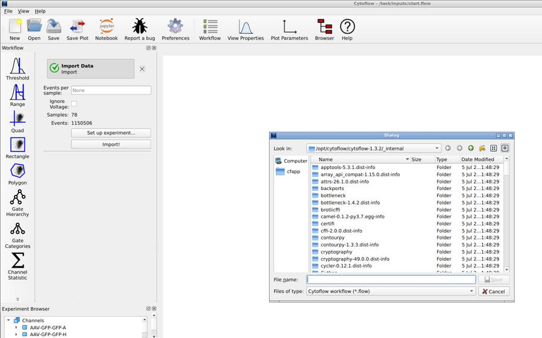
text(await tools.exec_command({cmd:"cu click 1010 744\ncu paste /task/outputs/workflow.flow\ncu screenshot /tmp/screen.png",max_output_tokens:1000}));image((await tools.view_image({path:"/tmp/screen.png"})).image_url);
Script completed Wall time 1.5 seconds Output:
{"chunk_id":"679185","wall_time_seconds":1.353335771,"exit_code":0,"original_token_count":4,"output":"/tmp/screen.png\n"}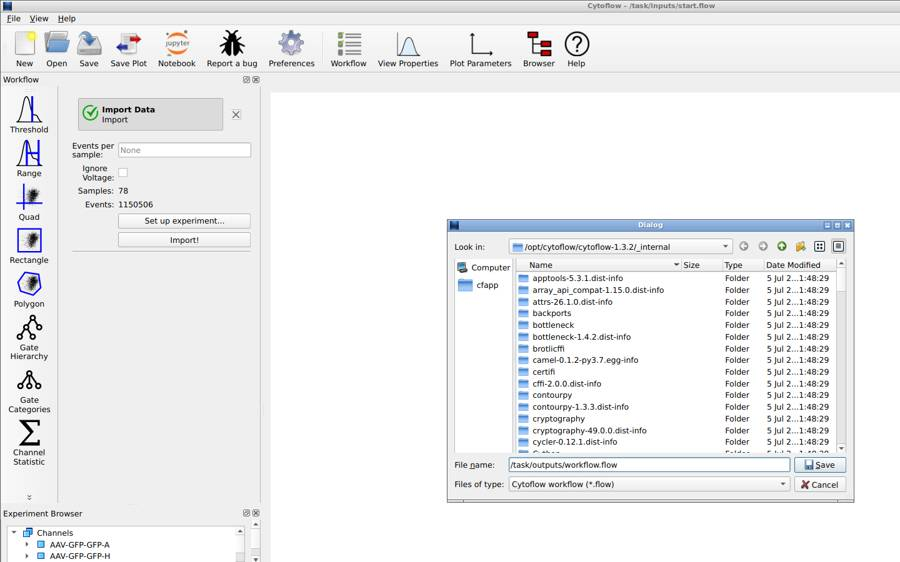
text(await tools.exec_command({cmd:"cu click 1306 745\ncu click 45 459\ncu screenshot /tmp/screen.png",max_output_tokens:1000}));image((await tools.view_image({path:"/tmp/screen.png"})).image_url);
Script completed Wall time 0.3 seconds Output:
{"chunk_id":"92505d","wall_time_seconds":0.122295529,"exit_code":0,"original_token_count":4,"output":"/tmp/screen.png\n"}
text(await tools.exec_command({cmd:"cu screenshot /tmp/screen.png",max_output_tokens:1000}));image((await tools.view_image({path:"/tmp/screen.png"})).image_url);
Script completed Wall time 0.1 seconds Output:
{"chunk_id":"b2245e","wall_time_seconds":0.000004285,"exit_code":0,"original_token_count":4,"output":"/tmp/screen.png\n"}
text(await tools.exec_command({cmd:"cu click 280 321\ncu type cells\ncu click 345 353\ncu screenshot /tmp/screen.png",max_output_tokens:1000}));image((await tools.view_image({path:"/tmp/screen.png"})).image_url);
Script completed Wall time 0.4 seconds Output:
{"chunk_id":"fe8817","wall_time_seconds":0.251882042,"exit_code":0,"original_token_count":4,"output":"/tmp/screen.png\n"}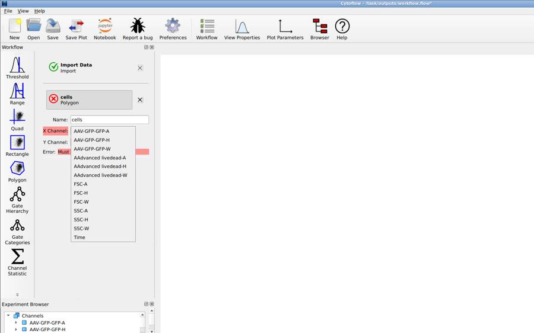
text(await tools.exec_command({cmd:"cu click 225 496\ncu click 350 384\ncu screenshot /tmp/screen.png",max_output_tokens:1000}));image((await tools.view_image({path:"/tmp/screen.png"})).image_url);
Script completed Wall time 0.3 seconds Output:
{"chunk_id":"c82e14","wall_time_seconds":0.120546818,"exit_code":0,"original_token_count":4,"output":"/tmp/screen.png\n"}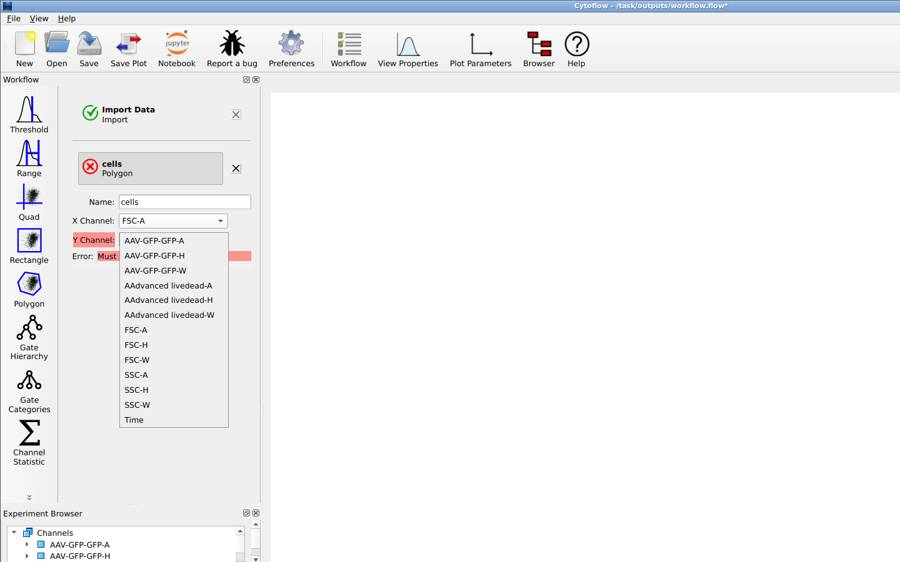
text(await tools.exec_command({cmd:"cu click 222 602\ncu click 649 69\ncu screenshot /tmp/screen.png",max_output_tokens:1000}));image((await tools.view_image({path:"/tmp/screen.png"})).image_url);
Script completed Wall time 0.3 seconds Output:
{"chunk_id":"f5c5ff","wall_time_seconds":0.120042983,"exit_code":0,"original_token_count":4,"output":"/tmp/screen.png\n"}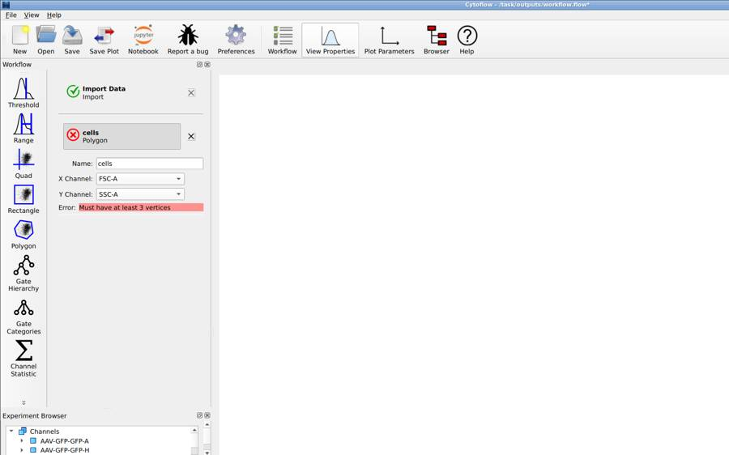
text(await tools.exec_command({cmd:"cu screenshot /tmp/screen.png",max_output_tokens:1000}));image((await tools.view_image({path:"/tmp/screen.png"})).image_url);
Script completed Wall time 0.1 seconds Output:
{"chunk_id":"400dee","wall_time_seconds":0.000004699,"exit_code":0,"original_token_count":4,"output":"/tmp/screen.png\n"}
text(await tools.exec_command({cmd:"cu click 653 73\ncu screenshot /tmp/screen.png",max_output_tokens:1000}));image((await tools.view_image({path:"/tmp/screen.png"})).image_url);
Script completed Wall time 0.2 seconds Output:
{"chunk_id":"c0a8fe","wall_time_seconds":0.047391451,"exit_code":0,"original_token_count":4,"output":"/tmp/screen.png\n"}
text(await tools.exec_command({cmd:"cu click 700 9 double\ncu screenshot /tmp/screen.png",max_output_tokens:1000}));image((await tools.view_image({path:"/tmp/screen.png"})).image_url);
Script completed Wall time 0.3 seconds Output:
{"chunk_id":"2fed04","wall_time_seconds":0.144100846,"exit_code":0,"original_token_count":4,"output":"/tmp/screen.png\n"}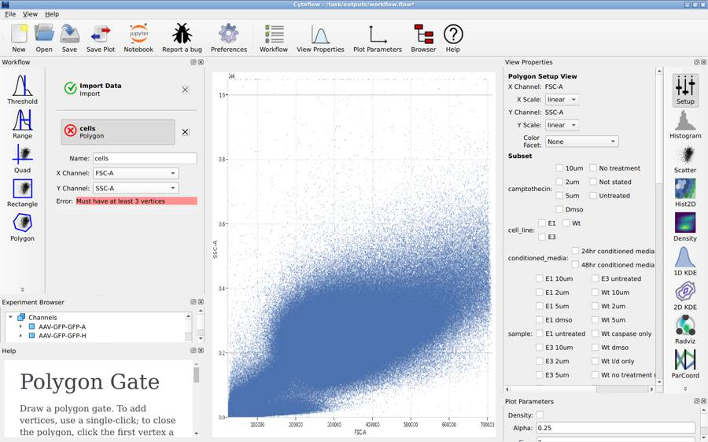
text(await tools.exec_command({cmd:"cu click 1167 202\ncu screenshot /tmp/screen.png",max_output_tokens:1000}));image((await tools.view_image({path:"/tmp/screen.png"})).image_url);
Script completed Wall time 0.2 seconds Output:
{"chunk_id":"886f5f","wall_time_seconds":0.038684474,"exit_code":0,"original_token_count":4,"output":"/tmp/screen.png\n"}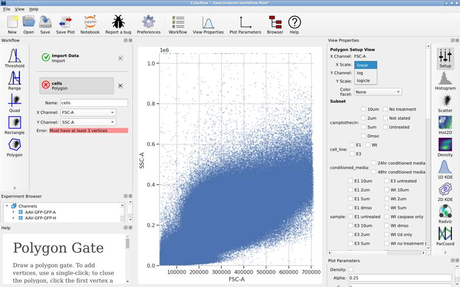
text(await tools.exec_command({cmd:"cu click 1133 230\ncu click 1167 255\ncu click 1135 282\ncu screenshot /tmp/screen.png",max_output_tokens:1000}));image((await tools.view_image({path:"/tmp/screen.png"})).image_url);
Script completed Wall time 0.4 seconds Output:
{"chunk_id":"d36d54","wall_time_seconds":0.24993434,"exit_code":0,"original_token_count":4,"output":"/tmp/screen.png\n"}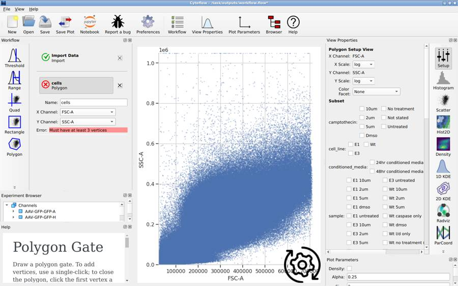
text(await tools.exec_command({cmd:"cu click 408 713\ncu click 408 615\ncu screenshot /tmp/screen.png",max_output_tokens:1000}));image((await tools.view_image({path:"/tmp/screen.png"})).image_url);
Script completed Wall time 0.3 seconds Output:
{"chunk_id":"bf9bae","wall_time_seconds":0.141426983,"exit_code":0,"original_token_count":4,"output":"/tmp/screen.png\n"}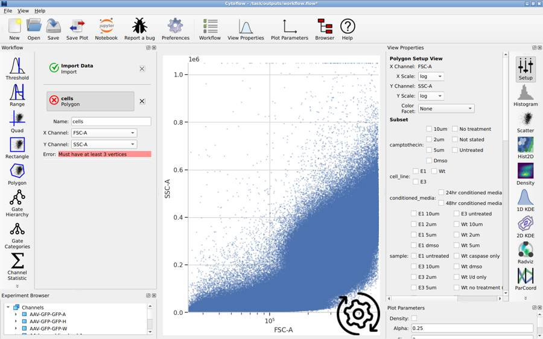
text(await tools.exec_command({cmd:"cu click 408 784\ncu screenshot /tmp/screen.png",max_output_tokens:1000}));image((await tools.view_image({path:"/tmp/screen.png"})).image_url);
Script completed Wall time 0.2 seconds Output:
{"chunk_id":"2cc82f","wall_time_seconds":0.029661049,"exit_code":0,"original_token_count":4,"output":"/tmp/screen.png\n"}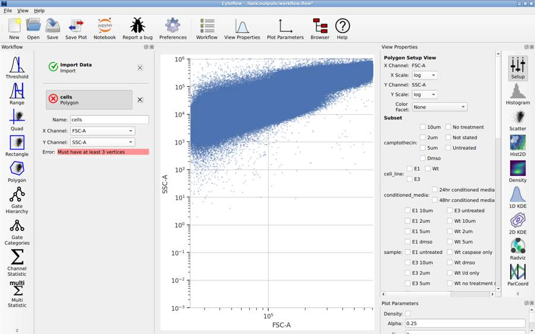
text(await tools.exec_command({cmd:"cu click 1167 203\ncu key Home\ncu key Return\ncu click 1167 254\ncu key Home\ncu key Return\ncu click 1097 844\ncu screenshot /tmp/screen.png",max_output_tokens:1000}));image((await tools.view_image({path:"/tmp/screen.png"})).image_url);
Script completed Wall time 0.5 seconds Output:
{"chunk_id":"7d5e2c","wall_time_seconds":0.300251011,"exit_code":0,"original_token_count":4,"output":"/tmp/screen.png\n"}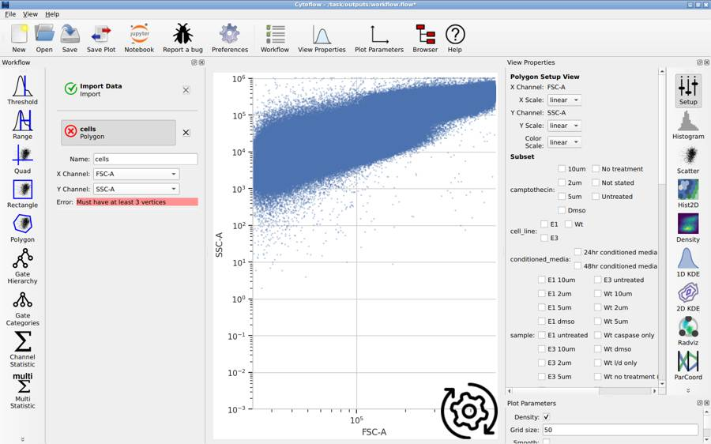
text(await tools.exec_command({cmd:"cu screenshot /tmp/screen.png",max_output_tokens:1000}));image((await tools.view_image({path:"/tmp/screen.png"})).image_url);
Script completed Wall time 0.1 seconds Output:
{"chunk_id":"d588ef","wall_time_seconds":0.000005052,"exit_code":0,"original_token_count":4,"output":"/tmp/screen.png\n"}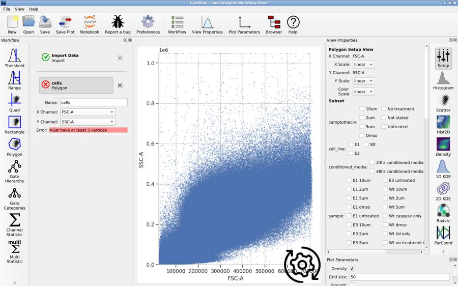
text(await tools.exec_command({cmd:"cu click 1137 425\ncu click 1151 454\ncu screenshot /tmp/screen.png",max_output_tokens:1000}));image((await tools.view_image({path:"/tmp/screen.png"})).image_url);
Script completed Wall time 0.3 seconds Output:
{"chunk_id":"9166a0","wall_time_seconds":0.131500605,"exit_code":0,"original_token_count":4,"output":"/tmp/screen.png\n"}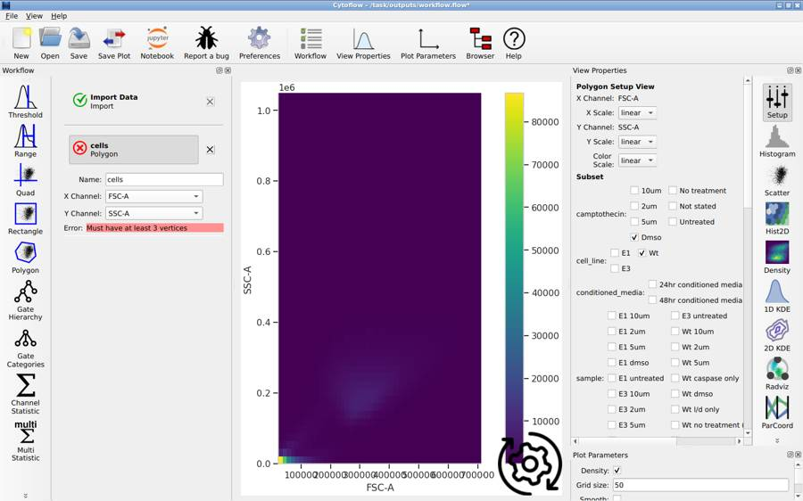
text(await tools.exec_command({cmd:"cu click 1167 288\ncu key Down\ncu key Return\ncu screenshot /tmp/screen.png",max_output_tokens:1000}));image((await tools.view_image({path:"/tmp/screen.png"})).image_url);
Script completed Wall time 0.2 seconds Output:
{"chunk_id":"8b2ddb","wall_time_seconds":0.058183866,"exit_code":0,"original_token_count":4,"output":"/tmp/screen.png\n"}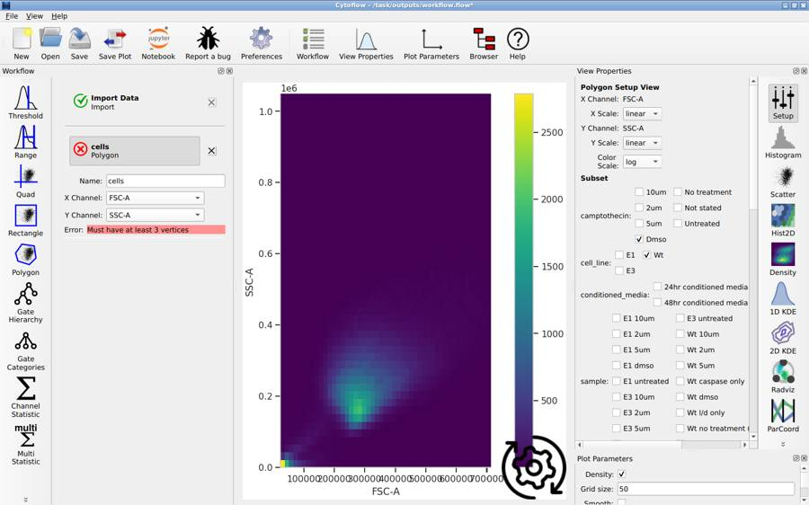
text(await tools.exec_command({cmd:"cu screenshot /tmp/screen.png",max_output_tokens:1000}));image((await tools.view_image({path:"/tmp/screen.png"})).image_url);
Script completed Wall time 0.1 seconds Output:
{"chunk_id":"07a6a7","wall_time_seconds":0.0000049,"exit_code":0,"original_token_count":4,"output":"/tmp/screen.png\n"}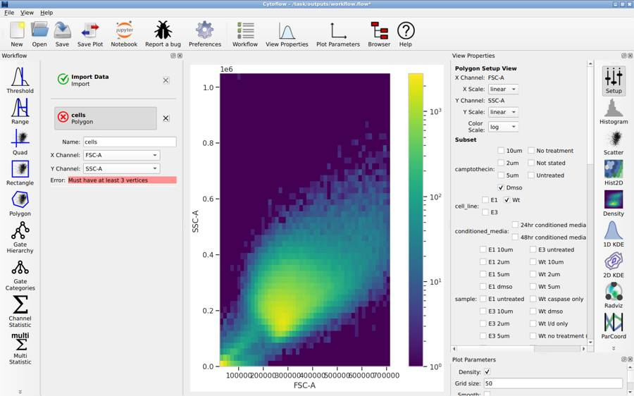
text(await tools.exec_command({cmd:"cu click 539 808\ncu click 551 706\ncu click 612 560\ncu click 882 260\ncu click 882 780\ncu click 639 817\ncu click 539 808\ncu screenshot /tmp/screen.png",max_output_tokens:1000}));image((await tools.view_image({path:"/tmp/screen.png"})).image_url);
Script completed Wall time 0.8 seconds Output:
{"chunk_id":"12f573","wall_time_seconds":0.659420761,"exit_code":0,"original_token_count":4,"output":"/tmp/screen.png\n"}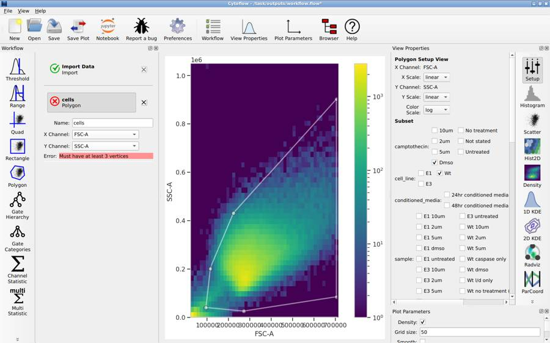
text(await tools.exec_command({cmd:"cu click 539 808 double\ncu key ctrl+s\ncu screenshot /tmp/screen.png",max_output_tokens:1000}));image((await tools.view_image({path:"/tmp/screen.png"})).image_url);
Script completed Wall time 0.3 seconds Output:
{"chunk_id":"0a11eb","wall_time_seconds":0.155140965,"exit_code":0,"original_token_count":4,"output":"/tmp/screen.png\n"}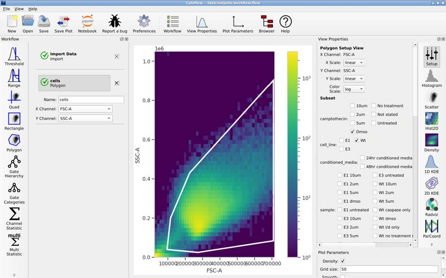
text(await tools.exec_command({cmd:"cu click 45 460\ncu screenshot /tmp/screen.png",max_output_tokens:1000}));image((await tools.view_image({path:"/tmp/screen.png"})).image_url);
Script completed Wall time 0.2 seconds Output:
{"chunk_id":"e63a16","wall_time_seconds":0.026417533,"exit_code":0,"original_token_count":4,"output":"/tmp/screen.png\n"}text(await tools.exec_command({cmd:"cu screenshot /tmp/screen.png",max_output_tokens:1000}));image((await tools.view_image({path:"/tmp/screen.png"})).image_url);
Script completed Wall time 0.1 seconds Output:
{"chunk_id":"cba367","wall_time_seconds":0.000005659,"exit_code":0,"original_token_count":4,"output":"/tmp/screen.png\n"}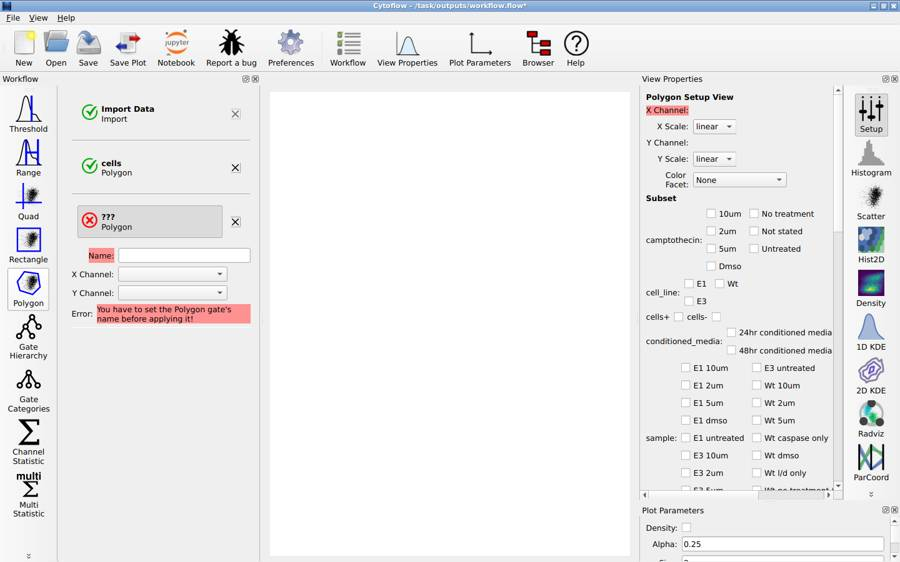
text(await tools.exec_command({cmd:"cu click 291 409\ncu type singlets\ncu click 351 438\ncu key f\ncu key Return\ncu click 352 468\ncu key f\ncu key Down\ncu key Return\ncu click 1085 507\ncu screenshot /tmp/screen.png",max_output_tokens:1000}));image((await tools.view_image({path:"/tmp/screen.png"})).image_url);
Script completed Wall time 0.8 seconds Output:
{"chunk_id":"d9341e","wall_time_seconds":0.62004615,"exit_code":0,"original_token_count":4,"output":"/tmp/screen.png\n"}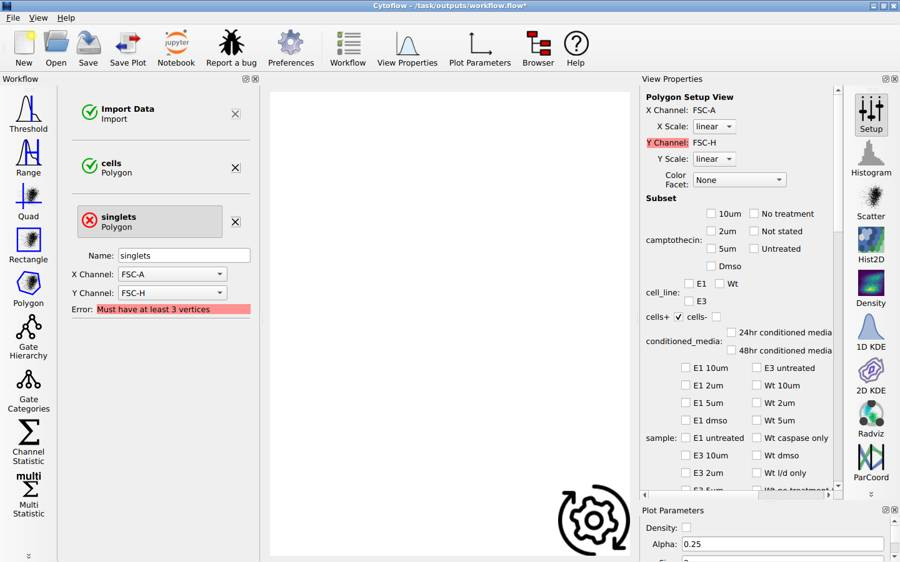
text(await tools.exec_command({cmd:"cu screenshot /tmp/screen.png",max_output_tokens:1000}));image((await tools.view_image({path:"/tmp/screen.png"})).image_url);
Script completed Wall time 0.1 seconds Output:
{"chunk_id":"4652b0","wall_time_seconds":0.000006189,"exit_code":0,"original_token_count":4,"output":"/tmp/screen.png\n"}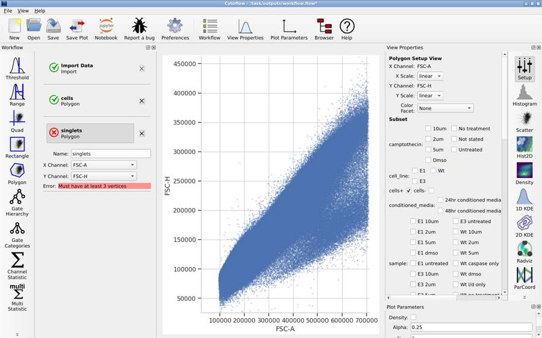
text(await tools.exec_command({cmd:"cu click 1098 844\ncu screenshot /tmp/screen.png",max_output_tokens:1000}));image((await tools.view_image({path:"/tmp/screen.png"})).image_url);
Script completed Wall time 0.2 seconds Output:
{"chunk_id":"a78d40","wall_time_seconds":0.034535865,"exit_code":0,"original_token_count":4,"output":"/tmp/screen.png\n"}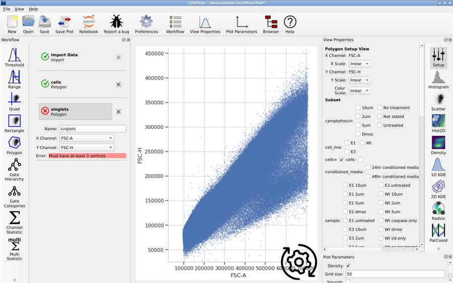
text(await tools.exec_command({cmd:"cu click 1167 288\ncu key Down\ncu key Return\ncu screenshot /tmp/screen.png",max_output_tokens:1000}));image((await tools.view_image({path:"/tmp/screen.png"})).image_url);
Script completed Wall time 0.2 seconds Output:
{"chunk_id":"055543","wall_time_seconds":0.057756596,"exit_code":0,"original_token_count":4,"output":"/tmp/screen.png\n"}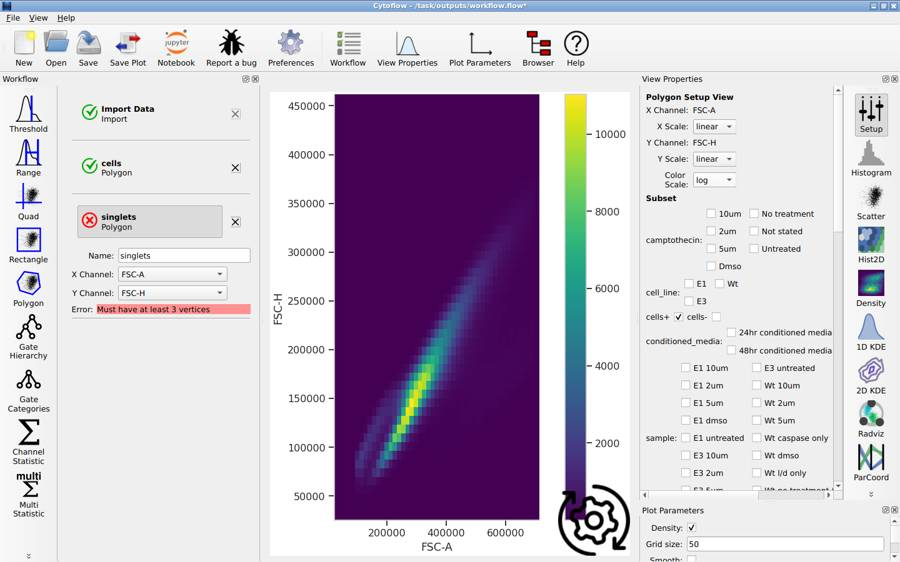
text(await tools.exec_command({cmd:"cu screenshot /tmp/screen.png",max_output_tokens:1000}));image((await tools.view_image({path:"/tmp/screen.png"})).image_url);
Script completed Wall time 0.1 seconds Output:
{"chunk_id":"8aea97","wall_time_seconds":0.000006207,"exit_code":0,"original_token_count":4,"output":"/tmp/screen.png\n"}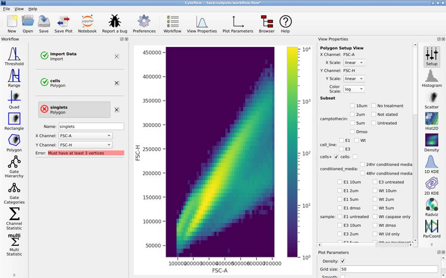
text(await tools.exec_command({cmd:"cu click 563 803\ncu click 563 706\ncu click 683 535\ncu click 883 210\ncu click 883 424\ncu click 674 662\ncu click 563 803 double\ncu key ctrl+s\ncu click 46 532\ncu screenshot /tmp/screen.png",max_output_tokens:1000}));image((await tools.view_image({path:"/tmp/screen.png"})).image_url);
Script completed Wall time 1.1 seconds Output:
{"chunk_id":"9d7b09","wall_time_seconds":0.896607666,"exit_code":0,"original_token_count":4,"output":"/tmp/screen.png\n"}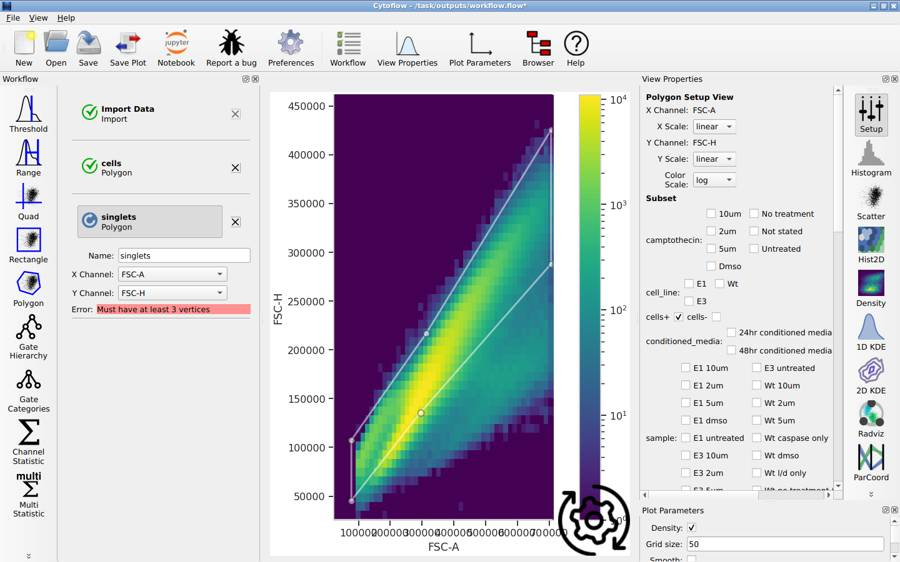
text(await tools.exec_command({cmd:"cu screenshot /tmp/screen.png",max_output_tokens:1000}));image((await tools.view_image({path:"/tmp/screen.png"})).image_url);
Script completed Wall time 0.1 seconds Output:
{"chunk_id":"660faf","wall_time_seconds":0.00000417,"exit_code":0,"original_token_count":4,"output":"/tmp/screen.png\n"}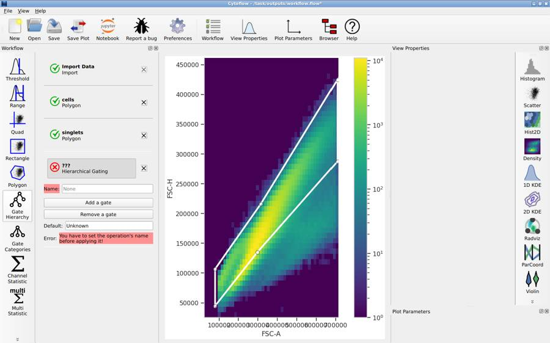
text(await tools.exec_command({cmd:"cu click 376 440\ncu screenshot /tmp/screen.png",max_output_tokens:1000}));image((await tools.view_image({path:"/tmp/screen.png"})).image_url);
Script completed Wall time 0.2 seconds Output:
{"chunk_id":"8727c8","wall_time_seconds":0.018535806,"exit_code":0,"original_token_count":4,"output":"/tmp/screen.png\n"}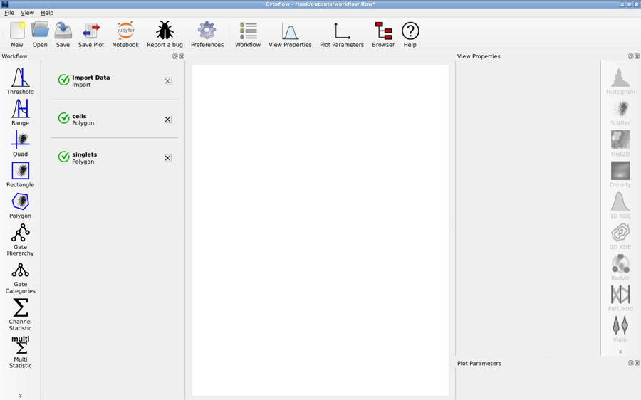
text(await tools.exec_command({cmd:"cu click 238 350\ncu click 46 244\ncu screenshot /tmp/screen.png",max_output_tokens:1000}));image((await tools.view_image({path:"/tmp/screen.png"})).image_url);
Script completed Wall time 0.3 seconds Output:
{"chunk_id":"46f93c","wall_time_seconds":0.127442696,"exit_code":0,"original_token_count":4,"output":"/tmp/screen.png\n"}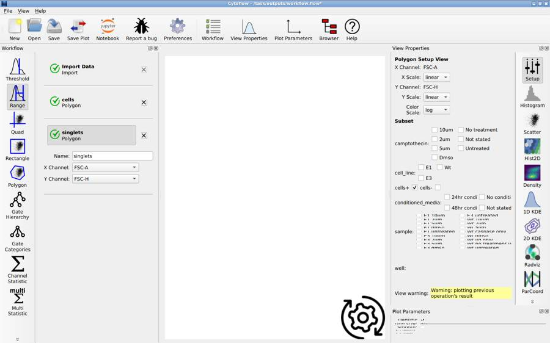
text(await tools.exec_command({cmd:"cu screenshot /tmp/screen.png",max_output_tokens:1000}));image((await tools.view_image({path:"/tmp/screen.png"})).image_url);
Script completed Wall time 0.1 seconds Output:
{"chunk_id":"9d91d5","wall_time_seconds":0.000005649,"exit_code":0,"original_token_count":4,"output":"/tmp/screen.png\n"}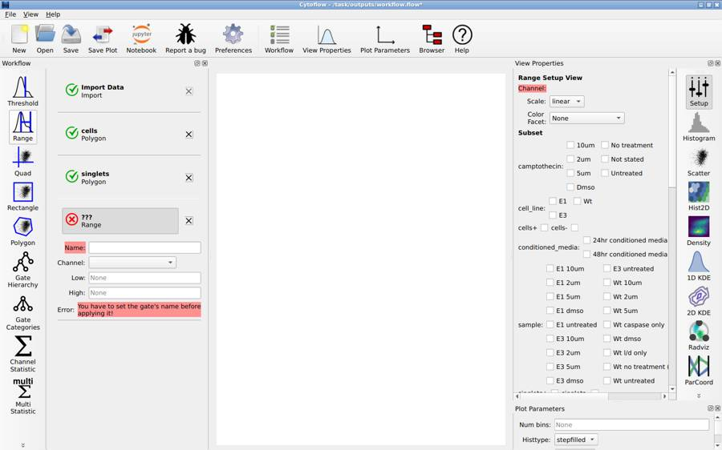
text(await tools.exec_command({cmd:"cu click 264 494\ncu type live\ncu click 337 524\ncu key Home\ncu key Down\ncu key Down\ncu key Down\ncu key Return\ncu click 1155 202\ncu key End\ncu key Return\ncu click 1085 453\ncu scroll 1278 704 down 4\ncu screenshot /tmp/screen.png",max_output_tokens:1000}));image((await tools.view_image({path:"/tmp/screen.png"})).image_url);
Script completed Wall time 1.1 seconds Output:
{"chunk_id":"bf5856","wall_time_seconds":0.959344617,"exit_code":0,"original_token_count":4,"output":"/tmp/screen.png\n"}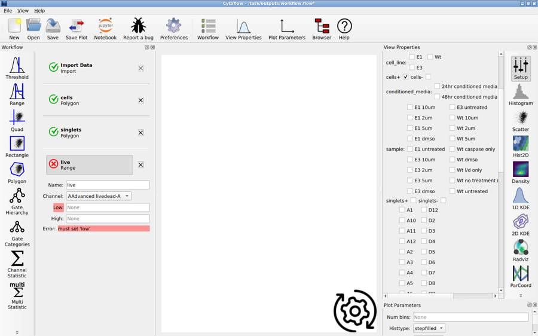
text(await tools.exec_command({cmd:"cu click 1107 535\ncu click 1211 399\ncu click 1211 454\ncu click 1211 482\ncu scroll 1261 334 up 8\ncu click 1233 235\ncu screenshot /tmp/screen.png",max_output_tokens:1000}));image((await tools.view_image({path:"/tmp/screen.png"})).image_url);
Script completed Wall time 1.4 seconds Output:
{"chunk_id":"b3e4a0","wall_time_seconds":1.258967673,"exit_code":0,"original_token_count":4,"output":"/tmp/screen.png\n"}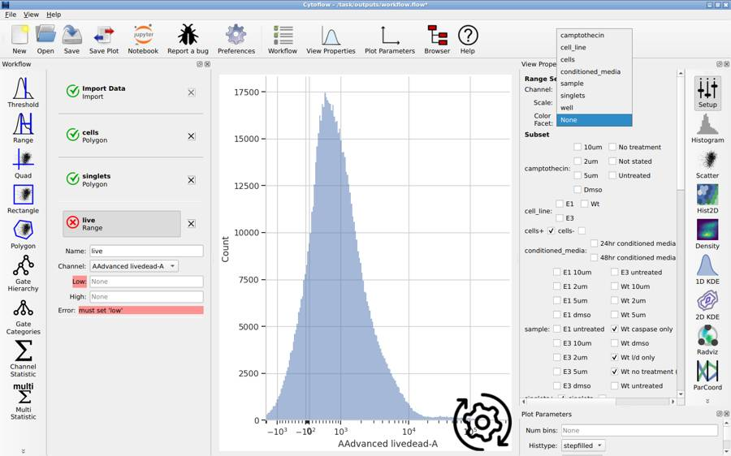
text(await tools.exec_command({cmd:"cu click 1131 164\ncu screenshot /tmp/screen.png",max_output_tokens:1000}));image((await tools.view_image({path:"/tmp/screen.png"})).image_url);
Script completed Wall time 0.2 seconds Output:
{"chunk_id":"ff6282","wall_time_seconds":0.027870938,"exit_code":0,"original_token_count":4,"output":"/tmp/screen.png\n"}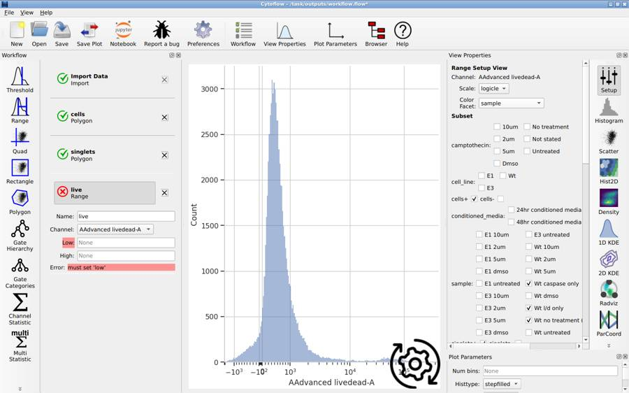
text(await tools.exec_command({cmd:"cu screenshot /tmp/screen.png",max_output_tokens:1000}));image((await tools.view_image({path:"/tmp/screen.png"})).image_url);
Script completed Wall time 0.1 seconds Output:
{"chunk_id":"d05075","wall_time_seconds":0.000004541,"exit_code":0,"original_token_count":4,"output":"/tmp/screen.png\n"}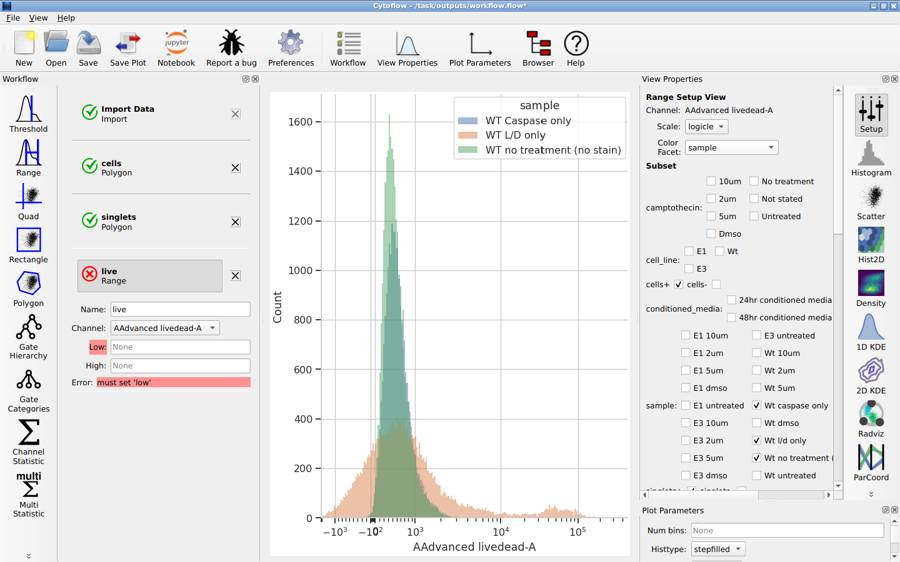
text(await tools.exec_command({cmd:"cu click 269 554\ncu key ctrl+a\ncu type -1000000\ncu click 265 586\ncu key ctrl+a\ncu type 10000\ncu key Tab\ncu click 1211 648\ncu click 1211 705\ncu click 1211 733\ncu click 1211 761\ncu screenshot /tmp/screen.png",max_output_tokens:1000}));image((await tools.view_image({path:"/tmp/screen.png"})).image_url);
Script completed Wall time 1.1 seconds Output:
{"chunk_id":"132739","wall_time_seconds":0.965822707,"exit_code":0,"original_token_count":4,"output":"/tmp/screen.png\n"}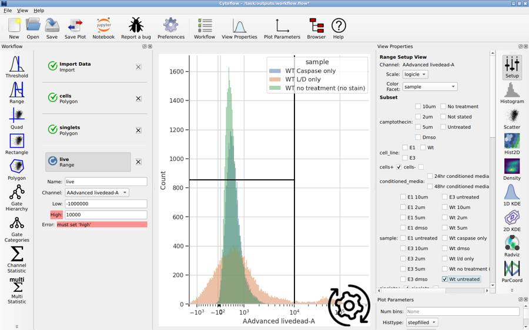
text(await tools.exec_command({cmd:"cu screenshot /tmp/screen.png",max_output_tokens:1000}));image((await tools.view_image({path:"/tmp/screen.png"})).image_url);
Script completed Wall time 0.1 seconds Output:
{"chunk_id":"e9762f","wall_time_seconds":0.000006434,"exit_code":0,"original_token_count":4,"output":"/tmp/screen.png\n"}text(await tools.exec_command({cmd:"cu click 43 179\ncu screenshot /tmp/screen.png",max_output_tokens:1000}));image((await tools.view_image({path:"/tmp/screen.png"})).image_url);
Script completed Wall time 0.2 seconds Output:
{"chunk_id":"b7da4a","wall_time_seconds":0.026474491,"exit_code":0,"original_token_count":4,"output":"/tmp/screen.png\n"}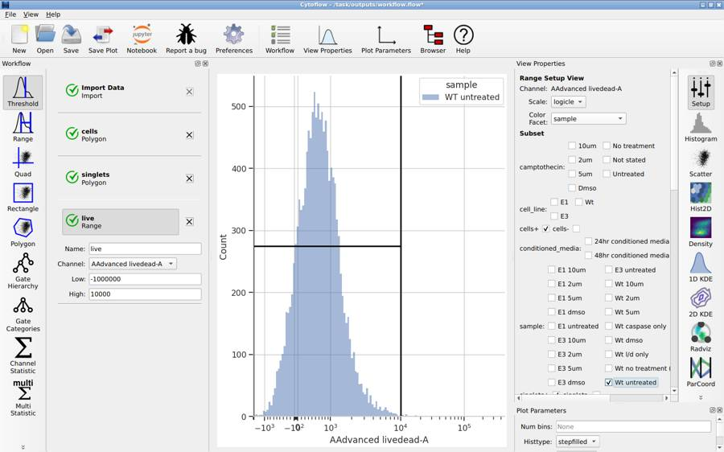
text(await tools.exec_command({cmd:"cu screenshot /tmp/screen.png",max_output_tokens:1000}));image((await tools.view_image({path:"/tmp/screen.png"})).image_url);
Script completed Wall time 0.1 seconds Output:
{"chunk_id":"9538de","wall_time_seconds":0.00000583,"exit_code":0,"original_token_count":4,"output":"/tmp/screen.png\n"}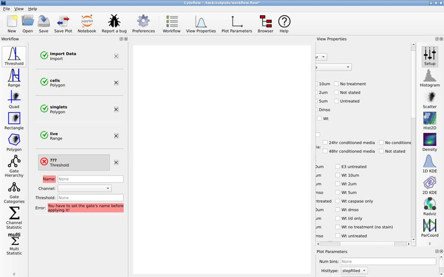
text(await tools.exec_command({cmd:"cu click 276 582\ncu key ctrl+a\ncu type caspase_positive\ncu click 350 611\ncu key Home\ncu key Return\ncu drag 1173 793 1032 793\ncu screenshot /tmp/screen.png",max_output_tokens:1000}));image((await tools.view_image({path:"/tmp/screen.png"})).image_url);
Script completed Wall time 0.8 seconds Output:
{"chunk_id":"524156","wall_time_seconds":0.598151255,"exit_code":0,"original_token_count":4,"output":"/tmp/screen.png\n"}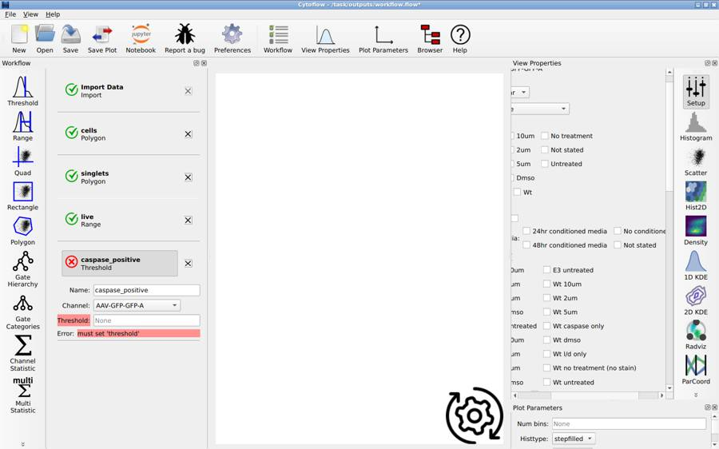
text(await tools.exec_command({cmd:"cu drag 1197 793 1034 793\ncu scroll 1275 266 up 20\ncu screenshot /tmp/screen.png",max_output_tokens:1000}));image((await tools.view_image({path:"/tmp/screen.png"})).image_url);
Script completed Wall time 2.1 seconds Output:
{"chunk_id":"693793","wall_time_seconds":1.962301884,"exit_code":0,"original_token_count":4,"output":"/tmp/screen.png\n"}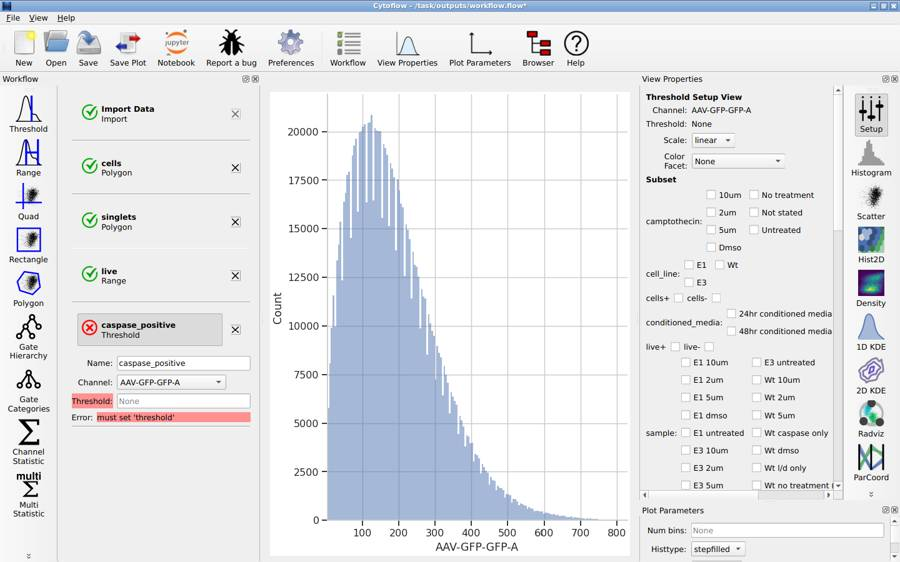
text(await tools.exec_command({cmd:"cu click 1167 225\ncu key End\ncu key Return\ncu click 1086 478\ncu click 1080 554\ncu click 1211 693\ncu click 1211 748\ncu click 1211 776\ncu scroll 1273 687 down 3\ncu screenshot /tmp/screen.png",max_output_tokens:1000}));image((await tools.view_image({path:"/tmp/screen.png"})).image_url);
Script completed Wall time 1.1 seconds Output:
{"chunk_id":"4b9eb0","wall_time_seconds":0.887697542,"exit_code":0,"original_token_count":4,"output":"/tmp/screen.png\n"}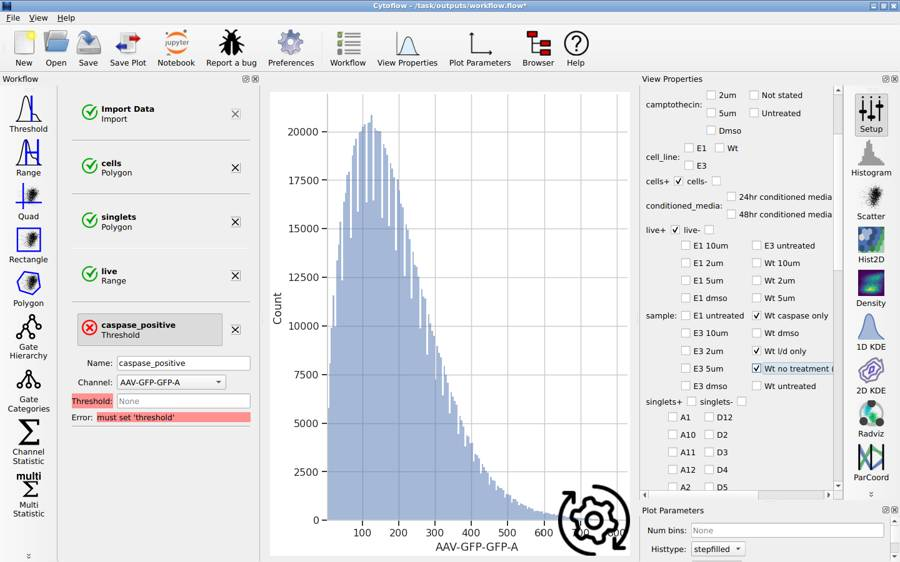
text(await tools.exec_command({cmd:"cu click 1107 643\ncu scroll 1258 351 up 10\ncu click 1245 257\ncu screenshot /tmp/screen.png",max_output_tokens:1000}));image((await tools.view_image({path:"/tmp/screen.png"})).image_url);
Script completed Wall time 1.3 seconds Output:
{"chunk_id":"a6bfb6","wall_time_seconds":1.136970393,"exit_code":0,"original_token_count":4,"output":"/tmp/screen.png\n"}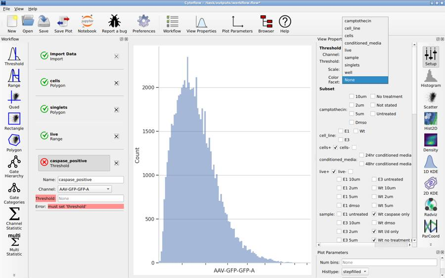
text(await tools.exec_command({cmd:"cu click 1141 186\ncu screenshot /tmp/screen.png",max_output_tokens:1000}));image((await tools.view_image({path:"/tmp/screen.png"})).image_url);
Script completed Wall time 0.2 seconds Output:
{"chunk_id":"1b6150","wall_time_seconds":0.025960742,"exit_code":0,"original_token_count":4,"output":"/tmp/screen.png\n"}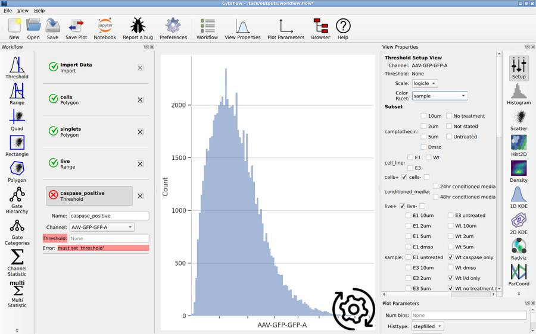
text(await tools.exec_command({cmd:"cu screenshot /tmp/screen.png",max_output_tokens:1000}));image((await tools.view_image({path:"/tmp/screen.png"})).image_url);
Script completed Wall time 0.1 seconds Output:
{"chunk_id":"5fd2e9","wall_time_seconds":0.000005751,"exit_code":0,"original_token_count":4,"output":"/tmp/screen.png\n"}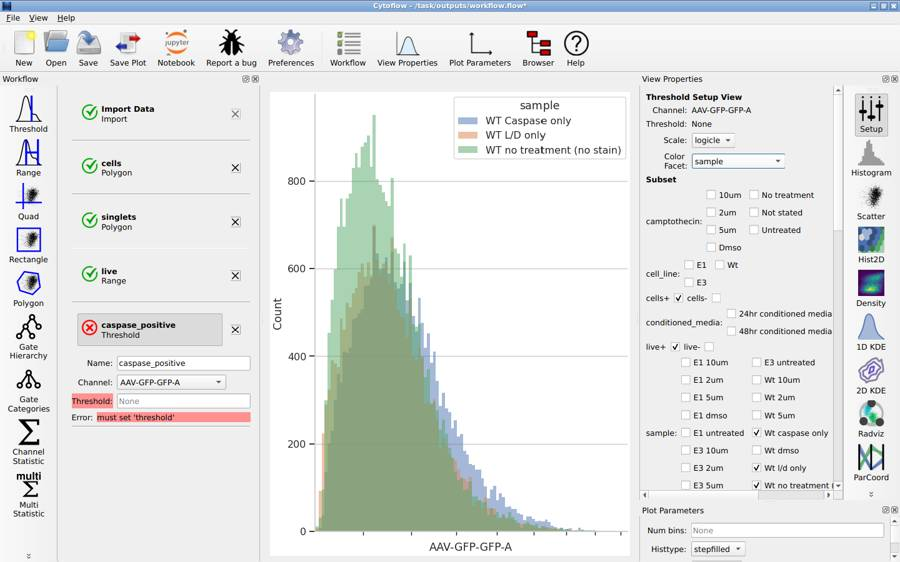
text(await tools.exec_command({cmd:"cu click 282 642\ncu key ctrl+a\ncu type 500\ncu key Tab\ncu key ctrl+s\ncu click 43 691\ncu screenshot /tmp/screen.png",max_output_tokens:1000}));image((await tools.view_image({path:"/tmp/screen.png"})).image_url);
Script completed Wall time 0.5 seconds Output:
{"chunk_id":"659873","wall_time_seconds":0.282879954,"exit_code":0,"original_token_count":4,"output":"/tmp/screen.png\n"}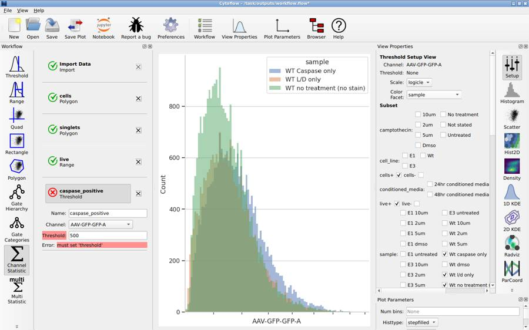
text(await tools.exec_command({cmd:"cu screenshot /tmp/screen.png",max_output_tokens:1000}));image((await tools.view_image({path:"/tmp/screen.png"})).image_url);
Script completed Wall time 0.1 seconds Output:
{"chunk_id":"d40751","wall_time_seconds":0.000006039,"exit_code":0,"original_token_count":4,"output":"/tmp/screen.png\n"}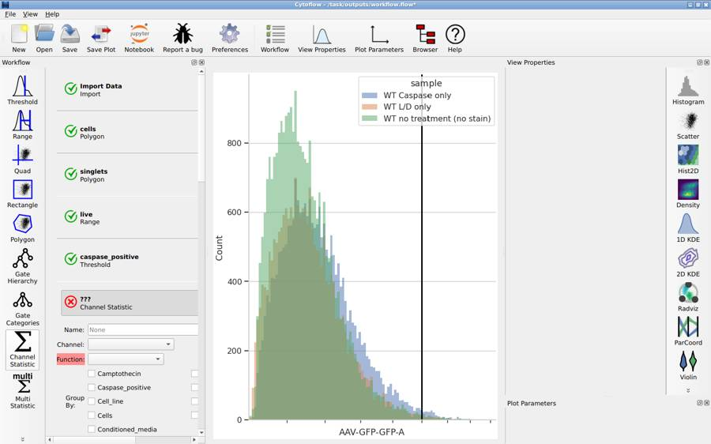
text(await tools.exec_command({cmd:"cu drag 420 500 520 500\ncu click 274 668\ncu key ctrl+a\ncu type n_all\ncu click 340 697\ncu key f\ncu key Return\ncu click 320 729\ncu screenshot /tmp/screen.png",max_output_tokens:1000}));image((await tools.view_image({path:"/tmp/screen.png"})).image_url);
Script completed Wall time 0.6 seconds Output:
{"chunk_id":"391e37","wall_time_seconds":0.457302724,"exit_code":0,"original_token_count":4,"output":"/tmp/screen.png\n"}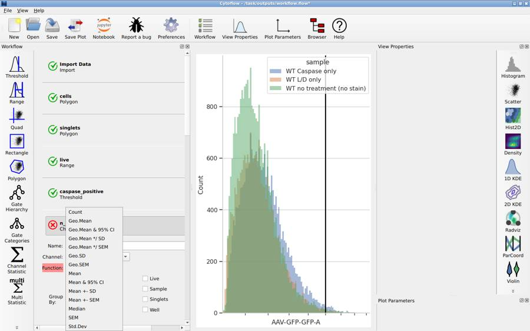
text(await tools.exec_command({cmd:"cu click 208 577\ncu click 394 840\ncu scroll 1392 741 down 7\ncu screenshot /tmp/screen.png",max_output_tokens:1000}));image((await tools.view_image({path:"/tmp/screen.png"})).image_url);
Script completed Wall time 1.0 seconds Output:
{"chunk_id":"75c664","wall_time_seconds":0.834615607,"exit_code":0,"original_token_count":4,"output":"/tmp/screen.png\n"}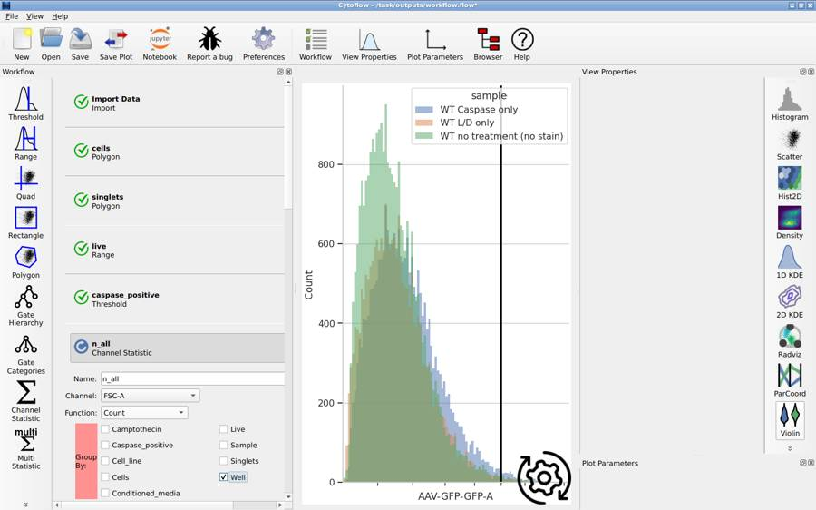
text(await tools.exec_command({cmd:"cu click 1395 791\ncu click 1395 791\ncu screenshot /tmp/screen.png",max_output_tokens:1000}));image((await tools.view_image({path:"/tmp/screen.png"})).image_url);
Script completed Wall time 0.3 seconds Output:
{"chunk_id":"8a34a6","wall_time_seconds":0.126892929,"exit_code":0,"original_token_count":4,"output":"/tmp/screen.png\n"}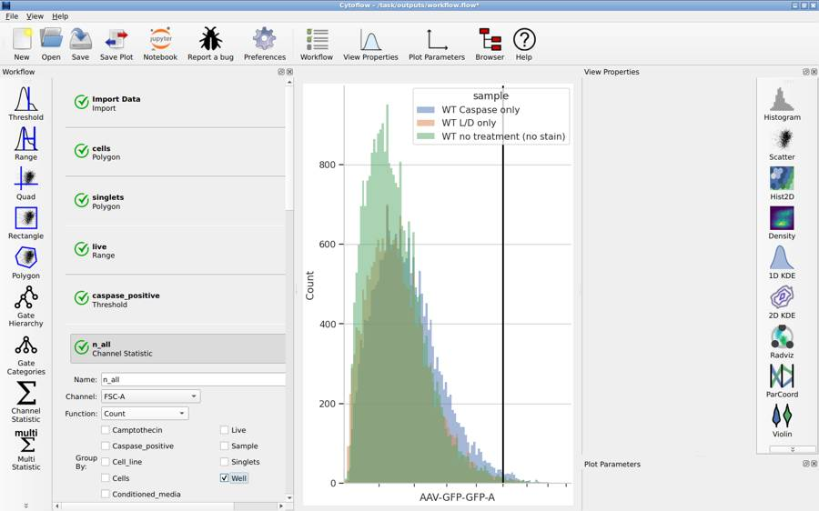
text(await tools.exec_command({cmd:"cu click 1378 790\ncu screenshot /tmp/screen.png",max_output_tokens:1000}));image((await tools.view_image({path:"/tmp/screen.png"})).image_url);
Script completed Wall time 0.2 seconds Output:
{"chunk_id":"b9e940","wall_time_seconds":0.02269771,"exit_code":0,"original_token_count":4,"output":"/tmp/screen.png\n"}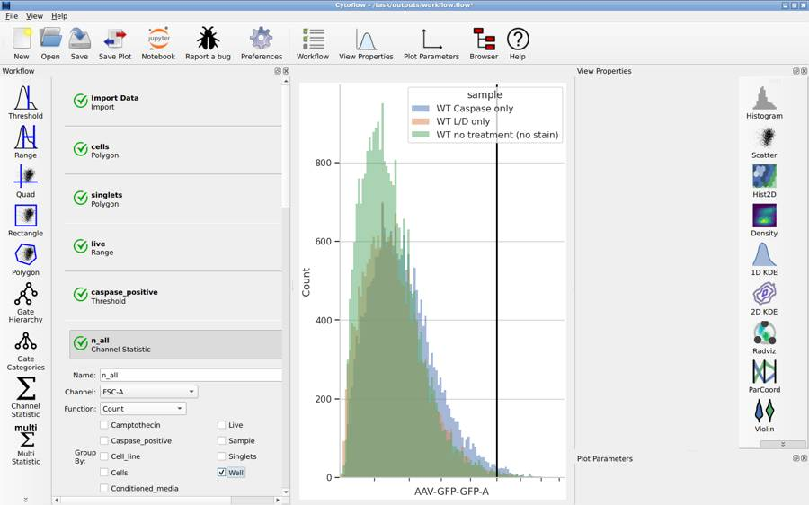
text(await tools.exec_command({cmd:"cu click 61 29\ncu screenshot /tmp/screen.png",max_output_tokens:1000}));image((await tools.view_image({path:"/tmp/screen.png"})).image_url);
Script completed Wall time 0.2 seconds Output:
{"chunk_id":"5a94e8","wall_time_seconds":0.023529102,"exit_code":0,"original_token_count":4,"output":"/tmp/screen.png\n"}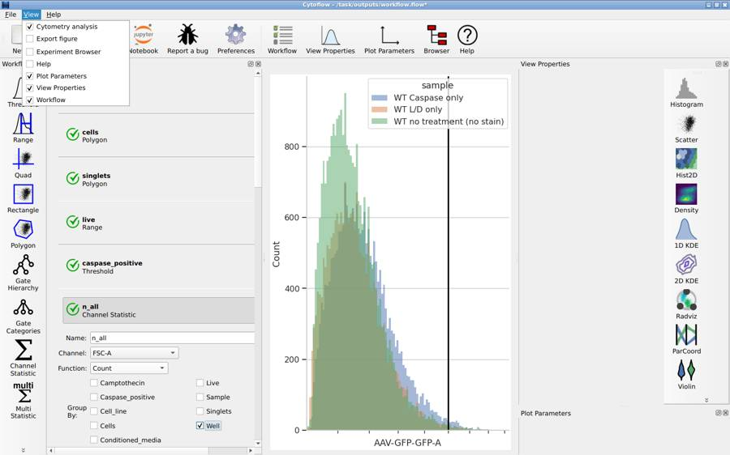
text(await tools.exec_command({cmd:"cu key Escape\ncu move 1394 792\ncu screenshot /tmp/screen.png",max_output_tokens:1000}));image((await tools.view_image({path:"/tmp/screen.png"})).image_url);
Script completed Wall time 0.1 seconds Output:
{"chunk_id":"ae1f42","wall_time_seconds":0.00000442,"exit_code":0,"original_token_count":4,"output":"/tmp/screen.png\n"}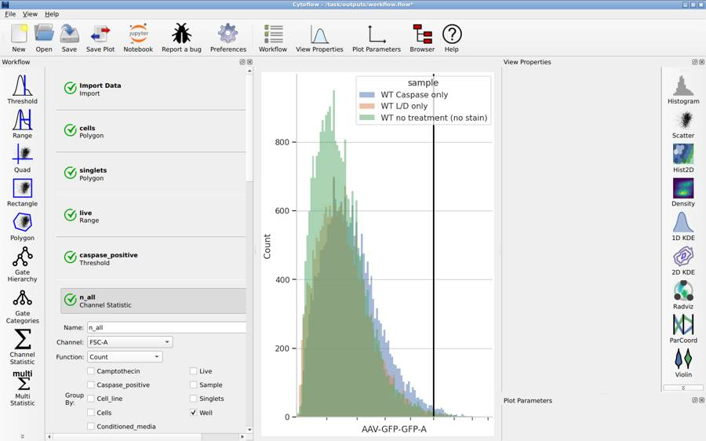
text(await tools.exec_command({cmd:"cu click 1431 816\ncu click 1395 886\ncu screenshot /tmp/screen.png",max_output_tokens:1000}));image((await tools.view_image({path:"/tmp/screen.png"})).image_url);
Script completed Wall time 0.3 seconds Output:
{"chunk_id":"200608","wall_time_seconds":0.127131814,"exit_code":0,"original_token_count":4,"output":"/tmp/screen.png\n"}text(await tools.exec_command({cmd:"cu click 1393 890 double\ncu screenshot /tmp/screen.png",max_output_tokens:1000}));image((await tools.view_image({path:"/tmp/screen.png"})).image_url);
Script completed Wall time 0.3 seconds Output:
{"chunk_id":"b0b703","wall_time_seconds":0.122915287,"exit_code":0,"original_token_count":4,"output":"/tmp/screen.png\n"}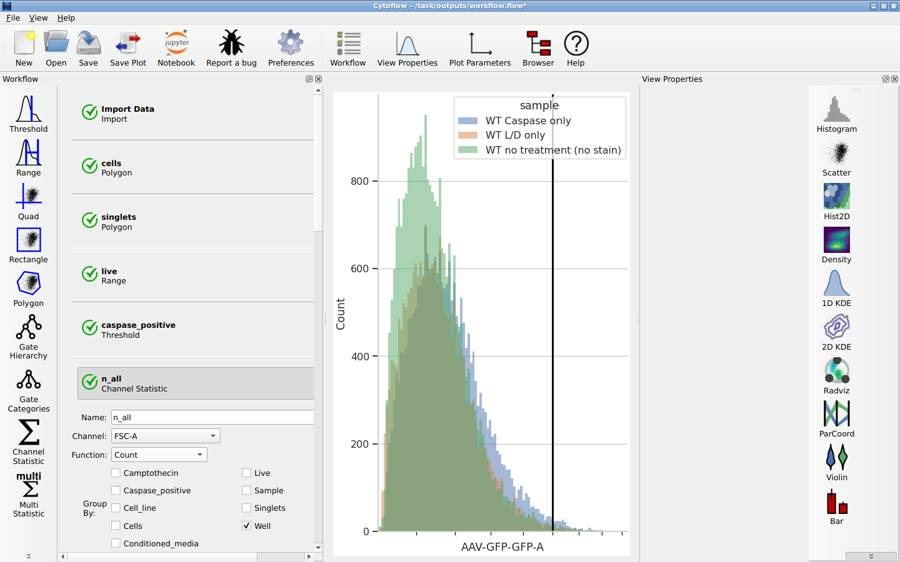
text(await tools.exec_command({cmd:"cu --help",max_output_tokens:3000}));
Script completed
Wall time 0.0 seconds
Output:
{"chunk_id":"57f2b2","wall_time_seconds":0.000004399,"exit_code":1,"original_token_count":116,"output":"# Computer-use helper: the agent's only way to act on the screen.\n# cu screenshot [path] -> PNG of the screen (default /tmp/screen.png); prints path\n# cu click X Y [left|right|double]\n# cu move X Y | cu drag X1 Y1 X2 Y2 | cu scroll X Y up|down [N]\n# cu type \"text\" (keystrokes) | cu paste \"text\" (clipboard) | cu key KEYS (e.g. ctrl+s, Return)\n# cu cursor -> current mouse position\nexport DISPLAY=${DISPLAY:-:1}\ncmd=$1; shift\n"}text(await tools.exec_command({cmd:"cu drag 1367 143 743 114\ncu screenshot /tmp/screen.png",max_output_tokens:1000}));image((await tools.view_image({path:"/tmp/screen.png"})).image_url);
Script completed Wall time 0.1 seconds Output:
{"chunk_id":"1f89dc","wall_time_seconds":0.000004956,"exit_code":0,"original_token_count":4,"output":"/tmp/screen.png\n"}text(await tools.exec_command({cmd:"cu screenshot /tmp/screen.png",max_output_tokens:1000}));image((await tools.view_image({path:"/tmp/screen.png"})).image_url);
Script completed Wall time 0.1 seconds Output:
{"chunk_id":"4fd12d","wall_time_seconds":0.000006599,"exit_code":0,"original_token_count":4,"output":"/tmp/screen.png\n"}text(await tools.exec_command({cmd:"cu drag 661 154 98 120\ncu screenshot /tmp/screen.png",max_output_tokens:1000}));image((await tools.view_image({path:"/tmp/screen.png"})).image_url);
Script completed Wall time 0.1 seconds Output:
{"chunk_id":"89ddbd","wall_time_seconds":0.000005745,"exit_code":0,"original_token_count":4,"output":"/tmp/screen.png\n"}text(await tools.exec_command({cmd:"cu screenshot /tmp/screen.png",max_output_tokens:1000}));image((await tools.view_image({path:"/tmp/screen.png"})).image_url);
Script completed Wall time 0.1 seconds Output:
{"chunk_id":"6316f6","wall_time_seconds":0.000005356,"exit_code":0,"original_token_count":4,"output":"/tmp/screen.png\n"}text(await tools.exec_command({cmd:"cu click 1021 114\ncu screenshot /tmp/screen.png",max_output_tokens:1000}));image((await tools.view_image({path:"/tmp/screen.png"})).image_url);
Script completed Wall time 0.2 seconds Output:
{"chunk_id":"f4b2dd","wall_time_seconds":0.020688924,"exit_code":0,"original_token_count":4,"output":"/tmp/screen.png\n"}text(await tools.exec_command({cmd:"cu click 1198 182\ncu key Home\ncu key Return\ncu click 1181 210\ncu key Home\ncu key Return\ncu click 1164 241\ncu key Home\ncu key Return\ncu screenshot /tmp/screen.png",max_output_tokens:1000}));image((await tools.view_image({path:"/tmp/screen.png"})).image_url);
Script completed Wall time 0.5 seconds Output:
{"chunk_id":"29ceea","wall_time_seconds":0.328593131,"exit_code":0,"original_token_count":4,"output":"/tmp/screen.png\n"}text(await tools.exec_command({cmd:"cu click 1199 181\ncu screenshot /tmp/screen.png",max_output_tokens:1000}));image((await tools.view_image({path:"/tmp/screen.png"})).image_url);
Script completed Wall time 0.2 seconds Output:
{"chunk_id":"d79287","wall_time_seconds":0.023158413,"exit_code":0,"original_token_count":4,"output":"/tmp/screen.png\n"}text(await tools.exec_command({cmd:"cu click 1142 205\ncu click 1182 210\ncu screenshot /tmp/screen.png",max_output_tokens:1000}));image((await tools.view_image({path:"/tmp/screen.png"})).image_url);
Script completed Wall time 0.3 seconds Output:
{"chunk_id":"192a30","wall_time_seconds":0.129691216,"exit_code":0,"original_token_count":4,"output":"/tmp/screen.png\n"}text(await tools.exec_command({cmd:"cu click 1145 213\ncu click 1165 241\ncu key Home\ncu key Return\ncu screenshot /tmp/screen.png",max_output_tokens:1000}));image((await tools.view_image({path:"/tmp/screen.png"})).image_url);
Script completed Wall time 0.3 seconds Output:
{"chunk_id":"cdb6bb","wall_time_seconds":0.15814551,"exit_code":0,"original_token_count":4,"output":"/tmp/screen.png\n"}text(await tools.exec_command({cmd:"cu click 1264 392\ncu screenshot /tmp/screen.png",max_output_tokens:1000}));image((await tools.view_image({path:"/tmp/screen.png"})).image_url);
Script completed Wall time 0.2 seconds Output:
{"chunk_id":"83899e","wall_time_seconds":0.028558759,"exit_code":0,"original_token_count":4,"output":"/tmp/screen.png\n"}text(await tools.exec_command({cmd:"cu click 659 568\ncu paste /task/outputs/gui_all_events.csv\ncu screenshot /tmp/screen.png",max_output_tokens:1000}));image((await tools.view_image({path:"/tmp/screen.png"})).image_url);
Script completed Wall time 1.5 seconds Output:
{"chunk_id":"df1af3","wall_time_seconds":1.360474592,"exit_code":0,"original_token_count":4,"output":"/tmp/screen.png\n"}text(await tools.exec_command({cmd:"cu click 982 568\ncu screenshot /tmp/screen.png",max_output_tokens:1000}));image((await tools.view_image({path:"/tmp/screen.png"})).image_url);
text(await tools.exec_command({cmd:"head -10 /task/outputs/gui_all_events.csv",max_output_tokens:1000}));
Script completed Wall time 0.2 seconds Output:
{"chunk_id":"8fc98b","wall_time_seconds":0.022125866,"exit_code":0,"original_token_count":4,"output":"/tmp/screen.png\n"}{"chunk_id":"52566e","wall_time_seconds":0.000004279,"exit_code":0,"original_token_count":46,"output":"well = A1,30920.0\nwell = A10,24604.0\nwell = A11,38346.0\nwell = A12,31708.0\nwell = A2,31266.0\nwell = A3,38748.0\nwell = A4,34861.0\nwell = A5,14011.0\nwell = A6,25118.0\nwell = A7,27544.0\n"}text(await tools.exec_command({cmd:"cu key ctrl+s\ncu scroll 414 762 down 6\ncu screenshot /tmp/screen.png",max_output_tokens:1000}));image((await tools.view_image({path:"/tmp/screen.png"})).image_url);
text(await tools.exec_command({cmd:"python - <<'PY'\nimport pandas as pd\nx=pd.read_csv('/task/outputs/gui_all_events.csv',header=None,names=['well','count'])\nx['well']=x.well.str.replace('well = ','',regex=False)\nprint(x.to_string(index=False))\nprint('total',x['count'].sum())\nPY","max_output_tokens":4000}));
Script completed Wall time 0.8 seconds Output:
{"chunk_id":"5f3c68","wall_time_seconds":0.55222568,"exit_code":0,"original_token_count":4,"output":"/tmp/screen.png\n"}{"chunk_id":"3f020d","wall_time_seconds":0.000005082,"exit_code":127,"original_token_count":12,"output":"/bin/bash: line 1: python: command not found\n"}text(await tools.exec_command({cmd:"cu click 44 693\ncu screenshot /tmp/screen.png",max_output_tokens:1000}));image((await tools.view_image({path:"/tmp/screen.png"})).image_url);
text(await tools.exec_command({cmd:"python3 - <<'PY'\nimport pandas as pd\nx=pd.read_csv('/task/outputs/gui_all_events.csv',header=None,names=['well','count'])\nx['well']=x.well.str.replace('well = ','',regex=False)\nprint(x.to_string(index=False))\nprint('total',x['count'].sum())\nPY","max_output_tokens":4000}));
Script completed Wall time 0.8 seconds Output:
{"chunk_id":"de841e","wall_time_seconds":0.023232282,"exit_code":0,"original_token_count":4,"output":"/tmp/screen.png\n"}{"chunk_id":"4fd6e5","wall_time_seconds":0.404741018,"exit_code":0,"original_token_count":261,"output":"well count\n A1 30920.0\n A10 24604.0\n A11 38346.0\n A12 31708.0\n A2 31266.0\n A3 38748.0\n A4 34861.0\n A5 14011.0\n A6 25118.0\n A7 27544.0\n A8 30067.0\n A9 17224.0\n B1 9849.0\n B10 8268.0\n B11 10609.0\n B12 9382.0\n B2 10963.0\n B3 14921.0\n B4 12172.0\n B5 5068.0\n B6 9638.0\n B7 13360.0\n B8 11210.0\n B9 3505.0\n C1 7495.0\n C10 8011.0\n C11 9008.0\n C12 13163.0\n C2 10263.0\n C3 8563.0\n C4 9241.0\n C5 3151.0\n C6 6099.0\n C7 8001.0\n C8 8215.0\n C9 4067.0\n D1 22778.0\n D10 19657.0\n D11 31867.0\n D12 25256.0\n D2 27593.0\n D3 27824.0\n D4 24551.0\n D5 6454.0\n D6 17066.0\n D7 23253.0\n D8 23299.0\n D9 8616.0\n E1 9821.0\n E10 5492.0\n E11 11711.0\n E12 10755.0\n E2 10681.0\n E3 12311.0\n E4 10059.0\n E5 4437.0\n E6 7547.0\n E7 12028.0\n E8 7979.0\n E9 4147.0\n F1 6393.0\n F10 8439.0\n F11 12193.0\n F12 11679.0\n F2 9910.0\n F3 9940.0\n F4 10729.0\n F5 3184.0\n F6 6320.0\n F7 9381.0\n F8 10605.0\n F9 3608.0\n G1 34073.0\n G2 28006.0\n G3 27095.0\n G4 7482.0\n G5 11594.0\n G6 16054.0\ntotal 1150506.0\n"}text(await tools.exec_command({cmd:"cu screenshot /tmp/screen.png",max_output_tokens:1000}));image((await tools.view_image({path:"/tmp/screen.png"})).image_url);
Script completed Wall time 0.1 seconds Output:
{"chunk_id":"bb92fd","wall_time_seconds":0.000004148,"exit_code":0,"original_token_count":4,"output":"/tmp/screen.png\n"}text(await tools.exec_command({cmd:"cu click 266 378\ncu key ctrl+a\ncu type n_cells\ncu click 339 411\ncu key f\ncu key Return\ncu click 320 440\ncu key Home\ncu key Return\ncu click 394 553\ncu screenshot /tmp/screen.png",max_output_tokens:1000}));image((await tools.view_image({path:"/tmp/screen.png"})).image_url);
Script completed Wall time 0.8 seconds Output:
{"chunk_id":"59beec","wall_time_seconds":0.601056588,"exit_code":0,"original_token_count":4,"output":"/tmp/screen.png\n"}text(await tools.exec_command({cmd:"cu scroll 397 746 down 7\ncu screenshot /tmp/screen.png",max_output_tokens:1000}));image((await tools.view_image({path:"/tmp/screen.png"})).image_url);
Script completed Wall time 0.8 seconds Output:
{"chunk_id":"525bfc","wall_time_seconds":0.617118915,"exit_code":0,"original_token_count":4,"output":"/tmp/screen.png\n"}text(await tools.exec_command({cmd:"cu key ctrl+s\ncu key ctrl+o\ncu screenshot /tmp/screen.png",max_output_tokens:1000}));image((await tools.view_image({path:"/tmp/screen.png"})).image_url);
Script completed Wall time 0.2 seconds Output:
{"chunk_id":"ecfaf7","wall_time_seconds":0.000005523,"exit_code":0,"original_token_count":4,"output":"/tmp/screen.png\n"}text(await tools.exec_command({cmd:"cu click 738 510\ncu key ctrl+s\ncu key ctrl+o\ncu screenshot /tmp/screen.png",max_output_tokens:1000}));image((await tools.view_image({path:"/tmp/screen.png"})).image_url);
Script completed Wall time 0.3 seconds Output:
{"chunk_id":"343d37","wall_time_seconds":0.079894317,"exit_code":0,"original_token_count":4,"output":"/tmp/screen.png\n"}text(await tools.exec_command({cmd:"cu click 662 578\ncu paste /task/outputs/workflow.flow\ncu screenshot /tmp/screen.png",max_output_tokens:1000}));image((await tools.view_image({path:"/tmp/screen.png"})).image_url);
Script completed Wall time 1.5 seconds Output:
{"chunk_id":"c2a368","wall_time_seconds":1.356140756,"exit_code":0,"original_token_count":4,"output":"/tmp/screen.png\n"}text(await tools.exec_command({cmd:"cu click 983 577\ncu screenshot /tmp/screen.png",max_output_tokens:1000}));image((await tools.view_image({path:"/tmp/screen.png"})).image_url);
Script completed Wall time 0.2 seconds Output:
{"chunk_id":"9e6651","wall_time_seconds":0.023728594,"exit_code":0,"original_token_count":4,"output":"/tmp/screen.png\n"}text(await tools.exec_command({cmd:"cu click 983 577\ncu screenshot /tmp/screen.png",max_output_tokens:1000}));image((await tools.view_image({path:"/tmp/screen.png"})).image_url);
Script completed Wall time 0.2 seconds Output:
{"chunk_id":"fb96f8","wall_time_seconds":0.025929099,"exit_code":0,"original_token_count":4,"output":"/tmp/screen.png\n"}text(await tools.exec_command({cmd:"cu click 706 578\ncu key Return\ncu screenshot /tmp/screen.png",max_output_tokens:1000}));image((await tools.view_image({path:"/tmp/screen.png"})).image_url);
Script completed Wall time 0.2 seconds Output:
{"chunk_id":"8a8168","wall_time_seconds":0.03156923,"exit_code":0,"original_token_count":4,"output":"/tmp/screen.png\n"}text(await tools.exec_command({cmd:"cu screenshot /tmp/screen.png",max_output_tokens:1000}));image((await tools.view_image({path:"/tmp/screen.png"})).image_url);
Script completed Wall time 0.1 seconds Output:
{"chunk_id":"3ed9ed","wall_time_seconds":0.000003786,"exit_code":0,"original_token_count":4,"output":"/tmp/screen.png\n"}text(await tools.exec_command({cmd:"cu click 279 696\ncu screenshot /tmp/screen.png",max_output_tokens:1000}));image((await tools.view_image({path:"/tmp/screen.png"})).image_url);
Script completed Wall time 0.2 seconds Output:
{"chunk_id":"db4665","wall_time_seconds":0.017373024,"exit_code":0,"original_token_count":4,"output":"/tmp/screen.png\n"}text(await tools.exec_command({cmd:"cu scroll 435 756 down 10\ncu screenshot /tmp/screen.png",max_output_tokens:1000}));image((await tools.view_image({path:"/tmp/screen.png"})).image_url);
Script completed Wall time 1.1 seconds Output:
{"chunk_id":"4dfb66","wall_time_seconds":0.919684104,"exit_code":0,"original_token_count":4,"output":"/tmp/screen.png\n"}text(await tools.exec_command({cmd:"cu click 166 569\ncu click 1025 111\ncu screenshot /tmp/screen.png",max_output_tokens:1000}));image((await tools.view_image({path:"/tmp/screen.png"})).image_url);
Script completed Wall time 0.3 seconds Output:
{"chunk_id":"00d046","wall_time_seconds":0.127801238,"exit_code":0,"original_token_count":4,"output":"/tmp/screen.png\n"}text(await tools.exec_command({cmd:"cu click 917 490\ncu scroll 431 353 up 40\ncu screenshot /tmp/screen.png",max_output_tokens:1000}));image((await tools.view_image({path:"/tmp/screen.png"})).image_url);
Script completed Wall time 4.2 seconds Output:
{"chunk_id":"219a32","wall_time_seconds":4.027608624,"exit_code":0,"original_token_count":4,"output":"/tmp/screen.png\n"}text(await tools.exec_command({cmd:"cu click 278 180\ncu screenshot /tmp/screen.png",max_output_tokens:1000}));image((await tools.view_image({path:"/tmp/screen.png"})).image_url);
Script completed Wall time 0.2 seconds Output:
{"chunk_id":"3e7301","wall_time_seconds":0.017418796,"exit_code":0,"original_token_count":4,"output":"/tmp/screen.png\n"}text(await tools.exec_command({cmd:"cu click 327 384\ncu screenshot /tmp/screen.png",max_output_tokens:1000}));image((await tools.view_image({path:"/tmp/screen.png"})).image_url);
text(await tools.clock__curr_time({}));
Script completed Wall time 0.2 seconds Output:
{"chunk_id":"5bd1b8","wall_time_seconds":0.019765767,"exit_code":0,"original_token_count":4,"output":"/tmp/screen.png\n"}{"current_time":"2026-11-06 00:43:11 UTC"}text(await tools.exec_command({cmd:"cu screenshot /tmp/screen.png",max_output_tokens:1000}));image((await tools.view_image({path:"/tmp/screen.png"})).image_url);
Script completed Wall time 0.1 seconds Output:
{"chunk_id":"b69d49","wall_time_seconds":0.00000548,"exit_code":0,"original_token_count":4,"output":"/tmp/screen.png\n"}text(await tools.exec_command({cmd:"cu click 282 873\ncu scroll 432 756 down 7\ncu click 1025 112\ncu screenshot /tmp/screen.png",max_output_tokens:1000}));image((await tools.view_image({path:"/tmp/screen.png"})).image_url);
Script completed Wall time 1.0 seconds Output:
{"chunk_id":"251fb1","wall_time_seconds":0.835836653,"exit_code":0,"original_token_count":4,"output":"/tmp/screen.png\n"}text(await tools.exec_command({cmd:"cu click 1199 181\ncu key End\ncu key Return\ncu click 1182 211\ncu key Home\ncu key Return\ncu click 1166 240\ncu key Home\ncu key Return\ncu screenshot /tmp/screen.png",max_output_tokens:1000}));image((await tools.view_image({path:"/tmp/screen.png"})).image_url);
Script completed Wall time 0.5 seconds Output:
{"chunk_id":"288a9d","wall_time_seconds":0.329462337,"exit_code":0,"original_token_count":4,"output":"/tmp/screen.png\n"}text(await tools.exec_command({cmd:"cu scroll 1327 736 down 30\ncu screenshot /tmp/screen.png",max_output_tokens:1000}));image((await tools.view_image({path:"/tmp/screen.png"})).image_url);
Script completed Wall time 3.1 seconds Output:
{"chunk_id":"179a3a","wall_time_seconds":2.92714805,"exit_code":0,"original_token_count":4,"output":"/tmp/screen.png\n"}text(await tools.exec_command({cmd:"cu click 1134 693\ncu click 1134 721\ncu click 1134 749\ncu click 1134 777\ncu click 1134 805\ncu click 1134 833\ncu screenshot /tmp/screen.png",max_output_tokens:1000}));image((await tools.view_image({path:"/tmp/screen.png"})).image_url);
Script completed Wall time 0.7 seconds Output:
{"chunk_id":"d6c296","wall_time_seconds":0.552335775,"exit_code":0,"original_token_count":4,"output":"/tmp/screen.png\n"}text(await tools.exec_command({cmd:"cu click 915 499\ncu click 1134 722\ncu click 1134 750\ncu click 1134 778\ncu click 1134 806\ncu click 1134 834\ncu screenshot /tmp/screen.png",max_output_tokens:1000}));image((await tools.view_image({path:"/tmp/screen.png"})).image_url);
Script completed Wall time 0.7 seconds Output:
{"chunk_id":"3f2b08","wall_time_seconds":0.553989705,"exit_code":0,"original_token_count":4,"output":"/tmp/screen.png\n"}text(await tools.exec_command({cmd:"cu click 1134 732\ncu click 1134 788\ncu click 1134 816\ncu screenshot /tmp/screen.png",max_output_tokens:1000}));image((await tools.view_image({path:"/tmp/screen.png"})).image_url);
Script completed Wall time 0.4 seconds Output:
{"chunk_id":"889f23","wall_time_seconds":0.2315011,"exit_code":0,"original_token_count":4,"output":"/tmp/screen.png\n"}text(await tools.exec_command({cmd:"cu click 1134 843\ncu scroll 1317 316 up 30\ncu screenshot /tmp/screen.png",max_output_tokens:1000}));image((await tools.view_image({path:"/tmp/screen.png"})).image_url);
Script completed Wall time 3.2 seconds Output:
{"chunk_id":"5742f6","wall_time_seconds":3.034580191,"exit_code":0,"original_token_count":4,"output":"/tmp/screen.png\n"}text(await tools.exec_command({cmd:"cu click 1267 391\ncu screenshot /tmp/screen.png",max_output_tokens:1000}));image((await tools.view_image({path:"/tmp/screen.png"})).image_url);
Script completed Wall time 0.2 seconds Output:
{"chunk_id":"6df822","wall_time_seconds":0.030341214,"exit_code":0,"original_token_count":4,"output":"/tmp/screen.png\n"}text(await tools.exec_command({cmd:"cu click 660 568\ncu paste /task/outputs/gui_cells.csv\ncu key Return\ncu screenshot /tmp/screen.png",max_output_tokens:1000}));image((await tools.view_image({path:"/tmp/screen.png"})).image_url);
Script completed Wall time 1.6 seconds Output:
{"chunk_id":"ec3bd8","wall_time_seconds":1.3733573780000001,"exit_code":0,"original_token_count":4,"output":"/tmp/screen.png\n"}text(await tools.exec_command({cmd:"cu click 44 692",max_output_tokens:1000}));await new Promise(r=>setTimeout(r,1500));
text(await tools.exec_command({cmd:"cu screenshot /tmp/screen.png",max_output_tokens:1000}));image((await tools.view_image({path:"/tmp/screen.png"})).image_url);
Script completed Wall time 1.8 seconds Output:
{"chunk_id":"4d052b","wall_time_seconds":0.000005179,"exit_code":0,"original_token_count":0,"output":""}{"chunk_id":"b3c15f","wall_time_seconds":0.000004494,"exit_code":0,"original_token_count":4,"output":"/tmp/screen.png\n"}text(await tools.exec_command({cmd:"cu click 272 403\ncu key ctrl+a\ncu type n_singlets\ncu click 339 434\ncu key f\ncu key Return\ncu click 318 464\ncu key Home\ncu key Return\ncu click 394 577\ncu click 146 111",max_output_tokens:1000}));await new Promise(r=>setTimeout(r,1200));text(await tools.exec_command({cmd:"cu screenshot /tmp/screen.png",max_output_tokens:1000}));image((await tools.view_image({path:"/tmp/screen.png"})).image_url);
Script completed Wall time 2.2 seconds Output:
{"chunk_id":"7f6843","wall_time_seconds":0.727592654,"exit_code":0,"original_token_count":0,"output":""}{"chunk_id":"a8d9e7","wall_time_seconds":0.000005347,"exit_code":0,"original_token_count":4,"output":"/tmp/screen.png\n"}text(await tools.exec_command({cmd:"cu click 279 259\ncu click 274 346",max_output_tokens:1000}));await new Promise(r=>setTimeout(r,1000));text(await tools.exec_command({cmd:"cu screenshot /tmp/screen.png",max_output_tokens:1000}));image((await tools.view_image({path:"/tmp/screen.png"})).image_url);
Script completed Wall time 1.3 seconds Output:
{"chunk_id":"6f8ae7","wall_time_seconds":0.062619556,"exit_code":0,"original_token_count":0,"output":""}{"chunk_id":"33e5ae","wall_time_seconds":0.000007005,"exit_code":0,"original_token_count":4,"output":"/tmp/screen.png\n"}text(await tools.exec_command({cmd:"cu key Escape\ncu click 166 756\ncu scroll 435 761 down 5",max_output_tokens:1000}));await new Promise(r=>setTimeout(r,1500));text(await tools.exec_command({cmd:"cu screenshot /tmp/screen.png",max_output_tokens:1000}));image((await tools.view_image({path:"/tmp/screen.png"})).image_url);
Script completed Wall time 2.3 seconds Output:
{"chunk_id":"892f8a","wall_time_seconds":0.480590852,"exit_code":0,"original_token_count":0,"output":""}{"chunk_id":"50a557","wall_time_seconds":0.000004476,"exit_code":0,"original_token_count":4,"output":"/tmp/screen.png\n"}text(await tools.exec_command({cmd:"cu click 166 444\ncu click 187 797",max_output_tokens:1000}));await new Promise(r=>setTimeout(r,1500));text(await tools.exec_command({cmd:"cu screenshot /tmp/screen.png",max_output_tokens:1000}));image((await tools.view_image({path:"/tmp/screen.png"})).image_url);
Script completed Wall time 1.8 seconds Output:
{"chunk_id":"2e43ba","wall_time_seconds":0.063156214,"exit_code":0,"original_token_count":0,"output":""}{"chunk_id":"342b93","wall_time_seconds":0.000005269,"exit_code":0,"original_token_count":4,"output":"/tmp/screen.png\n"}text(await tools.exec_command({cmd:"cu click 1260 392",max_output_tokens:1000}));await new Promise(r=>setTimeout(r,400));text(await tools.exec_command({cmd:"cu click 661 568\ncu paste /task/outputs/gui_singlets.csv\ncu key Return",max_output_tokens:1000}));await new Promise(r=>setTimeout(r,500));text(await tools.exec_command({cmd:"cu click 161 522\ncu screenshot /tmp/screen.png",max_output_tokens:1000}));image((await tools.view_image({path:"/tmp/screen.png"})).image_url);
Script completed Wall time 2.7 seconds Output:
{"chunk_id":"12df5e","wall_time_seconds":0.000003887,"exit_code":0,"original_token_count":0,"output":""}{"chunk_id":"079ffa","wall_time_seconds":1.304163726,"exit_code":0,"original_token_count":0,"output":""}{"chunk_id":"eec1ce","wall_time_seconds":0.024799353,"exit_code":0,"original_token_count":4,"output":"/tmp/screen.png\n"}text(await tools.exec_command({cmd:"cu click 1261 392",max_output_tokens:1000}));await new Promise(r=>setTimeout(r,500));text(await tools.exec_command({cmd:"cu click 660 568\ncu paste /task/outputs/gui_live.csv\ncu key Return",max_output_tokens:1000}));await new Promise(r=>setTimeout(r,600));text(await tools.exec_command({cmd:"cu click 244 366\ncu screenshot /tmp/screen.png",max_output_tokens:1000}));image((await tools.view_image({path:"/tmp/screen.png"})).image_url);
text(await tools.exec_command({cmd:"python3 - <<'PY'\nimport pandas as pd\nfor p in ['all_events','cells','singlets','live']:\n x=pd.read_csv('/task/outputs/gui_'+p+'.csv',header=None,names=['well','count']); print(p,len(x),x['count'].sum(),x.tail(6).to_string(index=False))\nPY","max_output_tokens":2000}));
Script completed Wall time 3.3 seconds Output:
{"chunk_id":"a7c05b","wall_time_seconds":0.000004968,"exit_code":0,"original_token_count":0,"output":""}{"chunk_id":"d476de","wall_time_seconds":1.303236201,"exit_code":0,"original_token_count":0,"output":""}{"chunk_id":"66eacf","wall_time_seconds":0.024371954,"exit_code":0,"original_token_count":4,"output":"/tmp/screen.png\n"}{"chunk_id":"22c518","wall_time_seconds":0.181592164,"exit_code":0,"original_token_count":146,"output":"all_events 78 1150506.0 well count\nwell = G1 34073.0\nwell = G2 28006.0\nwell = G3 27095.0\nwell = G4 7482.0\nwell = G5 11594.0\nwell = G6 16054.0\ncells 78 799564.0 well count\nwell = G1 32133.0\nwell = G2 26377.0\nwell = G3 25338.0\nwell = G4 6788.0\nwell = G5 8955.0\nwell = G6 15202.0\nsinglets 78 681803.0 well count\nwell = G1 27110.0\nwell = G2 22634.0\nwell = G3 22661.0\nwell = G4 6078.0\nwell = G5 8445.0\nwell = G6 13234.0\nlive 78 673126.0 well count\nwell = G1 27110.0\nwell = G2 21173.0\nwell = G3 22661.0\nwell = G4 6036.0\nwell = G5 8345.0\nwell = G6 13214.0\n"}text(await tools.exec_command({cmd:"cu click 1260 392",max_output_tokens:1000}));await new Promise(r=>setTimeout(r,400));text(await tools.exec_command({cmd:"cu click 660 568\ncu paste /task/outputs/gui_caspase_positive.csv\ncu key Return",max_output_tokens:1000}));await new Promise(r=>setTimeout(r,500));text(await tools.exec_command({cmd:"cu scroll 430 350 up 5\ncu screenshot /tmp/screen.png",max_output_tokens:1000}));image((await tools.view_image({path:"/tmp/screen.png"})).image_url);
text(await tools.exec_command({cmd:"python3 - <<'PY'\nimport pandas as pd\nx={}\nfor p in ['all_events','cells','singlets','live','caspase_positive']:\n t=pd.read_csv('/task/outputs/gui_'+p+'.csv',header=None,names=['well',p]);t['well']=t.well.str.replace('well = ','',regex=False);x[p]=t.set_index('well')[p]\nd=pd.DataFrame(x);d['positive_pct']=100*d.caspase_positive/d.live;d['live_pct']=100*d.live/d.singlets\nprint(d.to_string())\nPY","max_output_tokens":5000}));
Script completed Wall time 3.5 seconds Output:
{"chunk_id":"d39d6c","wall_time_seconds":0.000004342,"exit_code":0,"original_token_count":0,"output":""}{"chunk_id":"e17015","wall_time_seconds":1.304299925,"exit_code":0,"original_token_count":0,"output":""}{"chunk_id":"95dc35","wall_time_seconds":0.42617218,"exit_code":0,"original_token_count":4,"output":"/tmp/screen.png\n"}{"chunk_id":"0ae581","wall_time_seconds":0.184307168,"exit_code":0,"original_token_count":1780,"output":" all_events cells singlets live caspase_positive positive_pct live_pct\nwell \nA1 30920.0 21292.0 15982.0 15724.0 223.0 1.418214 98.385684\nA10 24604.0 17334.0 13390.0 13235.0 190.0 1.435587 98.842420\nA11 38346.0 25093.0 19452.0 19277.0 240.0 1.245007 99.100350\nA12 31708.0 29411.0 23776.0 23491.0 161.0 0.685369 98.801312\nA2 31266.0 20542.0 15851.0 15577.0 185.0 1.187648 98.271402\nA3 38748.0 22552.0 17316.0 17110.0 199.0 1.163063 98.810349\nA4 34861.0 32445.0 25125.0 24834.0 159.0 0.640251 98.841791\nA5 14011.0 9713.0 7644.0 7446.0 113.0 1.517593 97.409733\nA6 25118.0 17075.0 13069.0 12889.0 159.0 1.233610 98.622695\nA7 27544.0 17525.0 13259.0 13112.0 130.0 0.991458 98.891319\nA8 30067.0 27802.0 22679.0 22460.0 129.0 0.574354 99.034349\nA9 17224.0 11392.0 9101.0 9025.0 168.0 1.861496 99.164927\nB1 9849.0 4367.0 3953.0 3952.0 232.0 5.870445 99.974703\nB10 8268.0 4168.0 3810.0 3766.0 178.0 4.726500 98.845144\nB11 10609.0 5305.0 4921.0 4881.0 205.0 4.199959 99.187157\nB12 9382.0 7933.0 7282.0 7199.0 295.0 4.097791 98.860203\nB2 10963.0 4975.0 4346.0 4315.0 175.0 4.055620 99.286700\nB3 14921.0 6579.0 5811.0 5802.0 254.0 4.377801 99.845121\nB4 12172.0 10346.0 9297.0 9243.0 319.0 3.451260 99.419167\nB5 5068.0 2416.0 2160.0 2109.0 70.0 3.319109 97.638889\nB6 9638.0 5479.0 4806.0 4747.0 118.0 2.485780 98.772368\nB7 13360.0 6541.0 5747.0 5693.0 157.0 2.757773 99.060379\nB8 11210.0 8961.0 8171.0 8041.0 166.0 2.064420 98.409007\nB9 3505.0 1559.0 1432.0 1396.0 72.0 5.157593 97.486034\nC1 7495.0 4022.0 3577.0 3538.0 200.0 5.652911 98.909701\nC10 8011.0 4556.0 4226.0 4115.0 238.0 5.783718 97.373403\nC11 9008.0 5353.0 5017.0 4968.0 278.0 5.595813 99.023321\nC12 13163.0 10585.0 10127.0 9933.0 465.0 4.681365 98.084329\nC2 10263.0 5941.0 5449.0 5352.0 259.0 4.839312 98.219857\nC3 8563.0 5148.0 4768.0 4693.0 232.0 4.943533 98.427013\nC4 9241.0 6307.0 6016.0 5802.0 295.0 5.084454 96.442819\nC5 3151.0 1509.0 1391.0 1316.0 63.0 4.787234 94.608196\nC6 6099.0 3274.0 3035.0 2968.0 144.0 4.851752 97.792422\nC7 8001.0 4617.0 4362.0 4283.0 253.0 5.907074 98.188904\nC8 8215.0 6081.0 5817.0 5611.0 265.0 4.722866 96.458656\nC9 4067.0 2015.0 1845.0 1767.0 90.0 5.093379 95.772358\nD1 22778.0 14741.0 11859.0 11781.0 158.0 1.341143 99.342272\nD10 19657.0 13590.0 11322.0 11223.0 163.0 1.452375 99.125596\nD11 31867.0 20688.0 17269.0 17176.0 216.0 1.257569 99.461463\nD12 25256.0 23290.0 20483.0 20286.0 145.0 0.714779 99.038227\nD2 27593.0 18087.0 14674.0 14609.0 147.0 1.006229 99.557040\nD3 27824.0 16179.0 13020.0 12884.0 158.0 1.226327 98.955453\nD4 24551.0 23007.0 20222.0 19977.0 174.0 0.871002 98.788448\nD5 6454.0 4647.0 3741.0 3694.0 58.0 1.570114 98.743651\nD6 17066.0 11163.0 9198.0 9103.0 115.0 1.263320 98.967167\nD7 23253.0 14214.0 11844.0 11660.0 125.0 1.072041 98.446471\nD8 23299.0 21671.0 18734.0 18372.0 171.0 0.930764 98.067684\nD9 8616.0 5943.0 4887.0 4824.0 74.0 1.533997 98.710866\nE1 9821.0 2914.0 2697.0 2691.0 103.0 3.827573 99.777531\nE10 5492.0 2483.0 2325.0 2306.0 161.0 6.981787 99.182796\nE11 11711.0 4667.0 4406.0 4381.0 195.0 4.451039 99.432592\nE12 10755.0 9179.0 8701.0 8657.0 375.0 4.331755 99.494311\nE2 10681.0 4889.0 4477.0 4457.0 149.0 3.343056 99.553272\nE3 12311.0 4907.0 4466.0 4436.0 151.0 3.403968 99.328258\nE4 10059.0 8403.0 7835.0 7751.0 331.0 4.270417 98.927888\nE5 4437.0 1625.0 1516.0 1502.0 31.0 2.063915 99.076517\nE6 7547.0 3419.0 3043.0 3011.0 70.0 2.324809 98.948406\nE7 12028.0 5089.0 4661.0 4629.0 126.0 2.721970 99.313452\nE8 7979.0 6127.0 5735.0 5652.0 148.0 2.618542 98.552746\nE9 4147.0 1416.0 1316.0 1301.0 44.0 3.382014 98.860182\nF1 6393.0 2756.0 2606.0 2584.0 130.0 5.030960 99.155794\nF10 8439.0 4600.0 4328.0 4296.0 289.0 6.727188 99.260628\nF11 12193.0 6491.0 6055.0 6021.0 425.0 7.058628 99.438481\nF12 11679.0 8891.0 8506.0 8393.0
… [1,307 more characters not shown]text(await tools.exec_command({cmd:"cu click 305 317\ncu key ctrl+a\ncu type n_caspase_positive\ncu key Tab\ncu click 738 501\ncu key ctrl+s\ncu drag 39 141 102 198",max_output_tokens:1000}));await new Promise(r=>setTimeout(r,1200));text(await tools.exec_command({cmd:"cu screenshot /tmp/screen.png",max_output_tokens:1000}));image((await tools.view_image({path:"/tmp/screen.png"})).image_url);
Script completed Wall time 2.1 seconds Output:
{"chunk_id":"348d1d","wall_time_seconds":0.632943957,"exit_code":0,"original_token_count":0,"output":""}{"chunk_id":"b324ab","wall_time_seconds":0.000007055,"exit_code":0,"original_token_count":4,"output":"/tmp/screen.png\n"}text(await tools.exec_command({cmd:"cu click 510 182\ncu screenshot /tmp/screen.png",max_output_tokens:1000}));image((await tools.view_image({path:"/tmp/screen.png"})).image_url);
Script completed Wall time 0.2 seconds Output:
{"chunk_id":"e0afde","wall_time_seconds":0.020322852,"exit_code":0,"original_token_count":4,"output":"/tmp/screen.png\n"}await new Promise(r=>setTimeout(r,1000));text(await tools.exec_command({cmd:"cu screenshot /tmp/screen.png",max_output_tokens:1000}));image((await tools.view_image({path:"/tmp/screen.png"})).image_url);
Script completed Wall time 1.1 seconds Output:
{"chunk_id":"6392cf","wall_time_seconds":0.000006936,"exit_code":0,"original_token_count":4,"output":"/tmp/screen.png\n"}text(await tools.exec_command({cmd:"cu click 115 342",max_output_tokens:1000}));await new Promise(r=>setTimeout(r,1200));text(await tools.exec_command({cmd:"cu screenshot /tmp/screen.png",max_output_tokens:1000}));image((await tools.view_image({path:"/tmp/screen.png"})).image_url);
Script completed Wall time 1.5 seconds Output:
{"chunk_id":"0afaac","wall_time_seconds":0.000005223,"exit_code":0,"original_token_count":0,"output":""}{"chunk_id":"48967d","wall_time_seconds":0.000004965,"exit_code":0,"original_token_count":4,"output":"/tmp/screen.png\n"}text(await tools.exec_command({cmd:"cu click 267 692\ncu type time_bin\ncu click 255 722\ncu key End\ncu key Return\ncu click 262 782\ncu type 10\ncu key Tab\ncu click 510 182",max_output_tokens:1000}));await new Promise(r=>setTimeout(r,1800));text(await tools.exec_command({cmd:"cu screenshot /tmp/screen.png",max_output_tokens:1000}));image((await tools.view_image({path:"/tmp/screen.png"})).image_url);
Script completed Wall time 2.7 seconds Output:
{"chunk_id":"f5a04e","wall_time_seconds":0.583232048,"exit_code":0,"original_token_count":0,"output":""}{"chunk_id":"dc337a","wall_time_seconds":0.000004947,"exit_code":0,"original_token_count":4,"output":"/tmp/screen.png\n"}text(await tools.exec_command({cmd:"cu click 281 781\ncu key ctrl+a\ncu type 1000\ncu key Tab\ncu move 732 510",max_output_tokens:1000}));await new Promise(r=>setTimeout(r,1500));text(await tools.exec_command({cmd:"cu click 510 182\ncu screenshot /tmp/screen.png",max_output_tokens:1000}));image((await tools.view_image({path:"/tmp/screen.png"})).image_url);
Script completed Wall time 2.0 seconds Output:
{"chunk_id":"98c16a","wall_time_seconds":0.107683159,"exit_code":0,"original_token_count":0,"output":""}{"chunk_id":"f4bc84","wall_time_seconds":0.025436486,"exit_code":0,"original_token_count":4,"output":"/tmp/screen.png\n"}await new Promise(r=>setTimeout(r,1000));text(await tools.exec_command({cmd:"cu click 218 842\ncu scroll 420 750 down 6\ncu screenshot /tmp/screen.png",max_output_tokens:1000}));image((await tools.view_image({path:"/tmp/screen.png"})).image_url);
Script completed Wall time 1.8 seconds Output:
{"chunk_id":"7b1eb9","wall_time_seconds":0.628715049,"exit_code":0,"original_token_count":4,"output":"/tmp/screen.png\n"}text(await tools.exec_command({cmd:"cu click 258 402\ncu key ctrl+a\ncu type n_time_bins\ncu key Tab\ncu click 301 576\ncu click 1024 111",max_output_tokens:1000}));await new Promise(r=>setTimeout(r,1500));text(await tools.exec_command({cmd:"cu click 1199 181\ncu key End\ncu key Return\ncu click 1182 211\ncu key Home\ncu key Return\ncu click 1166 240\ncu key w\ncu key Return\ncu click 1166 301\ncu key t\ncu key Return\ncu screenshot /tmp/screen.png",max_output_tokens:1000}));image((await tools.view_image({path:"/tmp/screen.png"})).image_url);
Script completed Wall time 2.8 seconds Output:
{"chunk_id":"2561a7","wall_time_seconds":0.491142439,"exit_code":0,"original_token_count":0,"output":""}{"chunk_id":"35bb0d","wall_time_seconds":0.461815853,"exit_code":0,"original_token_count":4,"output":"/tmp/screen.png\n"}await new Promise(r=>setTimeout(r,1800));text(await tools.exec_command({cmd:"cu click 1166 301\ncu screenshot /tmp/screen.png",max_output_tokens:1000}));image((await tools.view_image({path:"/tmp/screen.png"})).image_url);
Script completed Wall time 2.0 seconds Output:
{"chunk_id":"d49e2f","wall_time_seconds":0.020721408,"exit_code":0,"original_token_count":4,"output":"/tmp/screen.png\n"}text(await tools.exec_command({cmd:"cu click 1145 279\ncu click 1260 392",max_output_tokens:1000}));await new Promise(r=>setTimeout(r,700));text(await tools.exec_command({cmd:"cu click 658 568\ncu paste /task/outputs/gui_time_bins.csv\ncu key Return",max_output_tokens:1000}));await new Promise(r=>setTimeout(r,500));text(await tools.exec_command({cmd:"cu click 738 499\ncu key ctrl+s\ncu screenshot /tmp/screen.png",max_output_tokens:1000}));image((await tools.view_image({path:"/tmp/screen.png"})).image_url);
text(await tools.exec_command({cmd:"head -4 /task/outputs/gui_time_bins.csv",max_output_tokens:1500}));
Script completed Wall time 3.2 seconds Output:
{"chunk_id":"dba60b","wall_time_seconds":0.062785061,"exit_code":0,"original_token_count":0,"output":""}{"chunk_id":"28743b","wall_time_seconds":1.30342461,"exit_code":0,"original_token_count":0,"output":""}{"chunk_id":"7fa8d2","wall_time_seconds":0.050788517,"exit_code":0,"original_token_count":4,"output":"/tmp/screen.png\n"}{"chunk_id":"bd8dc5","wall_time_seconds":0.000005787,"exit_code":0,"original_token_count":176,"output":"None,time_bin = 0.0,time_bin = 1000.0,time_bin = 2000.0,time_bin = 3000.0,time_bin = 4000.0,time_bin = 5000.0,time_bin = 6000.0,time_bin = 7000.0,time_bin = 8000.0,time_bin = 9000.0,time_bin = 10000.0,time_bin = 11000.0,time_bin = 12000.0,time_bin = 13000.0,time_bin = 14000.0,time_bin = 15000.0,time_bin = 16000.0\nwell = A1,1563.0,1690.0,1872.0,1896.0,1802.0,1737.0,1752.0,1874.0,2201.0,2427.0,2423.0,2086.0,1976.0,1726.0,1582.0,1422.0,891.0\nwell = A10,1229.0,1383.0,1445.0,1548.0,1395.0,1426.0,1479.0,1596.0,1822.0,1786.0,1877.0,1710.0,1370.0,1305.0,1207.0,1127.0,899.0\nwell = A11,1998.0,2119.0,2231.0,3336.0,2140.0,2286.0,2163.0,2583.0,2766.0,2801.0,2861.0,2463.0,2192.0,2004.0,1897.0,1788.0,718.0\n"}text(await tools.exec_command({cmd:"python3 - <<'PY'\nimport pandas as pd,numpy as np,matplotlib.pyplot as plt\nx=pd.read_csv('/task/outputs/gui_time_bins.csv',index_col=0);x.index=x.index.str.replace('well = ','',regex=False);x.columns=x.columns.str.replace('time_bin = ','',regex=False).astype(float)\na=pd.read_csv('/task/outputs/gui_all_events.csv',header=None,index_col=0)[1];a.index=a.index.str.replace('well = ','',regex=False)\nprint('bin sums match total:',np.all(x.sum(axis=1)==a))\nmid=x.iloc[:,1:-1]; q=pd.DataFrame({'min_interior':mid.min(axis=1),'max_interior':mid.max(axis=1),'max_min_ratio':mid.max(axis=1)/mid.min(axis=1),'first':x.iloc[:,0],'last':x.iloc[:,-1]});print(q.sort_values('max_min_ratio',ascending=False).head(15).to_string())\nfig,axs=plt.subplots(7,12,figsize=(22,12),sharex=True)\nfor ax in axs.flat:ax.set_visible(False)\nfor w,row in x.iterrows():\n ax=axs[ord(w[0])-65,int(w[1:])-1];ax.set_visible(True);ax.plot(row.index+500,row.values,'-',lw=.9);ax.set_title(w,fontsize=8);ax.tick_params(labelsize=5)\nfig.suptitle('All events in 1000-unit Time bins (GUI export; raw instrument Time units)')\nfig.tight_layout();fig.savefig('/task/outputs/qc_time_profiles.png',dpi=150)\nPY","max_output_tokens":2500}));
image((await tools.view_image({path:"/task/outputs/qc_time_profiles.png"})).image_url);
Script completed Wall time 5.4 seconds Output:
{"chunk_id":"0be4f4","wall_time_seconds":5.236132326,"exit_code":0,"original_token_count":275,"output":"bin sums match total: True\n min_interior max_interior max_min_ratio first last\nNone \nF12 97.0 1040.0 10.721649 683.0 3.0\nC10 140.0 683.0 4.878571 429.0 2.0\nG6 406.0 1398.0 3.443350 905.0 2.0\nD6 416.0 1383.0 3.324519 905.0 12.0\nD7 595.0 1865.0 3.134454 1265.0 15.0\nC3 252.0 780.0 3.095238 466.0 8.0\nD5 179.0 546.0 3.050279 305.0 6.0\nC8 249.0 701.0 2.815261 416.0 1.0\nF4 337.0 864.0 2.563798 552.0 7.0\nD1 766.0 1948.0 2.543081 1081.0 34.0\nA2 1145.0 2547.0 2.224454 1782.0 381.0\nB12 371.0 815.0 2.196765 485.0 9.0\nC12 520.0 1109.0 2.132692 735.0 12.0\nE12 438.0 918.0 2.095890 607.0 NaN\nG4 337.0 694.0 2.059347 354.0 NaN\n"}text(await tools.exec_command({cmd:"cu click 510 181",max_output_tokens:1000}));await new Promise(r=>setTimeout(r,800));text(await tools.exec_command({cmd:"cu click 134 253",max_output_tokens:1000}));await new Promise(r=>setTimeout(r,1000));text(await tools.exec_command({cmd:"cu screenshot /tmp/screen.png",max_output_tokens:1000}));image((await tools.view_image({path:"/tmp/screen.png"})).image_url);
Script completed Wall time 2.2 seconds Output:
{"chunk_id":"1a10b1","wall_time_seconds":0.000004424,"exit_code":0,"original_token_count":0,"output":""}{"chunk_id":"220309","wall_time_seconds":0.000004867,"exit_code":0,"original_token_count":0,"output":""}{"chunk_id":"68b480","wall_time_seconds":0.000005146,"exit_code":0,"original_token_count":4,"output":"/tmp/screen.png\n"}text(await tools.exec_command({cmd:"cu click 510 181",max_output_tokens:1000}));await new Promise(r=>setTimeout(r,1200));text(await tools.exec_command({cmd:"cu screenshot /tmp/screen.png",max_output_tokens:1000}));image((await tools.view_image({path:"/tmp/screen.png"})).image_url);
Script completed Wall time 1.5 seconds Output:
{"chunk_id":"2ee693","wall_time_seconds":0.000003956,"exit_code":0,"original_token_count":0,"output":""}{"chunk_id":"d0db11","wall_time_seconds":0.000005945,"exit_code":0,"original_token_count":4,"output":"/tmp/screen.png\n"}text(await tools.exec_command({cmd:"cu click 267 489\ncu key ctrl+a\ncu type BL1_live_median\ncu click 247 519\ncu key Home\ncu key Return\ncu click 226 549\ncu key End\ncu key Up\ncu key Up\ncu key Return\ncu click 302 690\ncu screenshot /tmp/screen.png",max_output_tokens:1000}));image((await tools.view_image({path:"/tmp/screen.png"})).image_url);
Script completed Wall time 1.0 seconds Output:
{"chunk_id":"83e48f","wall_time_seconds":0.833162316,"exit_code":0,"original_token_count":4,"output":"/tmp/screen.png\n"}text(await tools.exec_command({cmd:"cu click 510 181",max_output_tokens:1000}));await new Promise(r=>setTimeout(r,700));text(await tools.exec_command({cmd:"cu click 134 253",max_output_tokens:1000}));await new Promise(r=>setTimeout(r,700));text(await tools.exec_command({cmd:"cu click 510 181",max_output_tokens:1000}));await new Promise(r=>setTimeout(r,700));text(await tools.exec_command({cmd:"cu screenshot /tmp/screen.png",max_output_tokens:1000}));image((await tools.view_image({path:"/tmp/screen.png"})).image_url);
Script completed Wall time 2.6 seconds Output:
{"chunk_id":"50da1c","wall_time_seconds":0.000004359,"exit_code":0,"original_token_count":0,"output":""}{"chunk_id":"5abc79","wall_time_seconds":0.000005369,"exit_code":0,"original_token_count":0,"output":""}{"chunk_id":"78d773","wall_time_seconds":0.000004859,"exit_code":0,"original_token_count":0,"output":""}{"chunk_id":"240e07","wall_time_seconds":0.000005463,"exit_code":0,"original_token_count":4,"output":"/tmp/screen.png\n"}text(await tools.exec_command({cmd:"cu click 264 575\ncu type n_gate_strata\ncu click 247 605\ncu key f\ncu key Return\ncu click 227 635\ncu key Home\ncu key Return\ncu click 92 748\ncu click 302 720\ncu click 302 664\ncu click 302 776\ncu click 733 502\ncu key ctrl+s",max_output_tokens:1000}));await new Promise(r=>setTimeout(r,2000));text(await tools.exec_command({cmd:"cu screenshot /tmp/screen.png",max_output_tokens:1000}));image((await tools.view_image({path:"/tmp/screen.png"})).image_url);
Script completed Wall time 3.4 seconds Output:
{"chunk_id":"78b3a5","wall_time_seconds":1.1151466349999999,"exit_code":0,"original_token_count":0,"output":""}{"chunk_id":"9a2eba","wall_time_seconds":0.000004629,"exit_code":0,"original_token_count":4,"output":"/tmp/screen.png\n"}text(await tools.exec_command({cmd:"cu key ctrl+o",max_output_tokens:1000}));await new Promise(r=>setTimeout(r,500));text(await tools.exec_command({cmd:"cu click 658 578\ncu paste /task/outputs/workflow.flow\ncu key Return",max_output_tokens:1000}));await new Promise(r=>setTimeout(r,800));text(await tools.exec_command({cmd:"cu screenshot /tmp/screen.png",max_output_tokens:1000}));image((await tools.view_image({path:"/tmp/screen.png"})).image_url);
Script completed Wall time 2.9 seconds Output:
{"chunk_id":"8ac544","wall_time_seconds":0.000003527,"exit_code":0,"original_token_count":0,"output":""}{"chunk_id":"13caf9","wall_time_seconds":1.304052121,"exit_code":0,"original_token_count":0,"output":""}{"chunk_id":"02f75a","wall_time_seconds":0.000005981,"exit_code":0,"original_token_count":4,"output":"/tmp/screen.png\n"}text(await tools.exec_command({cmd:"cu key Return",max_output_tokens:1000}));await new Promise(r=>setTimeout(r,1000));text(await tools.exec_command({cmd:"cu screenshot /tmp/screen.png",max_output_tokens:1000}));image((await tools.view_image({path:"/tmp/screen.png"})).image_url);
Script completed Wall time 1.2 seconds Output:
{"chunk_id":"fb9630","wall_time_seconds":0.000004458,"exit_code":0,"original_token_count":0,"output":""}{"chunk_id":"3903aa","wall_time_seconds":0.000005525,"exit_code":0,"original_token_count":4,"output":"/tmp/screen.png\n"}text(await tools.exec_command({cmd:"cu scroll 431 350 up 30\ncu click 224 258",max_output_tokens:1000}));await new Promise(r=>setTimeout(r,600));text(await tools.exec_command({cmd:"cu screenshot /tmp/screen.png",max_output_tokens:1000}));image((await tools.view_image({path:"/tmp/screen.png"})).image_url);
Script completed Wall time 3.8 seconds Output:
{"chunk_id":"426c3d","wall_time_seconds":2.966053525,"exit_code":0,"original_token_count":0,"output":""}{"chunk_id":"6aca9a","wall_time_seconds":0.000004603,"exit_code":0,"original_token_count":4,"output":"/tmp/screen.png\n"}text(await tools.exec_command({cmd:"cu click 290 474",max_output_tokens:1000}));
text(await tools.exec_command({cmd:"python3 - <<'PY'\nimport pandas as pd,numpy as np\nfrom pathlib import Path\np=Path('/task/outputs'); layout=pd.read_csv('/task/inputs/plate_layout.csv')\npops=['all_events','cells','singlets','live','caspase_positive']\ncts={}\nfor pop in pops:\n t=pd.read_csv(p/f'gui_{pop}.csv',header=None,names=['well','count']);t.well=t.well.str.replace('well = ','',regex=False);cts[pop]=t.set_index('well')['count'].astype(int)\nd=pd.DataFrame(cts)\nassert all((d[pops[i]]<=d[pops[i-1]]).all() for i in range(1,len(pops)))\nrows=[]\nfor r in layout.itertuples():\n for i,pop in enumerate(pops):\n parent='none' if i==0 else pops[i-1]\n rows.append([r.file,r.well,pop,{'all_events':'other','caspase_positive':'marker_positive'}.get(pop,pop),parent,int(d.loc[r.well,pop]),None if i==0 else 100*d.loc[r.well,pop]/d.loc[r.well,parent]])\npd.DataFrame(rows,columns=['file','well','population','role','parent','count','pct_of_parent']).to_csv(p/'counts.csv',index=False)\nd['positive_pct']=100*d.caspase_positive/d.live\nd['live_pct']=100*d.live/d.singlets\nd['cell_pct']=100*d.cells/d.all_events\nm=layout.merge(d,left_on='well',right_index=True);m.to_csv(p/'well_metrics.csv',index=False)\ns=m[m.well.str[0]!='G'].groupby(['cell_line','conditioned_media','camptothecin']).agg(wells=('well',lambda z:';'.join(z)),mean=('positive_pct','mean'),sd=('positive_pct','std'))\nprint(s.to_string())\nPY","max_output_tokens":4000}));
Script completed
Wall time 0.5 seconds
Output:
{"chunk_id":"a1c52b","wall_time_seconds":0.000003871,"exit_code":0,"original_token_count":0,"output":""}
{"chunk_id":"3feae4","wall_time_seconds":0.158608508,"exit_code":0,"original_token_count":713,"output":" wells mean sd\ncell_line conditioned_media camptothecin \nE1 24hr conditioned media 10uM B1;E1 4.849009 1.444529\n 2uM B3;E3 3.890884 0.688604\n 5uM B2;E2 3.699338 0.503859\n DMSO B4;E4 3.860839 0.579231\n 48hr conditioned media 10uM B5;E5 2.691512 0.887556\n 2uM B7;E7 2.739871 0.025316\n 5uM B6;E6 2.405295 0.113824\n DMSO B8;E8 2.341481 0.391824\n No conditioned media 10uM B9;E9 4.269803 1.255524\n 2uM B11;E11 4.325499 0.177540\n 5uM B10;E10 5.854143 1.594728\n DMSO B12;E12 4.214773 0.165437\nE3 24hr conditioned media 10uM C1;F1 5.341936 0.439786\n 2uM C3;F3 5.709862 1.083753\n 5uM C2;F2 4.923379 0.118888\n DMSO C4;F4 5.028624 0.078954\n 48hr conditioned media 10uM C5;F5 4.864659 0.109496\n 2uM C7;F7 6.171839 0.374433\n 5uM C6;F6 5.942071 1.541944\n DMSO C8;F8 5.381346 0.931231\n No conditioned media 10uM C9;F9 5.612727 0.734470\n 2uM C11;F11 6.327221 1.034366\n 5uM C10;F10 6.255453 0.667134\n DMSO C12;F12 4.854682 0.245108\nWT 24hr conditioned media 10uM A1;D1 1.379678 0.054498\n 2uM A3;D3 1.194695 0.044735\n 5uM A2;D2 1.096939 0.128283\n DMSO A4;D4 0.755626 0.163165\n 48hr conditioned media 10uM A5;D5 1.543854 0.037138\n 2uM A7;D7 1.031750 0.056981\n 5uM A6;D6 1.248465 0.021008\n DMSO A8;D8 0.752559 0.252020\n No conditioned media 10uM A9;D9 1.697746 0.231577\n 2uM A11;D11 1.251288 0.008882\n 5uM A10;D10 1.443981 0.011870\n DMSO A12;D12 0.700074 0.020796\n"}text(await tools.exec_command({cmd:"cu scroll 433 746 down 17",max_output_tokens:1000}));await new Promise(r=>setTimeout(r,700));text(await tools.exec_command({cmd:"cu screenshot /tmp/screen.png",max_output_tokens:1000}));image((await tools.view_image({path:"/tmp/screen.png"})).image_url);
Script completed Wall time 2.5 seconds Output:
{"chunk_id":"7074a3","wall_time_seconds":1.558965172,"exit_code":0,"original_token_count":0,"output":""}{"chunk_id":"c636bd","wall_time_seconds":0.000005533,"exit_code":0,"original_token_count":4,"output":"/tmp/screen.png\n"}text(await tools.exec_command({cmd:"cu click 231 752\ncu scroll 428 748 down 9",max_output_tokens:1000}));await new Promise(r=>setTimeout(r,500));text(await tools.exec_command({cmd:"cu screenshot /tmp/screen.png",max_output_tokens:1000}));image((await tools.view_image({path:"/tmp/screen.png"})).image_url);
Script completed Wall time 1.6 seconds Output:
{"chunk_id":"60e768","wall_time_seconds":0.865170008,"exit_code":0,"original_token_count":0,"output":""}{"chunk_id":"0ebfe8","wall_time_seconds":0.000004318,"exit_code":0,"original_token_count":4,"output":"/tmp/screen.png\n"}text(await tools.exec_command({cmd:"cu click 74 511\ncu click 68 589\ncu click 94 864",max_output_tokens:1000}));await new Promise(r=>setTimeout(r,2000));text(await tools.exec_command({cmd:"cu click 1025 111",max_output_tokens:1000}));await new Promise(r=>setTimeout(r,600));text(await tools.exec_command({cmd:"cu click 1199 181\ncu key Home\ncu key b\ncu key Return\ncu click 1182 211\ncu key Home\ncu key Return\ncu click 1166 240\ncu key w\ncu key Return\ncu screenshot /tmp/screen.png",max_output_tokens:1000}));image((await tools.view_image({path:"/tmp/screen.png"})).image_url);
Script completed Wall time 3.6 seconds Output:
{"chunk_id":"870c3d","wall_time_seconds":0.167649533,"exit_code":0,"original_token_count":0,"output":""}{"chunk_id":"b6f19f","wall_time_seconds":0.000005378,"exit_code":0,"original_token_count":0,"output":""}{"chunk_id":"4fc31d","wall_time_seconds":0.342903957,"exit_code":0,"original_token_count":4,"output":"/tmp/screen.png\n"}await new Promise(r=>setTimeout(r,2000));text(await tools.exec_command({cmd:"cu click 1260 392",max_output_tokens:1000}));await new Promise(r=>setTimeout(r,500));text(await tools.exec_command({cmd:"cu click 660 568\ncu paste /task/outputs/gui_BL1_live_median.csv\ncu key Return",max_output_tokens:1000}));await new Promise(r=>setTimeout(r,700));text(await tools.exec_command({cmd:"cu screenshot /tmp/screen.png",max_output_tokens:1000}));image((await tools.view_image({path:"/tmp/screen.png"})).image_url);
text(await tools.exec_command({cmd:"tail -6 /task/outputs/gui_BL1_live_median.csv",max_output_tokens:1000}));
Script completed Wall time 5.0 seconds Output:
{"chunk_id":"a5034e","wall_time_seconds":0.000004407,"exit_code":0,"original_token_count":0,"output":""}{"chunk_id":"648306","wall_time_seconds":1.3023314400000001,"exit_code":0,"original_token_count":0,"output":""}{"chunk_id":"6efd29","wall_time_seconds":0.000005692,"exit_code":0,"original_token_count":4,"output":"/tmp/screen.png\n"}{"chunk_id":"77bc08","wall_time_seconds":0.000004928,"exit_code":0,"original_token_count":24,"output":"well = G1,133.0\nwell = G2,144.0\nwell = G3,168.0\nwell = G4,256.0\nwell = G5,248.0\nwell = G6,179.0\n"}text(await tools.exec_command({cmd:"python3 - <<'PY'\nimport pandas as pd\nx=pd.read_csv('/task/outputs/gui_BL1_live_median.csv',header=None,names=['well','BL1_live_median']);x.well=x.well.str.replace('well = ','',regex=False)\nd=pd.read_csv('/task/outputs/well_metrics.csv').merge(x,on='well');d.to_csv('/task/outputs/well_metrics.csv',index=False)\nprint(d[d.well.str[0]!='G'].groupby(['cell_line','conditioned_media','camptothecin']).agg(median_mean=('BL1_live_median','mean'),sd=('BL1_live_median','std')).to_string())\nPY","max_output_tokens":3500}));
text(await tools.exec_command({cmd:"cu scroll 434 749 down 35",max_output_tokens:1000}));await new Promise(r=>setTimeout(r,700));text(await tools.exec_command({cmd:"cu screenshot /tmp/screen.png",max_output_tokens:1000}));image((await tools.view_image({path:"/tmp/screen.png"})).image_url);
Script completed Wall time 4.6 seconds Output:
{"chunk_id":"f2ca70","wall_time_seconds":0.135301503,"exit_code":0,"original_token_count":665,"output":" median_mean sd\ncell_line conditioned_media camptothecin \nE1 24hr conditioned media 10uM 269.50 2.121320\n 2uM 260.50 7.778175\n 5uM 259.50 0.707107\n DMSO 251.50 16.263456\n 48hr conditioned media 10uM 265.00 5.656854\n 2uM 250.50 7.778175\n 5uM 252.00 16.970563\n DMSO 239.50 10.606602\n No conditioned media 10uM 272.00 22.627417\n 2uM 262.00 9.899495\n 5uM 272.50 10.606602\n DMSO 254.50 6.363961\nE3 24hr conditioned media 10uM 253.50 0.707107\n 2uM 250.50 14.849242\n 5uM 245.50 7.778175\n DMSO 239.50 2.121320\n 48hr conditioned media 10uM 246.50 7.778175\n 2uM 258.00 7.071068\n 5uM 258.50 9.192388\n DMSO 244.00 11.313708\n No conditioned media 10uM 268.25 3.181981\n 2uM 263.00 7.071068\n 5uM 264.75 6.717514\n DMSO 240.00 7.071068\nWT 24hr conditioned media 10uM 188.00 8.485281\n 2uM 185.50 12.020815\n 5uM 181.50 6.363961\n DMSO 169.00 14.142136\n 48hr conditioned media 10uM 197.00 5.656854\n 2uM 188.50 13.435029\n 5uM 185.50 10.606602\n DMSO 167.50 10.606602\n No conditioned media 10uM 207.50 9.192388\n 2uM 191.50 10.606602\n 5uM 196.00 11.313708\n DMSO 167.00 8.485281\n"}{"chunk_id":"7e564b","wall_time_seconds":3.361376514,"exit_code":0,"original_token_count":0,"output":""}{"chunk_id":"8f56d2","wall_time_seconds":0.000006184,"exit_code":0,"original_token_count":4,"output":"/tmp/screen.png\n"}text(await tools.exec_command({cmd:"cu click 233 826\ncu click 1024 112",max_output_tokens:1000}));await new Promise(r=>setTimeout(r,700));text(await tools.exec_command({cmd:"cu click 1199 181\ncu key n\ncu key n\ncu key n\ncu key Return\ncu screenshot /tmp/screen.png",max_output_tokens:1000}));image((await tools.view_image({path:"/tmp/screen.png"})).image_url);
Script completed Wall time 1.2 seconds Output:
{"chunk_id":"dcde34","wall_time_seconds":0.059182193,"exit_code":0,"original_token_count":0,"output":""}{"chunk_id":"fbaace","wall_time_seconds":0.077875767,"exit_code":0,"original_token_count":4,"output":"/tmp/screen.png\n"}text(await tools.exec_command({cmd:"cu click 1176 278\ncu click 1182 211\ncu key Home\ncu key Return\ncu click 1166 240\ncu key w\ncu key Return\ncu click 1166 270\ncu key c\ncu key Return\ncu click 1166 301\ncu key s\ncu key Return\ncu click 1166 331\ncu key l\ncu key Return",max_output_tokens:1000}));await new Promise(r=>setTimeout(r,1200));text(await tools.exec_command({cmd:"cu screenshot /tmp/screen.png",max_output_tokens:1000}));image((await tools.view_image({path:"/tmp/screen.png"})).image_url);
Script completed Wall time 2.1 seconds Output:
{"chunk_id":"d4fa49","wall_time_seconds":0.637041242,"exit_code":0,"original_token_count":0,"output":""}{"chunk_id":"1bb234","wall_time_seconds":0.000004718,"exit_code":0,"original_token_count":4,"output":"/tmp/screen.png\n"}text(await tools.exec_command({cmd:"cu click 1250 181\ncu key End\ncu key Up\ncu key Return",max_output_tokens:1000}));await new Promise(r=>setTimeout(r,900));text(await tools.exec_command({cmd:"cu screenshot /tmp/screen.png",max_output_tokens:1000}));image((await tools.view_image({path:"/tmp/screen.png"})).image_url);
Script completed Wall time 1.2 seconds Output:
{"chunk_id":"553dfd","wall_time_seconds":0.003712686,"exit_code":0,"original_token_count":0,"output":""}{"chunk_id":"0e664a","wall_time_seconds":0.000005558,"exit_code":0,"original_token_count":4,"output":"/tmp/screen.png\n"}text(await tools.exec_command({cmd:"cu click 1181 271\ncu key c\ncu key Return\ncu click 1181 301\ncu key s\ncu key Return\ncu click 1181 331\ncu key l\ncu key Return",max_output_tokens:1000}));await new Promise(r=>setTimeout(r,1200));text(await tools.exec_command({cmd:"cu screenshot /tmp/screen.png",max_output_tokens:1000}));image((await tools.view_image({path:"/tmp/screen.png"})).image_url);
Script completed Wall time 1.7 seconds Output:
{"chunk_id":"63ca98","wall_time_seconds":0.260604095,"exit_code":0,"original_token_count":0,"output":""}{"chunk_id":"454c8b","wall_time_seconds":0.000005089,"exit_code":0,"original_token_count":4,"output":"/tmp/screen.png\n"}text(await tools.exec_command({cmd:"cu click 1260 392",max_output_tokens:1000}));await new Promise(r=>setTimeout(r,500));text(await tools.exec_command({cmd:"cu click 660 568\ncu paste /task/outputs/gui_gate_strata.csv\ncu key Return",max_output_tokens:1000}));await new Promise(r=>setTimeout(r,500));text(await tools.exec_command({cmd:"cu click 733 499\ncu key ctrl+s\ncu screenshot /tmp/screen.png",max_output_tokens:1000}));image((await tools.view_image({path:"/tmp/screen.png"})).image_url);
text(await tools.exec_command({cmd:"head -7 /task/outputs/gui_gate_strata.csv",max_output_tokens:2000}));
Script completed Wall time 2.9 seconds Output:
{"chunk_id":"e00ed3","wall_time_seconds":0.00000466,"exit_code":0,"original_token_count":0,"output":""}{"chunk_id":"b443fb","wall_time_seconds":1.30607792,"exit_code":0,"original_token_count":0,"output":""}{"chunk_id":"7f922d","wall_time_seconds":0.050043803,"exit_code":0,"original_token_count":4,"output":"/tmp/screen.png\n"}{"chunk_id":"309bfa","wall_time_seconds":0.000005009,"exit_code":0,"original_token_count":87,"output":"None,None,singlets = False,None,singlets = True,None\nNone,None,live = False,live = False,live = True,live = True\nwell = A1,cells = False,90.0,6807.0,37.0,2694.0\nNone,cells = True,75.0,5235.0,258.0,15724.0\nwell = A10,cells = False,70.0,5402.0,10.0,1788.0\nNone,cells = True,44.0,3900.0,155.0,13235.0\nwell = A11,cells = False,76.0,10037.0,19.0,3121.0\n"}text(await tools.exec_command({cmd:"python3 - <<'PY'\nimport pandas as pd, numpy as np\nz=pd.read_csv('/task/outputs/gui_gate_strata.csv',header=None,skiprows=2)\nz[0]=z[0].replace('None',np.nan).ffill().str.replace('well = ','',regex=False)\nz.iloc[:,2:]=z.iloc[:,2:].astype(float)\nvals={}\nfor w,t in z.groupby(0,sort=False):\n r=t[t[1]=='cells = True'].iloc[0,2:].astype(float)\n vals[w]=[t.iloc[:,2:].to_numpy(dtype=float).sum(),r.sum(),r.iloc[2:].sum(),r.iloc[3]]\na=pd.DataFrame.from_dict(vals,orient='index',columns=['all_events','cells','singlets','live'])\nb=pd.read_csv('/task/outputs/well_metrics.csv').set_index('well')\nprint('Saved-workflow gate-stratum counts match exported cumulative counts:',all((a[c]==b.loc[a.index,c]).all() for c in a.columns))\nPY","max_output_tokens":1500}));
text(await tools.exec_command({cmd:"cu scroll 433 354 up 50",max_output_tokens:1000}));await new Promise(r=>setTimeout(r,500));text(await tools.exec_command({cmd:"cu screenshot /tmp/screen.png",max_output_tokens:1000}));image((await tools.view_image({path:"/tmp/screen.png"})).image_url);
Script completed Wall time 6.0 seconds Output:
{"chunk_id":"363906","wall_time_seconds":0.187263383,"exit_code":0,"original_token_count":19,"output":"Saved-workflow gate-stratum counts match exported cumulative counts: False\n"}{"chunk_id":"d8da6e","wall_time_seconds":4.861328086,"exit_code":0,"original_token_count":0,"output":""}{"chunk_id":"ca63b6","wall_time_seconds":0.000005381,"exit_code":0,"original_token_count":4,"output":"/tmp/screen.png\n"}text(await tools.exec_command({cmd:"python3 - <<'PY'\nimport pandas as pd, numpy as np\nz=pd.read_csv('/task/outputs/gui_gate_strata.csv',header=None,skiprows=2)\nz[0]=z[0].replace('None',np.nan).ffill().str.replace('well = ','',regex=False)\nz.iloc[:,2:]=z.iloc[:,2:].astype(float).fillna(0)\nvals={}\nfor w,t in z.groupby(0,sort=False):\n r=t[t[1]=='cells = True'].iloc[0,2:].astype(float);vals[w]=[t.iloc[:,2:].to_numpy(dtype=float).sum(),r.sum(),r.iloc[2:].sum(),r.iloc[3]]\na=pd.DataFrame.from_dict(vals,orient='index',columns=['all_events','cells','singlets','live']);b=pd.read_csv('/task/outputs/well_metrics.csv').set_index('well')\nfor c in a:\n bad=a[c]!=b.loc[a.index,c];print(c, int(bad.sum()));print(a.loc[bad,c].head().to_string())\nPY","max_output_tokens":2000}));
text(await tools.exec_command({cmd:"cu click 214 615",max_output_tokens:1000}));await new Promise(r=>setTimeout(r,500));text(await tools.exec_command({cmd:"cu screenshot /tmp/screen.png",max_output_tokens:1000}));image((await tools.view_image({path:"/tmp/screen.png"})).image_url);
Script completed Wall time 1.1 seconds Output:
{"chunk_id":"c8fece","wall_time_seconds":0.17829837,"exit_code":0,"original_token_count":23,"output":"all_events 0\nSeries([], )\ncells 0\nSeries([], )\nsinglets 0\nSeries([], )\nlive 0\nSeries([], )\n"}{"chunk_id":"7b1dae","wall_time_seconds":0.000004716,"exit_code":0,"original_token_count":0,"output":""}{"chunk_id":"8ed7f6","wall_time_seconds":0.00000612,"exit_code":0,"original_token_count":4,"output":"/tmp/screen.png\n"}text(await tools.exec_command({cmd:"cu click 243 734\ncu key ctrl+a\ncu type 400\ncu key Tab",max_output_tokens:1000}));await new Promise(r=>setTimeout(r,2000));text(await tools.exec_command({cmd:"cu click 227 877",max_output_tokens:1000}));await new Promise(r=>setTimeout(r,700));text(await tools.exec_command({cmd:"cu screenshot /tmp/screen.png",max_output_tokens:1000}));image((await tools.view_image({path:"/tmp/screen.png"})).image_url);
Script completed Wall time 3.2 seconds Output:
{"chunk_id":"136c00","wall_time_seconds":0.080355812,"exit_code":0,"original_token_count":0,"output":""}{"chunk_id":"a0c3a9","wall_time_seconds":0.000012399,"exit_code":0,"original_token_count":0,"output":""}{"chunk_id":"71d19b","wall_time_seconds":0.0000055,"exit_code":0,"original_token_count":4,"output":"/tmp/screen.png\n"}text(await tools.exec_command({cmd:"cu click 1250 181\ncu key End\ncu key Return\ncu click 1182 211\ncu key Home\ncu key Return\ncu click 1166 240\ncu key w\ncu key Return",max_output_tokens:1000}));await new Promise(r=>setTimeout(r,1500));text(await tools.exec_command({cmd:"cu screenshot /tmp/screen.png",max_output_tokens:1000}));image((await tools.view_image({path:"/tmp/screen.png"})).image_url);
Script completed Wall time 2.0 seconds Output:
{"chunk_id":"6c152a","wall_time_seconds":0.256478453,"exit_code":0,"original_token_count":0,"output":""}{"chunk_id":"b2c243","wall_time_seconds":0.000005199,"exit_code":0,"original_token_count":4,"output":"/tmp/screen.png\n"}text(await tools.exec_command({cmd:"cu click 1250 181",max_output_tokens:1000}));await new Promise(r=>setTimeout(r,400));text(await tools.exec_command({cmd:"cu screenshot /tmp/screen.png",max_output_tokens:1000}));image((await tools.view_image({path:"/tmp/screen.png"})).image_url);
Script completed Wall time 0.7 seconds Output:
{"chunk_id":"566391","wall_time_seconds":0.000003398,"exit_code":0,"original_token_count":0,"output":""}{"chunk_id":"b22b1c","wall_time_seconds":0.000006256,"exit_code":0,"original_token_count":4,"output":"/tmp/screen.png\n"}text(await tools.exec_command({cmd:"cu click 1184 229",max_output_tokens:1000}));await new Promise(r=>setTimeout(r,500));text(await tools.exec_command({cmd:"cu click 1182 211\ncu key Home\ncu key Return\ncu click 1166 240\ncu key w\ncu key Return",max_output_tokens:1000}));await new Promise(r=>setTimeout(r,800));text(await tools.exec_command({cmd:"cu click 1260 392",max_output_tokens:1000}));await new Promise(r=>setTimeout(r,500));text(await tools.exec_command({cmd:"cu click 660 568\ncu paste /task/outputs/gui_sensitivity_400.csv\ncu key Return",max_output_tokens:1000}));await new Promise(r=>setTimeout(r,500));text(await tools.exec_command({cmd:"cu screenshot /tmp/screen.png",max_output_tokens:1000}));image((await tools.view_image({path:"/tmp/screen.png"})).image_url);
Script completed Wall time 4.5 seconds Output:
{"chunk_id":"37986b","wall_time_seconds":0.000004506,"exit_code":0,"original_token_count":0,"output":""}{"chunk_id":"f4e60b","wall_time_seconds":0.12419754,"exit_code":0,"original_token_count":0,"output":""}{"chunk_id":"9333de","wall_time_seconds":0.000005287,"exit_code":0,"original_token_count":0,"output":""}{"chunk_id":"c83303","wall_time_seconds":1.3043742360000001,"exit_code":0,"original_token_count":0,"output":""}{"chunk_id":"7a535a","wall_time_seconds":0.000003884,"exit_code":0,"original_token_count":4,"output":"/tmp/screen.png\n"}text(await tools.exec_command({cmd:"cu click 219 616",max_output_tokens:1000}));await new Promise(r=>setTimeout(r,400));text(await tools.exec_command({cmd:"cu click 243 734\ncu key ctrl+a\ncu type 600\ncu key Tab",max_output_tokens:1000}));await new Promise(r=>setTimeout(r,3000));text(await tools.exec_command({cmd:"cu click 225 876",max_output_tokens:1000}));await new Promise(r=>setTimeout(r,1200));text(await tools.exec_command({cmd:"cu screenshot /tmp/screen.png",max_output_tokens:1000}));image((await tools.view_image({path:"/tmp/screen.png"})).image_url);
Script completed Wall time 5.2 seconds Output:
{"chunk_id":"699468","wall_time_seconds":0.00000536,"exit_code":0,"original_token_count":0,"output":""}{"chunk_id":"7be000","wall_time_seconds":0.07907627,"exit_code":0,"original_token_count":0,"output":""}{"chunk_id":"352e71","wall_time_seconds":0.000004522,"exit_code":0,"original_token_count":0,"output":""}{"chunk_id":"0b01d4","wall_time_seconds":0.000004634,"exit_code":0,"original_token_count":4,"output":"/tmp/screen.png\n"}text(await tools.exec_command({cmd:"cu click 917 545",max_output_tokens:1000}));await new Promise(r=>setTimeout(r,5000));text(await tools.exec_command({cmd:"cu screenshot /tmp/screen.png",max_output_tokens:1000}));image((await tools.view_image({path:"/tmp/screen.png"})).image_url);
text(await tools.exec_command({cmd:"python3 - <<'PY'\nimport pandas as pd\np=pd.read_csv('/task/outputs/gui_sensitivity_400.csv',header=None)\nprint(len(p),p[1].sum(),p.tail(6).to_string(index=False,header=False))\nPY","max_output_tokens":1000}));
Script completed Wall time 5.6 seconds Output:
{"chunk_id":"033ef3","wall_time_seconds":0.000004989,"exit_code":0,"original_token_count":0,"output":""}{"chunk_id":"fb6063","wall_time_seconds":0.000005566,"exit_code":0,"original_token_count":4,"output":"/tmp/screen.png\n"}{"chunk_id":"996f17","wall_time_seconds":0.18841605,"exit_code":0,"original_token_count":29,"output":"78 54183.0 well = G1 451.0\nwell = G2 391.0\nwell = G3 836.0\nwell = G4 849.0\nwell = G5 1278.0\nwell = G6 544.0\n"}text(await tools.exec_command({cmd:"cu click 1260 392",max_output_tokens:1000}));await new Promise(r=>setTimeout(r,500));text(await tools.exec_command({cmd:"cu click 660 568\ncu paste /task/outputs/gui_sensitivity_600.csv\ncu key Return",max_output_tokens:1000}));await new Promise(r=>setTimeout(r,500));text(await tools.exec_command({cmd:"cu click 219 616",max_output_tokens:1000}));await new Promise(r=>setTimeout(r,700));text(await tools.exec_command({cmd:"cu click 244 734\ncu key ctrl+a\ncu type 500\ncu key Tab",max_output_tokens:1000}));await new Promise(r=>setTimeout(r,8000));text(await tools.exec_command({cmd:"cu screenshot /tmp/screen.png",max_output_tokens:1000}));image((await tools.view_image({path:"/tmp/screen.png"})).image_url);
Script completed Wall time 11.8 seconds Output:
{"chunk_id":"1be7b1","wall_time_seconds":0.000004935,"exit_code":0,"original_token_count":0,"output":""}{"chunk_id":"1bbb2d","wall_time_seconds":1.302049713,"exit_code":0,"original_token_count":0,"output":""}{"chunk_id":"39fa10","wall_time_seconds":0.0000049,"exit_code":0,"original_token_count":0,"output":""}{"chunk_id":"830a81","wall_time_seconds":0.079291689,"exit_code":0,"original_token_count":0,"output":""}{"chunk_id":"b13909","wall_time_seconds":0.000004418,"exit_code":0,"original_token_count":4,"output":"/tmp/screen.png\n"}text(await tools.exec_command({cmd:"cu click 1166 225\ncu key Home\ncu key Return",max_output_tokens:1000}));await new Promise(r=>setTimeout(r,4000));text(await tools.exec_command({cmd:"cu click 732 500\ncu key ctrl+s\ncu screenshot /task/outputs/qc_caspase_controls.png\ncu click 227 877",max_output_tokens:1000}));await new Promise(r=>setTimeout(r,1500));text(await tools.exec_command({cmd:"cu click 1260 392",max_output_tokens:1000}));await new Promise(r=>setTimeout(r,500));text(await tools.exec_command({cmd:"cu click 660 568\ncu paste /task/outputs/gui_caspase_verified.csv\ncu key Return",max_output_tokens:1000}));await new Promise(r=>setTimeout(r,500));text(await tools.exec_command({cmd:"cu screenshot /tmp/screen.png",max_output_tokens:1000}));image((await tools.view_image({path:"/tmp/screen.png"})).image_url);
text(await tools.exec_command({cmd:"python3 - <<'PY'\nimport pandas as pd\nx=pd.read_csv('/task/outputs/gui_caspase_positive.csv',header=None);y=pd.read_csv('/task/outputs/gui_caspase_verified.csv',header=None);print('Restored workflow marker count matches:',x.equals(y))\nl=pd.read_csv('/task/outputs/well_metrics.csv').set_index('well')\nfor cutoff in [400,600]:\n q=pd.read_csv(f'/task/outputs/gui_sensitivity_{cutoff}.csv',header=None,names=['well','n']);q.well=q.well.str.replace('well = ','',regex=False);q=q.set_index('well');l[f'p{cutoff}']=100*q.n/l.live\nprint(l[l.well.str[0]!='G'] if 'well' in l else l.groupby(['cell_line','conditioned_media','camptothecin'])[['p400','positive_pct','p600']].mean().to_string())\nl.to_csv('/task/outputs/well_metrics.csv')\nPY","max_output_tokens":4000}));
Script completed Wall time 9.1 seconds Output:
{"chunk_id":"a89bb9","wall_time_seconds":0.000005084,"exit_code":0,"original_token_count":0,"output":""}{"chunk_id":"6b479a","wall_time_seconds":0.16860138,"exit_code":0,"original_token_count":10,"output":"/task/outputs/qc_caspase_controls.png\n"}{"chunk_id":"7513cf","wall_time_seconds":0.000004509,"exit_code":0,"original_token_count":0,"output":""}{"chunk_id":"7744fb","wall_time_seconds":1.304935737,"exit_code":0,"original_token_count":0,"output":""}{"chunk_id":"387576","wall_time_seconds":0.000005549,"exit_code":0,"original_token_count":4,"output":"/tmp/screen.png\n"}{"chunk_id":"9506fa","wall_time_seconds":0.201061008,"exit_code":1,"original_token_count":258,"output":"Traceback (most recent call last):\n File \"<stdin>\", line 2, in <module>\n File \"/usr/lib/python3/dist-packages/pandas/io/parsers/readers.py\", line 948, in read_csv\n return _read(filepath_or_buffer, kwds)\n ^^^^^^^^^^^^^^^^^^^^^^^^^^^^^^^\n File \"/usr/lib/python3/dist-packages/pandas/io/parsers/readers.py\", line 611, in _read\n parser = TextFileReader(filepath_or_buffer, **kwds)\n ^^^^^^^^^^^^^^^^^^^^^^^^^^^^^^^^^^^^^^^^^^\n File \"/usr/lib/python3/dist-packages/pandas/io/parsers/readers.py\", line 1448, in __init__\n self._engine = self._make_engine(f, self.engine)\n ^^^^^^^^^^^^^^^^^^^^^^^^^^^^^^^^^\n File \"/usr/lib/python3/dist-packages/pandas/io/parsers/readers.py\", line 1705, in _make_engine\n self.handles = get_handle(\n ^^^^^^^^^^^\n File \"/usr/lib/python3/dist-packages/pandas/io/common.py\", line 863, in get_handle\n handle = open(\n ^^^^^\nFileNotFoundError: [Errno 2] No such file or directory: '/task/outputs/gui_caspase_verified.csv'\n"}text(await tools.exec_command({cmd:"cu click 660 568\ncu paste /task/outputs/gui_caspase_verified.csv\ncu key Return",max_output_tokens:1000}));await new Promise(r=>setTimeout(r,1000));text(await tools.exec_command({cmd:"cu screenshot /tmp/screen.png",max_output_tokens:1000}));image((await tools.view_image({path:"/tmp/screen.png"})).image_url);
text(await tools.exec_command({cmd:"python3 - <<'PY'\nimport pandas as pd\nx=pd.read_csv('/task/outputs/gui_caspase_positive.csv',header=None);y=pd.read_csv('/task/outputs/gui_caspase_verified.csv',header=None);print('Restored workflow marker count matches:',x.equals(y))\nl=pd.read_csv('/task/outputs/well_metrics.csv').set_index('well')\nfor cutoff in [400,600]:\n q=pd.read_csv(f'/task/outputs/gui_sensitivity_{cutoff}.csv',header=None,names=['well','n']);q.well=q.well.str.replace('well = ','',regex=False);q=q.set_index('well');l[f'p{cutoff}']=100*q.n/l.live\nprint(l.groupby(['cell_line','conditioned_media','camptothecin'])[['p400','positive_pct','p600']].mean().to_string())\nl.to_csv('/task/outputs/well_metrics.csv')\nPY","max_output_tokens":4000}));
Script completed Wall time 2.9 seconds Output:
{"chunk_id":"7a6c31","wall_time_seconds":1.30465528,"exit_code":0,"original_token_count":0,"output":""}{"chunk_id":"e5fe6e","wall_time_seconds":0.000005542,"exit_code":0,"original_token_count":4,"output":"/tmp/screen.png\n"}{"chunk_id":"5a04cb","wall_time_seconds":0.166850647,"exit_code":0,"original_token_count":883,"output":"Restored workflow marker count matches: False\n p400 positive_pct p600\ncell_line conditioned_media camptothecin \nE1 24hr conditioned media 10uM 17.658032 4.849009 1.020397\n 2uM 14.364388 3.890884 0.834003\n 5uM 14.053764 3.699338 0.810529\n DMSO 12.866753 3.860839 0.860797\n 48hr conditioned media 10uM 12.843599 2.691512 0.522553\n 2uM 10.725682 2.739871 0.587526\n 5uM 11.196839 2.405295 0.586142\n DMSO 9.812091 2.341481 0.472514\n No conditioned media 10uM 17.755297 4.269803 0.847320\n 2uM 15.222950 4.325499 0.838767\n 5uM 17.787351 5.854143 1.605454\n DMSO 13.895299 4.214773 0.993268\n not stated untreated 14.065606 4.340623 0.994036\nE3 24hr conditioned media 10uM 15.687944 5.341936 1.470173\n 2uM 15.511163 5.709862 1.930784\n 5uM 14.574749 4.923379 1.603780\n DMSO 13.187490 5.028624 1.459532\n 48hr conditioned media 10uM 13.477984 4.864659 1.341493\n 2uM 16.118994 6.171839 1.973337\n 5uM 15.946204 5.942071 1.844364\n DMSO 13.799283 5.381346 1.814391\n No conditioned media 10uM 18.756073 5.612727 1.459007\n 2uM 17.362871 6.327221 1.848467\n 5uM 16.737500 6.255453 1.923358\n DMSO 13.379274 4.854682 1.400807\n not stated untreated 15.314560 5.859796 1.845416\nWT 24hr conditioned media 10uM 6.256919 1.379678 0.274661\n 2uM 5.771674 1.194695 0.261345\n 5uM 5.257026 1.096939 0.158540\n DMSO 3.524567 0.755626 0.160572\n 48hr conditioned media 10uM 7.313942 1.543854 0.235658\n 2uM 5.425708 1.031750 0.186809\n 5uM 5.527172 1.248465 0.195850\n DMSO 3.451539 0.752559 0.146951\n No conditioned media 10uM 8.535567 1.697746 0.298801\n 2uM 5.903926 1.251288 0.192985\n 5uM 6.700475 1.443981 0.269657\n DMSO 3.294579 0.700074 0.167596\n not stated no treatment 1.663593 0.464773 0.114349\n not stated 2.767925 0.695088 0.138314\n untreated 4.116846 1.112456 0.264871\n"}text(await tools.exec_command({cmd:"cu click 218 616",max_output_tokens:1000}));await new Promise(r=>setTimeout(r,1000));text(await tools.exec_command({cmd:"cu screenshot /tmp/screen.png",max_output_tokens:1000}));image((await tools.view_image({path:"/tmp/screen.png"})).image_url);
text(await tools.exec_command({cmd:"head -3 /task/outputs/gui_caspase_verified.csv",max_output_tokens:1000}));
Script completed Wall time 1.3 seconds Output:
{"chunk_id":"c44000","wall_time_seconds":0.000004765,"exit_code":0,"original_token_count":0,"output":""}{"chunk_id":"dfe644","wall_time_seconds":0.000004453,"exit_code":0,"original_token_count":4,"output":"/tmp/screen.png\n"}{"chunk_id":"c91734","wall_time_seconds":0.000004694,"exit_code":0,"original_token_count":14,"output":"well = A1,4414.0\nwell = A10,3903.0\nwell = A11,5299.0\n"}text(await tools.exec_command({cmd:"cu click 245 734\ncu key ctrl+a\ncu type 500\ncu key Tab",max_output_tokens:1000}));await new Promise(r=>setTimeout(r,9000));text(await tools.exec_command({cmd:"cu key ctrl+s\ncu screenshot /task/outputs/qc_caspase_controls.png\ncu click 225 877",max_output_tokens:1000}));await new Promise(r=>setTimeout(r,2000));text(await tools.exec_command({cmd:"cu screenshot /tmp/screen.png",max_output_tokens:1000}));image((await tools.view_image({path:"/tmp/screen.png"})).image_url);
Script completed Wall time 11.6 seconds Output:
{"chunk_id":"02f891","wall_time_seconds":0.08182529,"exit_code":0,"original_token_count":0,"output":""}{"chunk_id":"867fc1","wall_time_seconds":0.05327021,"exit_code":0,"original_token_count":10,"output":"/task/outputs/qc_caspase_controls.png\n"}{"chunk_id":"b14352","wall_time_seconds":0.000004596,"exit_code":0,"original_token_count":4,"output":"/tmp/screen.png\n"}text(await tools.exec_command({cmd:"cu click 1260 392",max_output_tokens:1000}));await new Promise(r=>setTimeout(r,1000));text(await tools.exec_command({cmd:"cu click 660 568\ncu paste /task/outputs/gui_caspase_verified.csv\ncu key Return",max_output_tokens:1000}));await new Promise(r=>setTimeout(r,500));text(await tools.exec_command({cmd:"cu screenshot /tmp/screen.png",max_output_tokens:1000}));image((await tools.view_image({path:"/tmp/screen.png"})).image_url);
Script completed Wall time 3.2 seconds Output:
{"chunk_id":"6c7c9e","wall_time_seconds":0.000004623,"exit_code":0,"original_token_count":0,"output":""}{"chunk_id":"ecbc73","wall_time_seconds":1.3045176,"exit_code":0,"original_token_count":0,"output":""}{"chunk_id":"f99714","wall_time_seconds":0.000005622,"exit_code":0,"original_token_count":4,"output":"/tmp/screen.png\n"}text(await tools.exec_command({cmd:"cu click 729 409",max_output_tokens:1000}));await new Promise(r=>setTimeout(r,700));text(await tools.exec_command({cmd:"cu screenshot /tmp/screen.png",max_output_tokens:1000}));image((await tools.view_image({path:"/tmp/screen.png"})).image_url);
text(await tools.exec_command({cmd:"python3 - <<'PY'\nimport pandas as pd\nx=pd.read_csv('/task/outputs/gui_caspase_positive.csv',header=None);y=pd.read_csv('/task/outputs/gui_caspase_verified.csv',header=None);print('Restored workflow marker counts match:',x.equals(y));print(y.tail(6).to_string(index=False,header=False))\nPY","max_output_tokens":1000}));
Script completed Wall time 1.3 seconds Output:
{"chunk_id":"be722c","wall_time_seconds":0.000004269,"exit_code":0,"original_token_count":0,"output":""}{"chunk_id":"37a487","wall_time_seconds":0.000004882,"exit_code":0,"original_token_count":4,"output":"/tmp/screen.png\n"}{"chunk_id":"429d25","wall_time_seconds":0.160913223,"exit_code":0,"original_token_count":35,"output":"Restored workflow marker counts match: True\nwell = G1 126.0\nwell = G2 100.0\nwell = G3 208.0\nwell = G4 262.0\nwell = G5 489.0\nwell = G6 147.0\n"}text(await tools.clock__curr_time({}));
image((await tools.view_image({path:"/task/outputs/qc_caspase_controls.png"})).image_url);
text(await tools.exec_command({cmd:"python3 - <<'PY'\nimport pandas as pd\nx=pd.read_csv('/task/outputs/well_metrics.csv');x=x[~x.well.str.startswith('G')]\nfor line in ['WT','E1','E3']:\n g=x[(x.cell_line==line)&(x.conditioned_media=='No conditioned media')].groupby('camptothecin').mean(numeric_only=True)\n print(line, '10uM/DMSO live yield',g.loc['10uM','live'],g.loc['DMSO','live'],g.loc['10uM','live']/g.loc['DMSO','live'],'signal diff pp',g.loc['10uM','positive_pct']-g.loc['DMSO','positive_pct'])\nPY","max_output_tokens":1000}));
Script completed Wall time 0.4 seconds Output:
{"current_time":"2026-11-06 01:01:11 UTC"}{"chunk_id":"0e1ae6","wall_time_seconds":0.17301495,"exit_code":0,"original_token_count":70,"output":"WT 10uM/DMSO live yield 6924.5 21888.5 0.31635333622678574 signal diff pp 0.9976724991824802\nE1 10uM/DMSO live yield 1348.5 7928.0 0.1700933400605449 signal diff pp 0.055030474696279086\nE3 10uM/DMSO live yield 1519.5 9163.0 0.16582996835097674 signal diff pp 0.7580447048070837\n"}text(await tools.exec_command({cmd:"cu click 219 616",max_output_tokens:1000}));await new Promise(r=>setTimeout(r,2500));text(await tools.exec_command({cmd:"cu click 206 68",max_output_tokens:1000}));await new Promise(r=>setTimeout(r,700));text(await tools.exec_command({cmd:"cu screenshot /tmp/screen.png",max_output_tokens:1000}));image((await tools.view_image({path:"/tmp/screen.png"})).image_url);
Script completed Wall time 3.6 seconds Output:
{"chunk_id":"67022c","wall_time_seconds":0.000004512,"exit_code":0,"original_token_count":0,"output":""}{"chunk_id":"1b1958","wall_time_seconds":0.000003608,"exit_code":0,"original_token_count":0,"output":""}{"chunk_id":"49f573","wall_time_seconds":0.000005184,"exit_code":0,"original_token_count":4,"output":"/tmp/screen.png\n"}text(await tools.exec_command({cmd:"cu click 1113 198\ncu click 1258 406\ncu key ctrl+a\ncu type 'WT staining controls (live-gated singlets)'\ncu click 1258 436\ncu key ctrl+a\ncu type 'BL1-A: CellEvent caspase-3/7 signal (raw units)'\ncu click 1250 750\ncu key ctrl+a\ncu type 8\ncu click 1250 779\ncu key ctrl+a\ncu type 5.5\ncu click 1250 810\ncu key ctrl+a\ncu type 200\ncu key Tab",max_output_tokens:1000}));await new Promise(r=>setTimeout(r,1500));text(await tools.exec_command({cmd:"cu click 1250 841",max_output_tokens:1000}));await new Promise(r=>setTimeout(r,700));text(await tools.exec_command({cmd:"cu screenshot /tmp/screen.png",max_output_tokens:1000}));image((await tools.view_image({path:"/tmp/screen.png"})).image_url);
Script completed Wall time 5.7 seconds Output:
{"chunk_id":"6bcc35","wall_time_seconds":3.105408701,"exit_code":0,"original_token_count":0,"output":""}{"chunk_id":"592677","wall_time_seconds":0.000006106,"exit_code":0,"original_token_count":0,"output":""}{"chunk_id":"772cc9","wall_time_seconds":0.000004743,"exit_code":0,"original_token_count":4,"output":"/tmp/screen.png\n"}text(await tools.exec_command({cmd:"cu click 660 577\ncu paste /task/outputs/qc_caspase_controls.png\ncu key Return",max_output_tokens:1000}));await new Promise(r=>setTimeout(r,500));text(await tools.exec_command({cmd:"cu screenshot /tmp/screen.png",max_output_tokens:1000}));image((await tools.view_image({path:"/tmp/screen.png"})).image_url);
Script completed Wall time 2.1 seconds Output:
{"chunk_id":"5b0d7b","wall_time_seconds":1.303972062,"exit_code":0,"original_token_count":0,"output":""}{"chunk_id":"e9bfed","wall_time_seconds":0.00000626,"exit_code":0,"original_token_count":4,"output":"/tmp/screen.png\n"}text(await tools.exec_command({cmd:"cu click 728 420",max_output_tokens:1000}));await new Promise(r=>setTimeout(r,1800));text(await tools.exec_command({cmd:"cu click 1247 872",max_output_tokens:1000}));await new Promise(r=>setTimeout(r,1000));text(await tools.exec_command({cmd:"cu key ctrl+s\ncu screenshot /tmp/screen.png",max_output_tokens:1000}));image((await tools.view_image({path:"/tmp/screen.png"})).image_url);
image((await tools.view_image({path:"/task/outputs/qc_caspase_controls.png"})).image_url);
Script completed Wall time 3.2 seconds Output:
{"chunk_id":"a58d88","wall_time_seconds":0.000004498,"exit_code":0,"original_token_count":0,"output":""}{"chunk_id":"8b3c0d","wall_time_seconds":0.000004605,"exit_code":0,"original_token_count":0,"output":""}{"chunk_id":"3c3e0a","wall_time_seconds":0.000006166,"exit_code":0,"original_token_count":4,"output":"/tmp/screen.png\n"}text(await tools.exec_command({cmd:"cu click 918 491\ncu click 1252 841",max_output_tokens:1000}));await new Promise(r=>setTimeout(r,800));text(await tools.exec_command({cmd:"cu click 660 577\ncu paste /task/outputs/controls_BL1_histogram.png\ncu key Return",max_output_tokens:1000}));await new Promise(r=>setTimeout(r,1500));text(await tools.exec_command({cmd:"cu screenshot /tmp/screen.png",max_output_tokens:1000}));image((await tools.view_image({path:"/tmp/screen.png"})).image_url);
Script completed Wall time 4.1 seconds Output:
{"chunk_id":"d63516","wall_time_seconds":0.063310236,"exit_code":0,"original_token_count":0,"output":""}{"chunk_id":"0232bb","wall_time_seconds":1.303889064,"exit_code":0,"original_token_count":0,"output":""}{"chunk_id":"18bbb6","wall_time_seconds":0.000006546,"exit_code":0,"original_token_count":4,"output":"/tmp/screen.png\n"}image((await tools.view_image({path:"/task/outputs/controls_BL1_histogram.png"})).image_url);
text(await tools.exec_command({cmd:"cu click 1250 871",max_output_tokens:1000}));await new Promise(r=>setTimeout(r,1000));text(await tools.exec_command({cmd:"cu key ctrl+s\ncu screenshot /tmp/screen.png",max_output_tokens:1000}));image((await tools.view_image({path:"/tmp/screen.png"})).image_url);
Script completed Wall time 1.3 seconds Output:
{"chunk_id":"dad4c1","wall_time_seconds":0.000004524,"exit_code":0,"original_token_count":0,"output":""}{"chunk_id":"d4d4ff","wall_time_seconds":0.000005999,"exit_code":0,"original_token_count":4,"output":"/tmp/screen.png\n"}text(await tools.exec_command({cmd:"cat > /task/outputs/analysis.py <<'PY'\n\"\"\"Tabulate Cytoflow GUI CSV exports. This script never opens FCS files or gates events.\"\"\"\nfrom pathlib import Path\nimport json\nimport numpy as np\nimport pandas as pd\nimport matplotlib\nmatplotlib.use('Agg')\nimport matplotlib.pyplot as plt\nfrom matplotlib.lines import Line2D\n\nOUT = Path('/task/outputs')\nlayout = pd.read_csv('/task/inputs/plate_layout.csv')\npops = ['all_events', 'cells', 'singlets', 'live', 'caspase_positive']\nroles = ['other', 'cells', 'singlets', 'live', 'marker_positive']\n\ndef read_gui(name):\n t = pd.read_csv(OUT / name, header=None, names=['well', 'value'])\n t['well'] = t['well'].str.replace('well = ', '', regex=False)\n assert len(t) == 78 and t.well.is_unique\n assert set(t.well) == set(layout.well)\n return t.set_index('well')['value']\n\nct = pd.DataFrame({p: read_gui(f'gui_{p}.csv') for p in pops})\nassert ct.notna().all().all() and (ct >= 0).all().all()\nassert np.equal(ct, ct.astype(int)).all().all()\nct = ct.astype(int)\nassert ct.all_events.sum() == 1150506\nfor a, b in zip(pops[1:], pops[:-1]):\n assert (ct[a] <= ct[b]).all()\nassert read_gui('gui_caspase_verified.csv').equals(ct.caspase_positive.astype(float))\n\n# Independently reconcile the GUI count cross-tabulation with each cumulative count.\n# In Table, Columns=singlets and Subcolumns=live: F/F, F/T, T/F, T/T.\n# The raw CSV repeats some header labels; positions follow the GUI hierarchy.\nz = pd.read_csv(OUT / 'gui_gate_strata.csv', header=None, skiprows=2)\nz[0] = z[0].replace('None', np.nan).ffill().str.replace('well = ', '', regex=False)\nz.iloc[:, 2:] = z.iloc[:, 2:].astype(float).fillna(0)\nfor w, t in z.groupby(0):\n r = t[t[1] == 'cells = True'].iloc[0, 2:].astype(float)\n vals = [t.iloc[:, 2:].to_numpy(dtype=float).sum(), r.sum(), r.iloc[2:].sum(), r.iloc[3]]\n assert np.array_equal(vals, ct.loc[w, pops[:4]].to_numpy()), w\n\nrows = []\nfor r in layout.itertuples():\n for i, p in enumerate(pops):\n parent = 'none' if i == 0 else pops[i-1]\n rows.append([r.file, r.well, p, roles[i], parent, int(ct.loc[r.well, p]),\n None if i == 0 else 100*ct.loc[r.well, p]/ct.loc[r.well, parent]])\ncounts = pd.DataFrame(rows, columns=['file','well','population','role','parent','count','pct_of_parent'])\ncounts.to_csv(OUT / 'counts.csv', index=False)\n\nm = layout.merge(ct, left_on='well', right_index=True, validate='one_to_one')\nm['positive_pct'] = 100*m.caspase_positive/m.live\nm['live_pct'] = 100*m.live/m.singlets\nm['cell_pct'] = 100*m.cells/m.all_events\nm['BL1_live_median'] = m.well.map(read_gui('gui_BL1_live_median.csv'))\nfor cutoff in (400, 600):\n m[f'p{cutoff}'] = 100*m.well.map(read_gui(f'gui_sensitivity_{cutoff}.csv'))/m.live\nassert (m.p400 >= m.positive_pct).all() and (m.positive_pct >= m.p600).all()\n\nmedia_map = {'No conditioned media':'noCM', '24hr conditioned media':'24hCM', '48hr conditioned media':'48hCM'}\ncontrol_names = {'G1':'control_WT_unstained', 'G2':'control_WT_SYTOX_only',\n 'G3':'control_WT_caspase_only', 'G4':'untreated_E1',\n 'G5':'untreated_E3', 'G6':'untreated_WT'}\nm['condition'] = [control_names[w] if w.startswith('G') else f'{line}_{media_map[cm]}_{dose}'\n for w,line,cm,dose in zip(m.well,m.cell_line,m.conditioned_media,m.camptothecin)]\n\n# Exploratory precision rule, not a pre-specified experimental exclusion rule.\n# No well has fewer than 1000 live-gated events. Retain 1000-1999 with a note.\nflag_rows = []\nfor r in m.itertuples():\n issue, evidence, decision = 'none', '', 'keep'\n if r.live < 2000 or r.caspase_positive < 50:\n issue = 'too_few_events'\n evidence = (f'{r.live} live-gated singlets; {r.caspase_positive} caspase_positive events '\n f'({r.positive_pct:.3f}% of live). Below the 2000-live-event precision target; '\n 'above the 1000-event exploratory retention floor. Low recovery alone is not evidence of clogging.')\n if r.well == 'C5':\n evidence += f' SYTOX-low fraction is {r.live_pct:.3f}% of singlets.'\n decision = 'keep_with_note'\n if r.live < 1000:\n decision = 'exclude'\n flag_rows.append([r.file,r.well,issue,evidence,decision])\nflags = pd.DataFrame(flag_rows, columns=['file','well','issue_type','evidence','decision'])\nflags.to_csv(OUT / 'flags.csv', index=False)\nexcluded = flags.loc[flags.decision == 'exclude','well'].tolist()\nused = m[~m.well.isin(excluded)]\n\nmetric = '100 * count(caspase_positive) / count(live); cumulative cells > singlets > live > caspase_positive; BL1-A > 500'\nsummary_rows, median_rows, sens_rows = [], [], []\nfor condition, g in used.groupby('condition', sort=False):\n w = ';'.join(g.well)\n n = len(g)\n summary_rows.append([condition,w,n,g.positive_pct.mean(),g.positive_pct.std(ddof=1) if n>1 else None,metric,'none'])\n median_rows.append([condition,w,n,g.BL1_live_median.mean(),g.BL1_live_median.std(ddof=1) if n>1 else None,\n 'Mean across wells of GUI median BL1-A among cells AND singlets AND live; raw fluorescence units','none'])\n for cutoff, col in [(400,'p400'),(500,'positive_pct'),(600,'p600')]:\n sens_rows.append([condition,w,n,cutoff,g[col].mean(),g[col].std(ddof=1) if n>1 else None])\ncols = ['condition','wells','n_wells_used','mean','sd','metric_definition','normalisation_applied']\nsummary = pd.DataFrame(summary_rows,columns=cols)\nsummary.to_csv(OUT / 'condition_summary.csv', index=False)\npd.DataFrame(median_rows,columns=cols).to_csv(OUT / 'median_summary.csv',index=False)\npd.DataFrame(sens_rows,columns=['condition','wells','n_wells_used','BL1_cutoff','mean_pct','sd_pct']).to_csv(OUT / 'threshold_sensitivity.csv',index=False)\nm.to_csv(OUT / 'well_metrics.csv',index=False)\n\ns = summary.set_index('condition')\ndef v(c): return float(s.loc[c,'mean'])\ndef
… [20,702 more characters not shown]Script completed
Wall time 1.5 seconds
Output:
{"chunk_id":"c19ecc","wall_time_seconds":1.342962477,"exit_code":0,"original_token_count":29,"output":"Validated: 390 population rows; 78 flags; 42 condition rows; all cumulative counts reconcile; no excluded wells.\n"}text(await tools.exec_command({cmd:"ls -lh /task/outputs",max_output_tokens:3000}));
text(await tools.exec_command({cmd:"python3 /task/outputs/analysis.py",max_output_tokens:5000}));
Script completed
Wall time 1.6 seconds
Output:
{"chunk_id":"78dc3a","wall_time_seconds":0.000005842,"exit_code":0,"original_token_count":380,"output":"total 2.2M\n-rw-r--r-- 1 root task 26K Nov 6 01:07 analysis.py\n-rw-r--r-- 1 root task 5.3K Nov 6 01:07 answer.json\n-rw-r--r-- 1 root task 7.3K Nov 6 01:07 condition_summary.csv\n-rw-rw-r-- 1 cfapp task 89K Nov 6 01:02 controls_BL1_histogram.png\n-rw-r--r-- 1 root task 36K Nov 6 01:07 counts.csv\n-rw-r--r-- 1 root task 385K Nov 6 01:07 figure.png\n-rw-r--r-- 1 root task 6.2K Nov 6 01:07 flags.csv\n-rw-rw-r-- 1 cfapp task 1.3K Nov 6 00:54 gui_BL1_live_median.csv\n-rw-rw-r-- 1 cfapp task 1.4K Nov 6 00:40 gui_all_events.csv\n-rw-rw-r-- 1 cfapp task 1.3K Nov 6 00:47 gui_caspase_positive.csv\n-rw-rw-r-- 1 cfapp task 1.3K Nov 6 00:59 gui_caspase_verified.csv\n-rw-rw-r-- 1 cfapp task 1.4K Nov 6 00:44 gui_cells.csv\n-rw-rw-r-- 1 cfapp task 6.9K Nov 6 00:55 gui_gate_strata.csv\n-rw-rw-r-- 1 cfapp task 1.4K Nov 6 00:46 gui_live.csv\n-rw-rw-r-- 1 cfapp task 1.3K Nov 6 00:56 gui_sensitivity_400.csv\n-rw-rw-r-- 1 cfapp task 1.2K Nov 6 00:57 gui_sensitivity_600.csv\n-rw-rw-r-- 1 cfapp task 1.4K Nov 6 00:46 gui_singlets.csv\n-rw-rw-r-- 1 cfapp task 9.2K Nov 6 00:49 gui_time_bins.csv\n-rw-r--r-- 1 root task 6.1K Nov 6 01:07 median_summary.csv\n-rw-r--r-- 1 root task 215K Nov 6 00:58 qc_caspase_controls.png\n-rw-r--r-- 1 root task 693K Nov 6 00:49 qc_time_profiles.png\n-rw-r--r-- 1 root task 12K Nov 6 01:07 report.md\n-rw-r--r-- 1 root task 7.7K Nov 6 01:07 threshold_sensitivity.csv\n-rw-r--r-- 1 root task 18K Nov 6 01:07 well_metrics.csv\n-rw-rw-r-- 1 cfapp task 577K Nov 6 01:02 workflow.flow\n"}
{"chunk_id":"c3af52","wall_time_seconds":1.356600944,"exit_code":0,"original_token_count":29,"output":"Validated: 390 population rows; 78 flags; 42 condition rows; all cumulative counts reconcile; no excluded wells.\n"}const rs = await Promise.allSettled([
tools.exec_command({cmd:"cat /task/outputs/report.md",max_output_tokens:16000}),
tools.exec_command({cmd:"cat /task/outputs/answer.json",max_output_tokens:5000}),
tools.view_image({path:"/task/outputs/figure.png"}),
tools.view_image({path:"/task/outputs/controls_BL1_histogram.png"})
]);
for (let i=0;i<rs.length;i++) {if(rs[i].status==="fulfilled"){ if(i>1) image(rs[i].value.image_url);else text(rs[i].value);} else text(rs[i].reason);}
Script completed Wall time 0.0 seconds Output:
{"chunk_id":"32e69a","wall_time_seconds":0.000004462,"exit_code":0,"original_token_count":3063,"output":"## Question\n\nCan WT progranulin conditioned medium restore wild-type levels of caspase activity in H4 GRN KO E1 and E3 cells?\n\nThe answer is **partial attenuation in E1, with no demonstrated restoration to WT and no consistent rescue in E3**. The plate supports an exploratory fluorescence phenotype; it does not establish PGRN-specific restoration of caspase activity.\n\n## Methods\n\nAll 78 files were imported into Cytoflow 1.3.2 without event subsampling: **1,150,506 events**. All event gating, per-well channel statistics and data exports were performed in the GUI. Python was used only to read the plan/layout, tabulate exported tables, plot and write outputs. Inputs were not modified and FCS files were not parsed outside Cytoflow.\n\nThe reagents and instrument settings identify **BL1-A (`AAV-GFP-GFP-A`) as CellEvent caspase-3/7 fluorescence** and **BL2-A (`AAdvanced livedead-A`) as SYTOX AAdvanced**. The older GFP channel label is not the assay target. Columns 1–4 received 24 h donor conditioned medium, 5–8 received 48 h donor medium, and 9–12 received no conditioned medium. These times describe donor-medium collection, not different recipient exposure durations: conditioned medium was added on 15 December. Rows A/D, B/E and C/F provide two wells per WT, E1 and E3 condition, respectively; each has DMSO, 2, 5 and 10 uM camptothecin for 4.5 h. G1–G6 were analysed separately as labelled controls/untreated samples, not pooled with DMSO wells.\n\nThe fixed gate sequence is `all_events → cells → singlets → live → caspase_positive`. `cells` is the saved FSC-A/SSC-A polygon around the main cell cloud, excluding the low-scatter debris cloud and extreme outliers. `singlets` is the saved FSC-A/FSC-H polygon around the main area–height band. `live` is the BL2-A Range operation from -1,000,000 to 10,000 raw units, retaining the SYTOX-low population. `caspase_positive` is the BL1-A Threshold operation above **500** raw units. The scatter polygons are the exact GUI-drawn boundaries in [workflow.flow](workflow.flow); their plotted axes are linear. Fluorescence gates were examined using logicle and linear displays. The same boundaries were applied to every well.\n\nCytoflow stores individual gate booleans. The exported populations are **cumulative intersections with their parents**, not standalone gate booleans: for example, the marker count is `cells AND singlets AND live AND caspase_positive`. All counts used Channel Statistic **Count**, channel FSC-A, grouped by `well`, exported through **Table**. The final workflow retains `n_all`, `n_caspase_positive`, and `n_gate_strata` (well × cells × singlets × live), which reproduces all intermediate cumulative counts. Recomputed gate-stratum counts and restored 500-unit marker counts were reconciled exactly against the exports. Cytoflow limits on-screen tables to 50 rows but permits full exports; all exports cover 78 wells.\n\nThe primary metric is **100 × cumulative caspase_positive / cumulative live**, in percent. The secondary metric is the GUI median BL1-A among cumulative live singlets, in raw units. Each condition mean gives its wells equal weight; SD is sample SD (n−1), left empty for single controls. **No background subtraction, DMSO scaling or WT normalisation** was applied. Thresholds of 400 and 600 were also tested in the GUI, then 500 was restored and verified. These sensitivity results are separate from the final workflow/counts. No compensation matrix was applied; this control set lacks a strong induced single-positive population for a reliable spillover estimate.\n\nFor exploratory QC, fewer than 1,000 live-gated events would trigger exclusion; 1,000–1,999 or fewer than 50 marker events trigger a precision note. These are analyst-selected rules, not notebook-prespecified criteria. Acquisition profiles were assessed using a GUI Time binning operation (width 1,000 **raw Time units**) and per-well event counts. No conversion to seconds was assumed. Low counts in a final partial bin alone were not labelled as running dry.\n\n## Results\n\nAll wells were retained. Counts range from **3,151–38,748 total events** and **1,272–27,110 live-gated singlets**. There are 673,126 cumulative live events in total. **B9, C5, C9, E5, E9, F5 and F9** carry low-count notes; E5 and E9 have only 31 and 44 marker events. No prolonged acquisition interruption was apparent in the binned profiles. This screening cannot exclude brief disturbances or establish the reason acquisition ended. See [flags.csv](flags.csv), [counts.csv](counts.csv) and [acquisition profiles](qc_time_profiles.png).\n\nThe DMSO comparison shows both the clone effect and the incomplete E1 response:\n\n| Cell line | Donor medium | BL1 > 500 (%; mean ± SD) | Mean well median BL1 |\n|---|---|---:|---:|\n| WT | No conditioned medium | 0.70 ± 0.02 | 167.0 |\n| WT | 24 h donor medium | 0.76 ± 0.16 | 169.0 |\n| WT | 48 h donor medium | 0.75 ± 0.25 | 167.5 |\n| E1 | No conditioned medium | 4.21 ± 0.17 | 254.5 |\n| E1 | 24 h donor medium | 3.86 ± 0.58 | 251.5 |\n| E1 | 48 h donor medium | 2.34 ± 0.39 | 239.5 |\n| E3 | No conditioned medium | 4.85 ± 0.25 | 240.0 |\n| E3 | 24 h donor medium | 5.03 ± 0.08 | 239.5 |\n| E3 | 48 h donor medium | 5.38 ± 0.93 | 244.0 |\n\nWithout conditioned medium, E1 and E3 are above WT by **3.51 and 4.15 percentage points**, respectively. With 48 h medium, E1 falls from **4.21% to 2.34%** (−1.87 percentage points; **44.4% lower**), but remains above matched WT (**0.75%**, a residual gap of 1.59 points). E1 is lower with 48 h medium at every tested drug dose; at 5 uM it falls from **5.85% to 2.41%** (−3.45 points; 58.9% lower). Its DMSO median fluorescence changes much less, **254.5 to 239.5** raw units (−5.9%), and remains above matched WT (**167.5**).\n\nE3 does not show a consistent rescue: its DMSO readout is **4.85% without medium, 5.03% with 24 h medium and 5.38% wit
… [6,359 more characters not shown]{"chunk_id":"e4425c","wall_time_seconds":0.000003184,"exit_code":0,"original_token_count":1344,"output":"{\n \"question\": \"Can WT progranulin conditioned medium restore wild-type levels of caspase activity in H4 GRN KO E1 and E3 cells?\",\n \"comparisons\": [\n {\n \"comparison\": \"E1 response to 48-hour conditioned medium without camptothecin\",\n \"a\": \"E1_48hCM_DMSO\",\n \"b\": \"E1_noCM_DMSO\",\n \"direction\": \"decrease\",\n \"magnitude\": \"2.341% versus 4.215%; a-b = -1.873 percentage points (-44.4% relative to b)\",\n \"confidence\": \"low\"\n },\n {\n \"comparison\": \"E1 response to 48-hour conditioned medium at 5 uM camptothecin\",\n \"a\": \"E1_48hCM_5uM\",\n \"b\": \"E1_noCM_5uM\",\n \"direction\": \"decrease\",\n \"magnitude\": \"2.405% versus 5.854%; a-b = -3.449 percentage points (-58.9% relative to b)\",\n \"confidence\": \"low\"\n },\n {\n \"comparison\": \"E1 remains above matched WT after 48-hour conditioned medium\",\n \"a\": \"E1_48hCM_DMSO\",\n \"b\": \"WT_48hCM_DMSO\",\n \"direction\": \"increase\",\n \"magnitude\": \"2.341% versus 0.753%; a-b = +1.589 percentage points (+211.1% relative to b)\",\n \"confidence\": \"medium\"\n },\n {\n \"comparison\": \"E3 response to 48-hour conditioned medium without camptothecin\",\n \"a\": \"E3_48hCM_DMSO\",\n \"b\": \"E3_noCM_DMSO\",\n \"direction\": \"no_clear_change\",\n \"magnitude\": \"5.381% versus 4.855%; a-b = +0.527 percentage points (+10.8% relative to b)\",\n \"confidence\": \"low\"\n },\n {\n \"comparison\": \"E3 remains above matched WT after 48-hour conditioned medium\",\n \"a\": \"E3_48hCM_DMSO\",\n \"b\": \"WT_48hCM_DMSO\",\n \"direction\": \"increase\",\n \"magnitude\": \"5.381% versus 0.753%; a-b = +4.629 percentage points (+615.1% relative to b)\",\n \"confidence\": \"medium\"\n },\n {\n \"comparison\": \"E1 response to 24-hour conditioned medium without camptothecin\",\n \"a\": \"E1_24hCM_DMSO\",\n \"b\": \"E1_noCM_DMSO\",\n \"direction\": \"no_clear_change\",\n \"magnitude\": \"3.861% versus 4.215%; a-b = -0.354 percentage points (-8.4% relative to b)\",\n \"confidence\": \"low\"\n },\n {\n \"comparison\": \"E3 response to 24-hour conditioned medium without camptothecin\",\n \"a\": \"E3_24hCM_DMSO\",\n \"b\": \"E3_noCM_DMSO\",\n \"direction\": \"no_clear_change\",\n \"magnitude\": \"5.029% versus 4.855%; a-b = +0.174 percentage points (+3.6% relative to b)\",\n \"confidence\": \"low\"\n },\n {\n \"comparison\": \"Camptothecin response in WT without conditioned medium\",\n \"a\": \"WT_noCM_10uM\",\n \"b\": \"WT_noCM_DMSO\",\n \"direction\": \"increase\",\n \"magnitude\": \"1.698% versus 0.700%; a-b = +0.998 percentage points (+142.5% relative to b)\",\n \"confidence\": \"medium\"\n },\n {\n \"comparison\": \"Camptothecin response in E1 without conditioned medium\",\n \"a\": \"E1_noCM_10uM\",\n \"b\": \"E1_noCM_DMSO\",\n \"direction\": \"no_clear_change\",\n \"magnitude\": \"4.270% versus 4.215%; a-b = +0.055 percentage points (+1.3% relative to b)\",\n \"confidence\": \"low\"\n }\n ],\n \"overall_answer\": \"partial: 48-hour WT conditioned medium reduces the measured caspase-associated BL1 phenotype in E1, but E3 shows no consistent rescue and neither KO clone reaches matched WT levels. Restoration of caspase activity by progranulin itself is not established.\",\n \"assay_verdict\": \"needs_optimisation\",\n \"next_action\": \"repeat_with_change\",\n \"next_change\": {\n \"what\": \"Cell collection before caspase/SYTOX staining\",\n \"from\": \"Aspirate culture medium and wash with PBS, then harvest the remaining attached cells by trypsinisation.\",\n \"to\": \"Retain the spent medium and PBS wash from each well; combine them with that well's trypsinised cells in a suitable collection vessel, pellet the pooled fractions, and stain in the same final 200 uL volume.\",\n \"why\": \"At 10 uM camptothecin without conditioned medium, mean recovered live-gated counts are only 31.6% (WT), 17.0% (E1), and 16.6% (E3) of DMSO counts. Discarding supernatant can preferentially remove detached dying cells and bias the caspase endpoint toward survivors. Acquisition profiles do not show a prolonged gap explaining these losses.\"\n },\n \"excluded_wells\": [],\n \"caveats\": [\n \"One plate with two wells per experimental condition; independent biological replication is not documented. Confidence in biological rescue is low.\",\n \"The endpoint describes recovered SYTOX-low singlets; discarded supernatant and scatter selection can omit dying or fragmented cells.\",\n \"BL1 fluorescence is dim and unimodal. The common 500-unit threshold is an operational background-tail cutoff, not a validated apoptotic fraction; absolute percentages change substantially at 400 or 600.\",\n \"The caspase-only WT well is not documented as apoptosis-induced and is not a validated positive control. The KO camptothecin responses are modest and not monotonic.\",\n \"Unstained KO and media-matched background controls are absent. Genotype-dependent autofluorescence and a reliable compensation matrix cannot be resolved from this control set.\",\n \"The 48-hour E1 median fluorescence reduction is much smaller than its threshold-positive percentage reduction (5.9% versus 44.4% in DMSO).\",\n \"Conditioned-medium PGRN concentration and specificity controls are absent; a medium effect cannot be attributed uniquely to PGRN.\",\n \"B9, C5, C9, E5, E9, F5 and F9 are retained with low-count precision notes. No wells are excluded.\"\n ]\n}\n"}const results = await Promise.allSettled([
tools.exec_command({cmd:"cat /task/inputs/plan.md",max_output_tokens:12000}),
tools.exec_command({cmd:"sed -n '1,240p' /task/outputs/analysis.py",max_output_tokens:16000}),
tools.view_image({path:"/task/outputs/qc_time_profiles.png"}),
tools.exec_command({cmd:"cu screenshot /tmp/final_check.png",max_output_tokens:1000})
]);
for(let i=0;i<results.length;i++){const r=results[i];if(r.status==="fulfilled"){if(i===2)image(r.value.image_url);else text(r.value);}else text(r.reason);}
Script completed Wall time 0.1 seconds Output:
{"chunk_id":"e32449","wall_time_seconds":0.000004372,"exit_code":0,"original_token_count":1149,"output":"# Plan: Caspase activity assay development with progranulin conditioned media (H4 cells)\n\nSource: lab notebook entry (target PGRN; assay development; cell-based; flow; cell type H4). This plan covers the plate acquired on 16-Dec-2022. People's names, and all text written after acquisition, have been removed.\n\n## Purpose\nTo determine if progranulin conditioned media can restore wild-type levels of caspase activity in H4 GRN KO cells.\n\n## Rationale\nPrevious literature evidence suggests that applying exogenous progranulin to cells can restore molecular phenotypes in progranulin deficient lines. Our previous experiment with caspase activity on H4 GRN WT and KO cells showed that GRN KO lines had increased caspase activity. This difference was enhanced after campothesin challenge in both GRN WT and KO cells. In this experiment, we will determine if applying conditioned media from WT cell lines onto KO lines can reduce caspase activity closer to WT levels.\n\n## Materials\n- H4 WT cells\n- H4 PGRN KO E1\n- H4 PGRN KO E3\n- H4 media (DMEM + 10% FBS)\n- CellEvent Caspase-3/7 Green Flow Cytometry Assay Kit\n- SYTOX AAdvanced Dead Cell Stain\n- Camptothecin\n\n## Protocol\n\n### 2022-12-12: conditioned-media donor plate\n- Passage WT H4 cells into 96 well plate (10K/well). This plate is the one the media is collected from.\n\nDonor plate map, as written (12 columns per line):\n\n```\nWT WT WT WT WT WT WT WT WT WT WT WT\nWT WT WT WT WT WT WT WT WT WT WT WT\nWT WT WT WT WT WT WT WT WT WT WT WT\n24hr\nWT WT WT WT WT WT WT WT WT WT WT WT\nWT WT WT WT WT WT WT WT WT WT WT WT\nWT WT WT WT WT WT WT WT WT WT WT WT\n48hr\n```\n\nRed = 24 hr media collection; Purple = 48hr media collection. Cell colours of this map were not preserved in the export.\n\n### 2022-12-13\n2. Collect media from 24hr wells\n3. Spin down at 2000xg for 10min @4C and collect into fresh plate\n\n### 2022-12-14\n4. Collect media from 48hr wells\n5. Spin down at 2000xg for 10min. Collect into fresh plate\n- Passage all H4 lines into 96 well plate for assay (10K/well) according to the assay plate map below.\n\n### Assay plate map\nThe map is as written. Row letters A–H and column numbers 1–12 have been added for orientation.\n\n| | 1 | 2 | 3 | 4 | 5 | 6 | 7 | 8 | 9 | 10 | 11 | 12 |\n|---|---|---|---|---|---|---|---|---|---|---|---|---|\n| A | WT 10uM | WT 5uM | WT 2uM | WT DMSO | WT 10uM | WT 5uM | WT 2uM | WT DMSO | WT 10uM | WT 5uM | WT 2uM | WT DMSO |\n| B | E1 10uM | E1 5uM | E1 2uM | E1 DMSO | E1 10uM | E1 5uM | E1 2uM | E1 DMSO | E1 10uM | E1 5uM | E1 2uM | E1 DMSO |\n| C | E3 10uM | E3 5uM | E3 2uM | E3 DMSO | E3 10uM | E3 5uM | E3 2uM | E3 DMSO | E3 10uM | E3 5uM | E3 2uM | E3 DMSO |\n| D | WT 10uM | WT 5uM | WT 2uM | WT DMSO | WT 10uM | WT 5uM | WT 2uM | WT DMSO | WT 10uM | WT 5uM | WT 2uM | WT DMSO |\n| E | E1 10uM | E1 5uM | E1 2uM | E1 DMSO | E1 10uM | E1 5uM | E1 2uM | E1 DMSO | E1 10uM | E1 5uM | E1 2uM | E1 DMSO |\n| F | E3 10uM | E3 5uM | E3 2uM | E3 DMSO | E3 10uM | E3 5uM | E3 2uM | E3 DMSO | E3 10uM | E3 5uM | E3 2uM | E3 DMSO |\n| G | WT no treatment (no stain) | WT L/D only | WT Caspase only | E1 untreated | E3 untreated | WT untreated | | | | | | |\n| H | 24hr conditioned media | | | | 48hr conditoned media | | | | No condtioned media | | | |\n\nCell colours in the notebook:\n- Rows A–F, columns 1–4: blue (#94B5DD).\n- Rows A–F, columns 5–8: green (#D5F0AD).\n- Rows A–F, columns 9–12: uncoloured.\n- Row G: uncoloured.\n- Row H: \"24hr conditioned media\" is blue; \"48hr conditoned media\" is green; \"No condtioned media\" is uncoloured.\n\n### 2022-12-15\n6. Rinse wells with DMEM and then add conditioned media\n\n### 2022-12-16\n7. Add camptothecin to wells at indicated dose. Incubate for 4.5hr\n8. Run flow\n\n### Staining and acquisition (assay protocol as written in this entry)\n- Aspirate media and wash with PBS\n- Add 150uL trypsin incubate for 5min\n- Add 75uL FBS and collect into 96w round bottom plate\n- spin down 200xg for 5min\n- Add 200uL of Cell Event Caspase 3/7 Detection reagent (1:1000) in flow staining buffer. Incubate for 30min at 37C\n- Prepare SYTOX AAdvanced Dead Cell Stain at 100uM concentration by adding 1000uL DMSO to stain. Mix well\n- During the final 5 minutes of 30min Caspase incubation add 2uL of the 100uM Dead Cell stain (final concentration of 1uM)\n- Analyze the samples without fixing.\n\nFlow cytometer settings: FSC-20; SSC-290; BL1 (caspase)-225, BL2 (AAddvanced Dead Cell Stain)-350\n\n## Acquisition\n- Instrument: Thermo Attune NxT.\n- Date: 16-Dec-2022.\n- Files: 78 FCS files, one per well (A1–F12 and G1–G6).\n"}{"chunk_id":"cd9b97","wall_time_seconds":0.000005366,"exit_code":0,"original_token_count":5084,"output":"\"\"\"Tabulate Cytoflow GUI CSV exports. This script never opens FCS files or gates events.\"\"\"\nfrom pathlib import Path\nimport json\nimport numpy as np\nimport pandas as pd\nimport matplotlib\nmatplotlib.use('Agg')\nimport matplotlib.pyplot as plt\nfrom matplotlib.lines import Line2D\n\nOUT = Path('/task/outputs')\nlayout = pd.read_csv('/task/inputs/plate_layout.csv')\npops = ['all_events', 'cells', 'singlets', 'live', 'caspase_positive']\nroles = ['other', 'cells', 'singlets', 'live', 'marker_positive']\n\ndef read_gui(name):\n t = pd.read_csv(OUT / name, header=None, names=['well', 'value'])\n t['well'] = t['well'].str.replace('well = ', '', regex=False)\n assert len(t) == 78 and t.well.is_unique\n assert set(t.well) == set(layout.well)\n return t.set_index('well')['value']\n\nct = pd.DataFrame({p: read_gui(f'gui_{p}.csv') for p in pops})\nassert ct.notna().all().all() and (ct >= 0).all().all()\nassert np.equal(ct, ct.astype(int)).all().all()\nct = ct.astype(int)\nassert ct.all_events.sum() == 1150506\nfor a, b in zip(pops[1:], pops[:-1]):\n assert (ct[a] <= ct[b]).all()\nassert read_gui('gui_caspase_verified.csv').equals(ct.caspase_positive.astype(float))\n\n# Independently reconcile the GUI count cross-tabulation with each cumulative count.\n# In Table, Columns=singlets and Subcolumns=live: F/F, F/T, T/F, T/T.\n# The raw CSV repeats some header labels; positions follow the GUI hierarchy.\nz = pd.read_csv(OUT / 'gui_gate_strata.csv', header=None, skiprows=2)\nz[0] = z[0].replace('None', np.nan).ffill().str.replace('well = ', '', regex=False)\nz.iloc[:, 2:] = z.iloc[:, 2:].astype(float).fillna(0)\nfor w, t in z.groupby(0):\n r = t[t[1] == 'cells = True'].iloc[0, 2:].astype(float)\n vals = [t.iloc[:, 2:].to_numpy(dtype=float).sum(), r.sum(), r.iloc[2:].sum(), r.iloc[3]]\n assert np.array_equal(vals, ct.loc[w, pops[:4]].to_numpy()), w\n\nrows = []\nfor r in layout.itertuples():\n for i, p in enumerate(pops):\n parent = 'none' if i == 0 else pops[i-1]\n rows.append([r.file, r.well, p, roles[i], parent, int(ct.loc[r.well, p]),\n None if i == 0 else 100*ct.loc[r.well, p]/ct.loc[r.well, parent]])\ncounts = pd.DataFrame(rows, columns=['file','well','population','role','parent','count','pct_of_parent'])\ncounts.to_csv(OUT / 'counts.csv', index=False)\n\nm = layout.merge(ct, left_on='well', right_index=True, validate='one_to_one')\nm['positive_pct'] = 100*m.caspase_positive/m.live\nm['live_pct'] = 100*m.live/m.singlets\nm['cell_pct'] = 100*m.cells/m.all_events\nm['BL1_live_median'] = m.well.map(read_gui('gui_BL1_live_median.csv'))\nfor cutoff in (400, 600):\n m[f'p{cutoff}'] = 100*m.well.map(read_gui(f'gui_sensitivity_{cutoff}.csv'))/m.live\nassert (m.p400 >= m.positive_pct).all() and (m.positive_pct >= m.p600).all()\n\nmedia_map = {'No conditioned media':'noCM', '24hr conditioned media':'24hCM', '48hr conditioned media':'48hCM'}\ncontrol_names = {'G1':'control_WT_unstained', 'G2':'control_WT_SYTOX_only',\n 'G3':'control_WT_caspase_only', 'G4':'untreated_E1',\n 'G5':'untreated_E3', 'G6':'untreated_WT'}\nm['condition'] = [control_names[w] if w.startswith('G') else f'{line}_{media_map[cm]}_{dose}'\n for w,line,cm,dose in zip(m.well,m.cell_line,m.conditioned_media,m.camptothecin)]\n\n# Exploratory precision rule, not a pre-specified experimental exclusion rule.\n# No well has fewer than 1000 live-gated events. Retain 1000-1999 with a note.\nflag_rows = []\nfor r in m.itertuples():\n issue, evidence, decision = 'none', '', 'keep'\n if r.live < 2000 or r.caspase_positive < 50:\n issue = 'too_few_events'\n evidence = (f'{r.live} live-gated singlets; {r.caspase_positive} caspase_positive events '\n f'({r.positive_pct:.3f}% of live). Below the 2000-live-event precision target; '\n 'above the 1000-event exploratory retention floor. Low recovery alone is not evidence of clogging.')\n if r.well == 'C5':\n evidence += f' SYTOX-low fraction is {r.live_pct:.3f}% of singlets.'\n decision = 'keep_with_note'\n if r.live < 1000:\n decision = 'exclude'\n flag_rows.append([r.file,r.well,issue,evidence,decision])\nflags = pd.DataFrame(flag_rows, columns=['file','well','issue_type','evidence','decision'])\nflags.to_csv(OUT / 'flags.csv', index=False)\nexcluded = flags.loc[flags.decision == 'exclude','well'].tolist()\nused = m[~m.well.isin(excluded)]\n\nmetric = '100 * count(caspase_positive) / count(live); cumulative cells > singlets > live > caspase_positive; BL1-A > 500'\nsummary_rows, median_rows, sens_rows = [], [], []\nfor condition, g in used.groupby('condition', sort=False):\n w = ';'.join(g.well)\n n = len(g)\n summary_rows.append([condition,w,n,g.positive_pct.mean(),g.positive_pct.std(ddof=1) if n>1 else None,metric,'none'])\n median_rows.append([condition,w,n,g.BL1_live_median.mean(),g.BL1_live_median.std(ddof=1) if n>1 else None,\n 'Mean across wells of GUI median BL1-A among cells AND singlets AND live; raw fluorescence units','none'])\n for cutoff, col in [(400,'p400'),(500,'positive_pct'),(600,'p600')]:\n sens_rows.append([condition,w,n,cutoff,g[col].mean(),g[col].std(ddof=1) if n>1 else None])\ncols = ['condition','wells','n_wells_used','mean','sd','metric_definition','normalisation_applied']\nsummary = pd.DataFrame(summary_rows,columns=cols)\nsummary.to_csv(OUT / 'condition_summary.csv', index=False)\npd.DataFrame(median_rows,columns=cols).to_csv(OUT / 'median_summary.csv',index=False)\npd.DataFrame(sens_rows,columns=['condition','wells','n_wells_used','BL1_cutoff','mean_pct','sd_pct']).to_csv(OUT / 'threshold_sensitivity.csv',index=False)\nm.to_csv(OUT / 'well_metrics.csv',index=False)\n\ns = summary.set_index('condition')\ndef v(c): retur
… [14,645 more characters not shown]{"chunk_id":"4b10fd","wall_time_seconds":0.000006278,"exit_code":0,"original_token_count":6,"output":"/tmp/final_check.png\n"}image((await tools.view_image({path:"/tmp/final_check.png"})).image_url);
text(await tools.exec_command({cmd:"rm /task/outputs/qc_caspase_controls.png",max_output_tokens:1000}));
Script completed Wall time 0.1 seconds Output:
{"chunk_id":"d6047b","wall_time_seconds":0.000003274,"exit_code":0,"original_token_count":0,"output":""}text(await tools.exec_command({cmd:"cu click 18 28\ncu screenshot /tmp/final_menu.png",max_output_tokens:1000}));
image((await tools.view_image({path:"/tmp/final_menu.png"})).image_url);
Script completed Wall time 0.2 seconds Output:
{"chunk_id":"02a08b","wall_time_seconds":0.025262197,"exit_code":0,"original_token_count":5,"output":"/tmp/final_menu.png\n"}text(await tools.exec_command({cmd:"cu click 70 124",max_output_tokens:1000}));
await new Promise(r=>setTimeout(r,1000));
text(await tools.exec_command({cmd:"cu screenshot /tmp/saveplot_mode.png",max_output_tokens:1000}));
image((await tools.view_image({path:"/tmp/saveplot_mode.png"})).image_url);
Script completed Wall time 1.3 seconds Output:
{"chunk_id":"425e30","wall_time_seconds":0.000005588,"exit_code":0,"original_token_count":0,"output":""}{"chunk_id":"d8a100","wall_time_seconds":0.000004721,"exit_code":0,"original_token_count":6,"output":"/tmp/saveplot_mode.png\n"}text(await tools.exec_command({cmd:"cu click 1250 405\ncu key ctrl+a\ncu type \"WT staining controls\"\ncu key Tab",max_output_tokens:1000}));
await new Promise(r=>setTimeout(r,1000));
text(await tools.exec_command({cmd:"cu click 1240 840",max_output_tokens:1000}));
await new Promise(r=>setTimeout(r,700));
text(await tools.exec_command({cmd:"cu screenshot /tmp/controls_save_dialog.png",max_output_tokens:1000}));
image((await tools.view_image({path:"/tmp/controls_save_dialog.png"})).image_url);
Script completed Wall time 2.6 seconds Output:
{"chunk_id":"fcce89","wall_time_seconds":0.510753531,"exit_code":0,"original_token_count":0,"output":""}{"chunk_id":"6790a8","wall_time_seconds":0.000005085,"exit_code":0,"original_token_count":0,"output":""}{"chunk_id":"1f67ac","wall_time_seconds":0.00000592,"exit_code":0,"original_token_count":8,"output":"/tmp/controls_save_dialog.png\n"}text(await tools.exec_command({cmd:"cu paste \"/task/outputs/controls_BL1_histogram.png\"\ncu click 980 577",max_output_tokens:1000}));
await new Promise(r=>setTimeout(r,800));
text(await tools.exec_command({cmd:"cu screenshot /tmp/controls_overwrite.png",max_output_tokens:1000}));
image((await tools.view_image({path:"/tmp/controls_overwrite.png"})).image_url);
Script completed Wall time 2.4 seconds Output:
{"chunk_id":"a5b870","wall_time_seconds":1.286952609,"exit_code":0,"original_token_count":0,"output":""}{"chunk_id":"207400","wall_time_seconds":0.000006019,"exit_code":0,"original_token_count":7,"output":"/tmp/controls_overwrite.png\n"}text(await tools.exec_command({cmd:"cu click 980 577",max_output_tokens:1000}));
await new Promise(r=>setTimeout(r,800));
text(await tools.exec_command({cmd:"cu screenshot /tmp/controls_confirm.png",max_output_tokens:1000}));
image((await tools.view_image({path:"/tmp/controls_confirm.png"})).image_url);
Script completed Wall time 1.1 seconds Output:
{"chunk_id":"3648ad","wall_time_seconds":0.000005343,"exit_code":0,"original_token_count":0,"output":""}{"chunk_id":"104186","wall_time_seconds":0.000005105,"exit_code":0,"original_token_count":7,"output":"/tmp/controls_confirm.png\n"}text(await tools.exec_command({cmd:"cu click 741 419",max_output_tokens:1000}));
await new Promise(r=>setTimeout(r,1500));
text(await tools.exec_command({cmd:"cu click 1258 871",max_output_tokens:1000}));
await new Promise(r=>setTimeout(r,1000));
text(await tools.exec_command({cmd:"cu key ctrl+s\ncu screenshot /tmp/final_saved_workflow.png",max_output_tokens:1000}));
image((await tools.view_image({path:"/task/outputs/controls_BL1_histogram.png"})).image_url);
Script completed Wall time 2.9 seconds Output:
{"chunk_id":"3fb067","wall_time_seconds":0.000004885,"exit_code":0,"original_token_count":0,"output":""}{"chunk_id":"17c6ec","wall_time_seconds":0.000004718,"exit_code":0,"original_token_count":0,"output":""}{"chunk_id":"bdfcde","wall_time_seconds":0.000005832,"exit_code":0,"original_token_count":8,"output":"/tmp/final_saved_workflow.png\n"}image((await tools.view_image({path:"/tmp/final_saved_workflow.png"})).image_url);
text(await tools.exec_command({cmd:"python3 - <<'PY'\nfrom pathlib import Path\nimport pandas as pd, numpy as np, json\np=Path('/task/outputs')\nlayout=pd.read_csv('/task/inputs/plate_layout.csv')\nc=pd.read_csv(p/'counts.csv'); f=pd.read_csv(p/'flags.csv'); s=pd.read_csv(p/'condition_summary.csv'); a=json.loads((p/'answer.json').read_text())\nassert c.columns.tolist()==['file','well','population','role','parent','count','pct_of_parent']\nassert f.columns.tolist()==['file','well','issue_type','evidence','decision']\nassert s.columns.tolist()==['condition','wells','n_wells_used','mean','sd','metric_definition','normalisation_applied']\nassert set(zip(c.file,c.well))==set(zip(layout.file,layout.well))==set(zip(f.file,f.well))\nassert len(c)==390 and len(f)==78 and not c.duplicated(['file','population']).any()\nfor w,g in c.groupby('well'):\n g=g.set_index('population')\n assert set(g.index)=={'all_events','cells','singlets','live','caspase_positive'}\n assert g.loc['all_events','role']=='other' and g.loc['all_events','parent']=='none' and pd.isna(g.loc['all_events','pct_of_parent'])\n for name in g.index.drop('all_events'):\n assert np.isclose(g.loc[name,'pct_of_parent'],100*g.loc[name,'count']/g.loc[g.loc[name,'parent'],'count'])\n for role in ['cells','singlets','live','marker_positive']:\n assert (g.role==role).sum()==1\nassert set(f.issue_type)<= {'none','clog','ran_dry','too_few_events','saturation','bad_control','mislabel','other'}\nassert set(f.decision)<= {'keep','keep_with_note','exclude'}\nassert f.loc[f.issue_type!='none','evidence'].str.contains(r'\\d').all()\nassert set(a['excluded_wells'])==set(f.loc[f.decision=='exclude','well'])\nassert not s.condition.str.contains(',').any() and s.condition.is_unique\nassert set(a['excluded_wells']).isdisjoint(';'.join(s.wells).split(';'))\nfor r in s.itertuples():\n assert len(r.wells.split(';'))==r.n_wells_used\n assert (r.n_wells_used==1)==pd.isna(r.sd)\nassert all(x[k] in set(s.condition) for x in a['comparisons'] for k in ('a','b'))\nrequired=['workflow.flow','counts.csv','flags.csv','condition_summary.csv','figure.png','report.md','answer.json']\nassert all((p/n).stat().st_size>0 for n in required)\nprint('Final deliverables:', ', '.join(required))\nprint('78 files; 390 population rows; 42 conditions; 7 precision notes; 0 exclusions. All schemas and parent percentages verified.')\nPY","max_output_tokens":2000}));
Script completed Wall time 0.4 seconds Output:
{"chunk_id":"b07e99","wall_time_seconds":0.235755691,"exit_code":0,"original_token_count":60,"output":"Final deliverables: workflow.flow, counts.csv, flags.csv, condition_summary.csv, figure.png, report.md, answer.json\n78 files; 390 population rows; 42 conditions; 7 precision notes; 0 exclusions. All schemas and parent percentages verified.\n"}